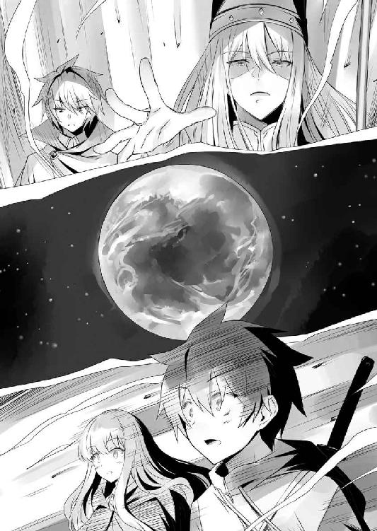

| ゼロの使い魔 21 六千年の真実<ゼロの使い魔> (MF文庫J) | |
| ヤマグチノボル | |
| (2016) | |
ゼロの使い魔 21
六千年の真実
ヤマグチノボル

本作品の全部または一部を無断で複製、転載、配信、送信したり、ホームページ上に転載することを禁止します。また、本作品の内容を無断で改変、改ざん等を行うことも禁止します。
本作品購入時にご承諾いただいた規約により、有償・無償にかかわらず本作品を第三者に譲渡することはできません。
本作品を示すサムネイルなどのイメージ画像は、再ダウンロード時に予告なく変更される場合があります。
本作品は縦書きでレイアウトされています。
また、ご覧になるリーディングシステムにより、表示の差が認められることがあります。
第一章 聖地の謎
光の射さない、真っ暗な海の底を、円筒形の船がゆっくりと進んでいく。
海竜の引く〝海竜船〟だ。
水面を走るのではなく、水の中を進む、潜水艦のような船である。
今から数時間ほど前......、エルフの水軍に追われた才人たちは、ルクシャナを追ってきたアリィーたちに救出され、〝竜の巣〟を脱出した。
アリィーは、エルフの評議会に死刑を宣告されたルクシャナを保護して、ガリアに亡命するつもりらしい。だが、エルフだけでハルケギニアに乗り込むというのは、さすがに無理がある。なので、彼らはガリア王室に顔の利く才人を交渉役にして、亡命を手引きしてもらおうという腹づもりなのだった。
ゴトゴトと揺れる薄暗い船室で、才人はずっと、ベッドに横たわるティファニアの手を握っていた。ティファニアの身体はエルフの治療装置に繋がれ、全身を包帯で巻かれている。ティファニアは『鉄血団結党』のファーティマに拳銃で撃たれ、瀕死の重傷を負ったのだった。
竜の巣を脱出してから、もうずいぶん経つが、まだ目を覚ます様子はない。ときどき、うわごとのように才人の名前を呟くだけだ。そのたびに、才人はティファニアの手を握り、声をかけ続けた。
「テファ、ごめん......、俺、テファのこと守れなかった」
ティファニアのそばに寄り添いながら、才人は何度も自分を責めた。
テファが撃たれたのは俺のせいだ。少し考えれば、水軍の砲撃が囮だってことくらい、予測できたはずなのに......。
あのとき、せめてテファを一緒に哨戒艇に乗せていればよかった。なのに、足手まといだとか、ひどいことを言って、テファを突き放してしまった。
......その結果が、これだ。
ちくしょう、なにがガンダールヴだよ。肝心なときに、大切な人を守れなくて......、ちょっと力があるからって、俺、自分のこと過信してたんだ。
才人は顔を上げると、船室の奥に寝かされた、もうひとりの少女を睨んだ。
ティファニアと顔立ちのよく似た、エルフの少女。ティファニアを撃った張本人である、ファーティマだ。激昂した才人に肩を砕かれ、昏倒していたところを、アリィーたちによってこの船に運び込まれたのだった。
少女はあどけない寝顔で、すぅすぅと穏やかな寝息をたてている。
才人は奥歯を噛むと、怒りを落ち着けるように、深呼吸した。
彼女はティファニアを殺そうとして、傷つけた。
絶対に許せないという気持ちがこみあげてくる。
もし......、もし、あのときティファニアが殺されていたら......、才人はきっと、怒りにまかせてファーティマに復讐していただろう。
でも、なにはともあれ、ティファニアは一命を取り留めたのだ。なら、それはやめようと思う。そんなことをしたって、彼女が悲しむだけだ。
「......サイト、ねえ、サイト......、そこにいるの？」
ティファニアが目をつむったまま、唇をかすかに動かした。
だが、意識を取り戻したわけじゃない。さっきから、もう何度も、熱に浮かされたように才人の名前を呼んでいるのだった。
「大丈夫、俺はずっとここにいる。俺は......、テファの使い魔だから」
「サイト......」
そんな才人の声に安心したのか、ティファニアはまた、穏やかな寝息をたてはじめた。
才人は握る手をそっと離すと、小さくため息をついた。
「......使い魔、か」
呟いた途端、胸のルーンが、ズキリと疼いたような気がした。
才人の胸にはいま、新たな使い魔のルーンが浮かんでいた。
生死の狭間にあったティファニアが、薄れゆく意識の中で唱えた〝召喚〟の呪文。その呼びかけに応じて、才人はティファニアのもとに呼び出されたのである。
わたし、嬉しいの......。〝召喚〟を唱えたら、サイトが来てくれた。わたしの居場所......、あったんだって。わたしとサイト、ちゃんと絆で結ばれてたんだって......
本来、すでにルイズの使い魔となっている才人の前に、召喚のゲートが開く道理はない。だが、才人を想うティファニアの願いは、そんな魔法の理すら超えて、才人を新たな使い魔として再召喚したのだった。
だが、同時に才人の頭には、いくつもの疑問が浮かんでくる。
才人の左手には、ガンダールヴのルーンが刻まれたままだ。......ということは、才人はルイズの使い魔でありながら、ティファニアの使い魔でもあるということになる。
使い魔の二重契約......、本当にそんなことがありえるんだろうか？
そして、四番目の使い魔の能力は、一体どんなものなんだろう？
ガンダールヴは武器を自在に扱い、ヴィンダールヴは生き物を操る、そしてミョズニトニルンはあらゆる魔法の道具を使うことができる。
〝じゃあ、四番目の使い魔は？〟
鈍く疼くような胸の痛みに、才人はなんだか、妙に不吉な予感を覚えるのだった。
〝俺たち、これからどうなっちまうんだろう〟
才人は、船室の窓から見える、真っ暗な海に目をこらした。
今は一体、どこを進んでいるんだろう。
もうエルフの国の国境を越えた頃だろうか......。
「ルイズたち、きっと心配してるよな......」
きっと今頃、姿を消した才人のことを、血眼になって探しているに違いない。
ド・オルニエールに残してきたルイズのことを思い出し、才人は胸が苦しくなった。
ルイズ、俺の可愛い恋人。くるくると動く深い鳶色の目。桃色がかったブロンドの髪、透き通るような白い肌、それに、小さく控えめな胸......、なにもかにもが愛おしい。
早くルイズに会いたい......、会って、思いきり抱きしめたい。エルフの国に連れてこられてから、まだ数日しか経っていないのに、そんな強い想いがこみあげてくる。
ルイズだけじゃない。シエスタに、タバサやキュルケ、コルベール先生、姫さま、ギーシュ、マリコルヌ、それに水精霊騎士隊の仲間たち......、みんなに会いたい。
そうだ。俺、ハルケギニアに戻ったら、みんなに〝聖地〟のことを報告しないと。
大事なことに思いあたり、才人は頭をかかえた。
聖地。始祖ブリミルが最初に降り立ったといわれる土地。エルフが〝悪魔の門〟と呼ぶ場所。教皇が言うには、そこに大陸隆起を止めるための、魔法装置があるという。
その〝聖地〟をめぐって、ハルケギニアの民とエルフは、幾度となく戦ってきた。
〝聖地は、あの海母の棲む竜の巣だ〟
才人には、その確信があった。
ガンダールヴの〝槍〟は、聖地のすぐ近くで発見される。
あの竜の巣には、地球の武器がたくさんあった。錆びた戦車や戦闘機、小銃にロケット・ランチャー、それに、とんでもない大きさの原子力潜水艦まで......。今は海の底に沈んでいるが、きっと六千年前、あの場所は陸地だったんだろう。
でも、そのことを素直に話してしまって、本当にいいんだろうか？
教皇もジュリオも、なにかを隠している気がしてならない。
〝風石〟の暴走による大陸隆起によって、ハルケギニアが滅亡する......、それは本当だとしても、まだ、どうしても拭いきれない不信感があった。
もしかすると、教皇は〝聖地〟の場所なんて、とっくに知っているのかもしれない。
〝あそこには、本当はなにがあるんだ？〟
海母は、あの海の底にある洞窟が、ただのゴミ捨て場だと思っていた。あの場所に本当に魔法装置なんてものがあるのなら、それを海母が知らないのはおかしい気がする。
開かれつつある〝聖地〟の謎。新たに刻まれた使い魔のルーン。そして、初代ガンダールヴであったサーシャが、ブリミルを殺した理由......。
六千年前にあの場所で何があったのか、その謎を解き明かさなければ、ハルケギニアを本当に救うことはできない......、才人にはなぜか、そんな気がしてならないのだった。
その六千年前のことを一番知っていそうな相棒は、もう何時間も前から、ずっと沈黙したままだ。
才人は、かたわらの壁にたてかけてある日本刀に話しかけた。
「なあ、デルフ、頼むから起きてくれよ。お前に相談したいことが山ほどあるんだ」
だが、デルフリンガーの返事はない。才人の胸に、四番目の使い魔のルーンが浮かんでから、うんともすんとも言わなくなってしまったのだ。意識を失っているのか、それとも、ただ寝たふりをしているだけなのか、才人にはわからない。
「なんなんだよ......。これ、そんなにヤバイもんなのか？」
才人はますます不安になって、自分の胸もとを見下ろした。
そのとき、船室の扉が乱暴に叩かれた。
「入るぞ、蛮人」
扉を開けて入ってきたのは、朝食の皿を手にしたアリィーだった。
アリィーは床に座る才人に一瞬目をやり、それからすぐに、ティファニアの頭側のベッドに寝かされているルクシャナに視線を移した。
「彼女の様子はどうだ？」
才人は首を横に振った。
「まだ起きない。でも、苦しんではいないみたいだ」
「そうか」
アリィーはルクシャナのベッドに歩み寄ると、辛そうに唇を噛んだ。
「ぼくに、治療魔法の素養があればいいんだがな」
ルクシャナの負った傷は深く、エルフの使う〝先住〟の魔法でも、簡単には治療できないらしい。また、アリィーたちは戦士としての訓練を受けたエルフなので、治療はあまり得意ではないのだった。
「ハーフの娘の容態はどうだ？」
「テファはずっとうなされてる。なあ、この治療装置で本当に大丈夫なのか？」
「ぼくたちも手は尽くしたさ。でも、この船に積んであるのは、あくまで応急用の装置だからな。どこかで、もっとまともな治療を受けさせないと」
アリィーは才人の横に腰を下ろすと、朝食の皿を仏頂面で差しだしてきた。
「イドリスが作った朝食だ。食べたまえ」
それは、薄いクレープのような生地に、炙った肉とスライスした玉葱、たっぷりの野菜の葉を挟み、赤い色のソースをかけた食べ物だった。ハルケギニアでは見たことのない料理だったが、才人はこれによく似た食べ物を知っていた。
「地球のケバブサンドに似てる」
「ケバブ？ なんだそれは？」
アリィーは怪訝そうな顔をした。
「悪いけど、食べてくれ。今は食欲がない」
才人は首を振った。正直、腹はものすごく減っている。でも、目の前でティファニアが苦しんでいるのに、自分だけ食べるわけにはいかないと思ったのだった。
「だめだ。無理にでも腹に詰め込んでおけ」
「あとで食べるよ」
「また水軍の連中と戦闘になるかもしれないんだ。お前が動けないと、ぼくたちも困る」
「......わかったよ。食べればいいんだろ」
アリィーの説得に、才人は不承不承、そのケバブサンドのような食べ物をつかんだ。
大きく口を開けてかぶりつき、やけになったように口の中に詰め込むと、水筒の水で、んぐ、んぐ......、と一気に流し込む。
「んぐ、ぐ......うめえ！」
うまい。そのケバブサンドは、とんでもなくうまかった。
甘辛のタレで味つけされた肉を野菜ごと噛みちぎると、肉汁が口の中に溢れ、玉葱の甘みと、たっぷり効かせた香辛料の香りが強烈にひろがる。
ひさびさに口にした食べ物に胃が刺激されたのか、才人の腹は、たちまちぎゅるぎゅると鳴りはじめた。
まるで、自分の身体が、空腹であったことを突然思い出したみたいだ。
「まったく、野蛮な食べ方だな。これだから蛮人は」
「うるせ。地球ではこうやって食べるんだよ」
指についたソースを舐めとりながら、才人は憮然として言い返した。
朝食を腹におさめてひと息つくと、ずっと張りつめていた緊張の糸が切れ、気持ちが少し落ち着いてきた。
才人は窓の外の暗闇を見つめながら、アリィーに尋ねた。
「俺たち、今どのあたりにいるんだ？ もう国境を越えたのか？」
「まだだ。軍船と違って、この〝海竜船〟はそんなに速度を出せないからな。それに、最短の海路には、水軍が網を張っている」
「連中、まだ俺たちを追ってきてるのか？」
「当然だろう。お前たちは悪魔で、ぼくたちはエルフの裏切り者だ。水軍を牛耳っているあの『鉄血団結党』の連中は、とにかく悪魔を殺すことに命を賭けてるんだ。どこまでも追ってくるに違いないさ」
それから、アリィーは、奥のベッドで眠るファーティマに目をやった。
「人質になるかもしれないからと思って連れてきたが、正直、役に立つかどうかはわからないな。悪魔を殺せるとなれば、仲間でも見殺しにするだろう、そういう連中だ」
才人は不安そうに船室の天井を見上げた。
「じゃあ、俺たち、これからどうするんだ？」
「エウメネスを中継して、陸路でガリアに向かう」
「エウメネス？」
「砂漠の最西端にある街だ。蛮人とエルフが交易している」
「人間とエルフが？ そんな場所があるのかよ」
才人は驚いた。プライドの高いエルフは、人間と交流なんて持たないと思っていたので、にわかには信じられなかったのだ。
「評議会は認めていないがね。国境付近では、まあ、そういうこともあるのさ。ルクシャナが蛮人を研究するために、よく出入りしていた街だ」
アリィーはルクシャナに視線を移した。
「エウメネスには、エルフの治療施設がある。そこで二人を治療しよう」
そのとき、船室が大きく揺れ、船のスピードがガクンと落ちた。
「どうしたんだ？」
「海竜の機嫌が悪いようだ。様子を見てこよう」
アリィーは立ち上がった。
「お前も少しは寝ておけ。いざというときに戦えるようにな」
「いいよ。テファが目を覚ましたとき、起きてないとさ」
「ふん、頑固者の蛮人め」
アリィーが呆れたように肩をすくめる。
と、ベッドの上で、うめくような声があがった。
「......ん、うう......」
「テファ!?」
才人はハッとして、顔を上げた。
だが、すぐに気づく。違う、この声はテファじゃない！
「この、悪魔ど、もめ......！」
美しい透き通るような金髪が揺れる。
ベッドから起き上がったファーティマの碧眼が、才人を憎々しげに睨んでいた。
第二章 アディール特攻
砂漠の夜が白々と明けていく......。黒い煙を激しく噴き上げながら、ルイズたちを乗せた『オストラント』号は全速力で飛び続けた。
フネを止めるものは、もうなにもなかった。戦艦十隻と巡洋艦六隻からなる、エルフの空軍艦隊は、ルイズの放った〝爆発〟によって、一隻残らず撃沈したのだ。
だが、激しい戦闘をくぐり抜けた『オストラント』号も、すでに満身創痍の状態だった。装甲には大きな穴がいくつもあき、無理をさせ続けてきた蒸気機関は、いまや壊れる寸前だ。こうして無事に飛んでいるのが、奇跡と思えるほどである。
「ジャン、見えてきたわ！」
キュルケが船縁から身を乗り出して言った。
「あれがエルフの都市、アディールか」
エルフの国、ネフテスの首都〝アディール〟。
砂漠を囲む海に突き出すようなかたちで造られた、巨大な人工都市である。
整然と立ち並ぶ白壁の建物。縦横に走る巨大な運河。周辺の海上には、同心円状の埋め立て地がいくつも浮かび、その間を多くの船が行き交っている。
そのあまりの規模に圧倒され、コルベールは思わず、ため息をもらした。
ハルケギニアの都市とはまったく異なるその光景は、エルフと人間の圧倒的な技術力の差を、まざまざと見せつけられるようだった。
同時に、コルベールは暗澹たる気持ちになった。自分たちはこれから、こんなものを造る連中を相手にしなくてはならない......。
海に突き出したアディールの中心部に、巨大な白塗りの塔がそびえていた。
目測で二百メイル近くもあるその塔は、ハルケギニアにあるどの建築物とも似ていない、一切の無駄な装飾を廃した、機能的な外観だ。
あの建物こそ、エルフの最高権力機関〝評議会〟のある、カスバに違いなかった。
アディールの中心部まで、あと十数リーグ......。
全員が緊張する中、ギーシュが口を開いた。
「コルベール先生、質問があるのですが」
「なんだね、ミスタ・グラモン」
「ぼくたちは、どこに着艦するんですか？」
塔の屋上には、風竜の発着場らしきものがあるが、とても大型のフネが着艦できるようには見えなかった。
「あの塔に突っ込む」
コルベールはきっぱりと言った。
ギーシュは耳を疑った。隣のキュルケまでもが目を丸くする。
「ちょっと、正気なの？」
操舵輪を握るエレオノールが叫んだ。
「もちろん、こんなのは正気の沙汰ではない」
「は？」
「だからこそ、エルフを少しは混乱させられる可能性がある」
コルベールは大真面目に言った。
敵の裏をかく奇策、などという立派なものではない。だが、エルフと正面からまともにやり合ったところで、万に一つも勝ち目はない。だから、万分の一の可能性に賭ける、こんな方法しか思いつかなかったのだ。
「いくらなんでも、無謀すぎるわよ！」
「エルフの本拠地に乗り込むという時点で、すでに無謀の極みでしょう」
コルベールは言い返した。
「も、もし、失敗したら？」
「そりゃあ、木っ端微塵だろうなあ」
マリコルヌが楽しそうに言った。
「あ、あんたね......、下手すれば死ぬのよ」
「だから、責任重大っすよ。お姉さんの操縦しだいなんだから」
「甲板から蹴り落とされたいの？」
「まあ、美人のお姉さんと一緒なら、心中もそんなに悪くないですけどね」
「それは絶対、嫌よ」
マリコルヌを舷縁に蹴り転がすと、エレオノールは、覚悟を決めたように操舵輪を握りなおした。
「こんなところで死ねないわよ。まだ結婚だって諦めてないんだから」
『オストラント』号は、進路をまっすぐ〝カスバ〟に向けた。
険しい表情で甲板に立つコルベールのそばに、キュルケがそっと寄り添う。
「ジャン、あたしはあなたについていくわ。たとえ地獄の果てまでも」
「ありがとう、ミス・ツェルプストー」
キュルケはふと、甲板の隅に座る、青い髪の親友のことが気になった。
「あきれた。あなた、こんなときにまで本を読んでいるの？」
タバサは本に目を落としたまま、こくりと頷いた。
「本当、マイペースな娘なんだから」
なにがそんなに面白いのかしら......、と、キュルケはタバサの背後に忍び寄り、表紙のボロボロになったその本を覗き込んだ。
そして、怪訝そうに首を傾げる。
タバサが読んでいるのは、挿絵のついた、子供向けの本だったのである。
「珍しいわね。いつもは小難しい本を読んでるくせに」
「大切な本」
「ふうん......」
キュルケは興味を失ったように呟くと、こんどは船首のほうへ目を向けた。
そこではシエスタの膝の上で、ルイズが眠っていた。
エルフの艦隊に特大の〝エクスプロージョン〟を放ったことで、精神力が底を尽き、その場で眠り込んでしまったのだ。
「かわいそうに。つぎの目覚めは騒々しくなりそうね」
「蛮人がここに攻めてくるだと？」
「アムラン上将はなにをしていたのだ！」
その頃......、〝カスバ〟の評議会は、混乱のただ中にあった。
なにしろ、本国の空軍艦隊が壊滅し、蛮人のフネが直接、このアディールに乗り込んでくるというのである。長年にわたるエルフと人間の戦争の歴史の中でも、前代未聞の大事件であった。
「ふむ、我々はどうやら、蛮人の野蛮さを少し侮っていたようじゃな」
議長席に座る老エルフ、テュリュークの呟きに、議員たちは渋い顔になった。
「笑いごとではありませんぞ、統領閣下。連中はきっと、あの悪魔の〝担い手〟どもを取り戻しにきたのでしょう」
議員の一人が言った。
「まさか、この〝カスバ〟に乗り込んでくるつもりですかな」
「ここにはわずかな衛兵しかおりませんぞ」
「なに、蛮人どもなど、乗り込んできたところでなにができる」
若いエルフの議員が嘲笑い、何人かがそれに同調した。
たしかに、評議会のエルフは、その一人一人が、強力な〝先住魔法〟の行使手だ。蛮人のメイジごときにおくれをとるはずがない、そう侮るのも無理のないことだった。
侃々諤々の議論の中、テュリュークはひとり、内心で頭をかかえていた。
〝まったく、どしがたい阿呆どもじゃ〟
なにしろ、この期におよんで、まだのんびりとこんな会議をしているのだから。
数百年にわたる平和と安寧が、評議会を腐敗させた。その挙げ句に『鉄血団結党』のごとき狂信者どもの台頭を許してしまったのである。
「相手が蛮人とて、油断は禁物じゃ。現に本国艦隊は全滅したのじゃからな」
テュリュークが議論に水を差すと、全員が気まずそうに口をつぐんだ。
「とにかく、あまり蛮人を侮らぬほうがよいということじゃ。連中は、我々の思いもよらぬ方法で攻めてくるやもしれんからのう」
そんなテュリュークの言葉にも、議員たちは納得しかねているようだった。
テュリュークはため息をつくと、難しい顔で虚空を睨み、何かをじっと考えはじめた。
「ミス......、ミス・ヴァリエール、起きてください」
「う、ううん......」
シエスタが優しく肩を揺すると、ルイズは寝返りをうった。
「......サイト、だ、だめよ、お庭で首輪なんて......、もう、なに考えてるのよ......」
「なんて夢を見てるんですか」
シエスタはジト目になった。
「寝ぼけてないで、早く起きてください、エルフに対抗できるのは、ミス・ヴァリエールの虚無だけなんですから」
「......ん......もう、許せないわ......ぜったい、許せないんだから、き、貴族のわたしに、そんな恥ずかしい格好、させるなんて......」
シエスタはため息をつくと、ルイズの耳もとに顔を寄せた。
「本当に起きてくださいよ。ほら、起きて......起きてください。起きろ、胸なし」
ぴくっ。
「貧乳。まな板。タルブの大平原」
ぴくぴくっ。
「ぺったん、ぺったん、ぺったんお胸～」
耳もとで謎の歌を歌いはじめたシエスタに、ルイズの耳がぴくぴくと反応する。
「ミス・ヴァリエールのお胸はぺったんたん～、すっとんとんのぺったんたん～」
とうとう、ルイズはガバッと起き上がった。
「メイド、あ、あ、あんたね！」
「あ、やっと起きましたね。ほら、突っ込みますよ、準備してください」
「突っ込む？」
寝ぼけまなこのルイズが聞き返した。
「はい。あの塔に、フネごと体当たりするらしいです」
「は？」
ルイズの眠気が一気に吹っ飛んだ。
「なに？ なに言ってるの？ 意味がわからないわ」
そのとき、『オストラント』号の甲板が大きく斜めに傾いだ。
「ちょ、ちょっと、なに......、きゃああああああっ！」
ルイズとシエスタは抱き合ったまま、甲板の上をごろごろと転がった。
「突入するぞ！ ミスタ・グラモン、フネの舳先に〝硬化〟を！」
コルベールが号令をかける。ギーシュたちは必死に舷縁に掴まりながら、〝硬化〟の呪文を唱え始めた。魔法の光がフネの装甲を何重にも覆っていく。
「総員、近くの手すりに掴まれ！」
『オストラント』号は斜めに傾いだまま、ぐんぐんと高度を下げていく。
「ふん、こうなったら、やってやるわよ！ 行かず後家の意地を見せてやるわ！」
エレオノールが操舵輪を握りながら、やけくそ気味に叫んだ。
「その意気っすよ、お姉さん」
「おだまりなさい！」
エレオノールはまたマリコルヌを舷縁に蹴り転がした。
塔のエルフたちも、ようやく、こちらの意図に気づいたようだ。バルコニーに出てきたエルフの衛兵たちが、あわてて先住の魔法を唱え始める。
無数の火球や光の矢、風の刃が放たれ、フネの装甲が剥がれていく。これだけの巨大質量を撃ち落とすことは無理だとしても、せめて進路を逸らそうというのだろう。
「小豚、あれを吹っ飛ばしなさい」
「はいはい、でっかいのお見舞いしてやりますよ、っと」
マリコルヌは転がるように前甲板の〝主砲〟にとりつくと、ぺろっと舌を舐めた。
砲塔にペイントされた『３２４』の数字。
『オストラント』号の主砲は、普通の大砲ではない。コルベールが無理矢理改造して搭載した〝タイガー戦車〟の88㎜砲である。
レンズを覗き込み、エルフのいるバルコニーに照準を定めると、マリコルヌは発射レバーを思いきり引く。
ガウンッ！
轟音。砲身から勢いよく煙が噴出し、巨大な薬莢が排出される。同時に、まっすぐに飛んだ砲弾が、塔のバルコニーを粉々に粉砕した。
「やるじゃない、ぽっちゃり！」
衝撃波で吹っ飛んできたマリコルヌの頭を踏みながら、エレオノールが操舵輪をぐるんぐるん回す。マリコルヌは幸せそうな顔で踏まれるがままだ。
巨大な〝カスバ〟の威容がぐんぐん迫ってくる。
五十メイル、四十メイル、三十メイル、二十メイル......。
「ぶつかる！」
ギーシュが叫んだ。
次の瞬間、『オストラント』号の舳先が、塔の壁に衝突した。
ドオオオオオオオオオオオオオンッ！
「きゃああああああああっ！」
予想以上の衝撃に、ルイズとシエスタは思わず舷縁から手を離した。
フネの外に身体が放り出される。一瞬の浮遊感。あ、落ちる......、と思ったその瞬間、なにかに襟首を掴まれ、ぐんっと持ち上げられた。
「え？」
「きゅいきゅい、まったく、ちび桃は世話がやけるのね！」
ルイズはおそるおそる目をあけた。タバサを乗せたシルフィードが、ルイズとシエスタの襟首を爪で引っかけていた。
「あ、ありがとう」
ルイズが呟くと、タバサは無表情でこくり、と頷いた。
盛大に舞い上がった土煙が晴れる。
巨大な『オストラント』号の舳先が、塔の中腹に埋まっていた。
装甲の大部分は破損したものの、動力はなんとか無事なようだ。もし、木造のフネだったら、たとえ〝硬化〟の魔法をかけていようと、ポッキリ折れていたに違いない。
「全員、無事のようですな」
コルベールが咳き込みながら立ち上がった。
「ミス・エレオノール、じつに素晴らしい操舵でしたぞ」
「もう、無茶苦茶よ......」
エレオノールが咳き込みながら文句を言った。
「さて、これよりエルフの総本山へ乗り込む。きみたち、覚悟はできているかね」
コルベールの言葉に、誰もが無言で頷くと、それぞれ杖を引き抜いた。
「よろしい」
コルベールが先陣を切って、フネの甲板から飛び降りた。ルイズ、キュルケ、ギーシュ、マリコルヌ、タバサとそれに続く。
メイジでないシエスタ、そして操舵手のエレオノールは、エルフを人質にとったあと、すぐに飛び立てるように『オストラント』号に残った。
「気をつけるのね、おちび、きゅいきゅい！」
心配そうに鳴くシルフィードに、タバサは「大丈夫」と頷いた。
舷縁から身を乗り出したシエスタが、ルイズに声をかける。
「ミス・ヴァリエール、絶対にサイトさんとミス・ウエストウッドを連れて帰ってきてくださいね。約束ですからね」
「ええ、約束するわ」
「ミス・ヴァリエールも、無事に帰ってこなきゃだめですよ」
「もちろんよ」
「ぜったい、ぜったいにですよ！」
「わかっているわ」
「もし......、もしミス・ヴァリエールが帰ってこなかったら、わたし、サイトさんをとっちゃいますから」
「それはだめ」
ルイズが即答すると、シエスタはにこっと微笑んだ。
「あら、足が震えてるわよ、ギーシュ」
「なに、これは武者震いというやつさ」
からかうキュルケに、ギーシュは嘯いた。
「相手がエルフだからなんだ。サイトはぼくのゴーレムに、何度叩きのめされても立ち向かってきた。平民がメイジに立ち向かったんだ。それに比べれば、エルフと戦うくらい、たいしたことはないさ」
ギーシュは杖をぐっと握りしめた。
「なにしろ仲間を救うために戦うんだ、これは名誉の戦いだぜ、きみ」
「そうそう、仲間と......、おっぱいエルフちゃんだ。最高じゃないか。ロマリアの連中の唱える聖戦なんかより、よっぽど単純でいいね」
マリコルヌが言った。
「ああ、ついでに世界も救うんだからな。きみ、もしここから生きて帰ってくることができたら、ぼくたちはたいそうモテるんじゃないかね？」
「ギーシュ、きみにはモンモンがいるだろ」
「それはそれさ、モテて困ることはなにもないだろう？」
「まあね」
二人は不敵に笑い、肩を叩き合った。
「あんたたちね......」
そんな二人をルイズがジト目で睨む。
コルベールがコホンと咳払いした。
「突入したら、なるべく、身分の高そうなエルフを人質にとるんだ。そして、サイト君たちとの人質交換を申し出る」
「身分の高そうなエルフを、どうやって見分けるの？」
と、ルイズが尋ねる。
「少なくとも、衛兵の格好をしていないエルフだ」
アーハンブラにいたエルフみたいな奴ね、とルイズは勝手に想像した。
「下から上ってくる衛兵は、わたしが引き受ける」
タバサが言った。
「一人で大丈夫なの？」
ルイズが心配そうに声をかける。
「大丈夫。単独行動は慣れてる」
「気をつけてね」
タバサは小さく頷くと、〝フライ〟の呪文を唱え、塔から飛び降りた。
「ミス・ヴァリエール、虚無はあとどれくらい放てそうかね」
「たぶん、数回くらいは使えると思うわ」
ルイズは強がったが、正直、艦隊を沈めたあの特大の〝エクスプロージョン〟を使ったことで、精神力はほとんど尽きていた。
だが、絶対にサイトを救うのだ、というその想いが、ルイズの心を震わせた。心の震えは、虚無を唱える精神力そのものだ。怒りよりも、喜びよりも、悲しみよりも強い......、サイトを想う、この心の震えがある限り、きっと、なんとかなるはずだ。
サイト、待ってて......、わたし、必ずあなたを助けるわ。
もしかしたら、エルフに記憶を奪われているかもしれない。わたしのこと、忘れてしまっているかもしれない。そうだとしても、絶対にあきらめないわ。
だって、わたしは使い魔であるあいつのご主人様で、こ、恋人なんだもの......。そうよ、あいつと再会したら、今度はめいっぱい抱きしめてもらうわ、そんで、キ、キスだったしてもらうんだから......。
「ちょっと、なにぼーっとしてるのよ？」
キュルケが怪訝そうに眉をひそめる。
「ぼ、ぼーっとなんてしてないわ！」
ルイズの顔が真っ赤になった。
「では行こう、サイト君とティファニア嬢を救うために」
コルベールが杖を真上に掲げて言った。
全員、無言で杖の先を合わせると、塔の中に突入した。
第三章 エルフの塔
〝カスバ〟に突入したルイズたち一行は、コルベールを先頭に通路を突き進んだ。
壁の両脇に掲げられた、ランタンのような魔法装置が、扉の並ぶ通路を薄暗く照らしている。建物の内部は、彫刻や絵画など、無駄な装飾の一切が排除されており、ハルケギニアの宮殿とはまったく異質な雰囲気を感じさせた。
建物に低いサイレンの音が鳴り響く。
「足音はなるべくたてないように。ここからは、私の指示に従ってくれたまえ」
コルベールは小声で言った。その額にじわりと汗がにじむ。これまでの人生で感じたことのない、すさまじい緊張感だった。
見取り図も何もない状態での、敵地への潜入。かつて、魔法研究所実験小隊の小隊長だった頃には、様々な作戦を指揮してきたが、こんな無謀な作戦は初めてだった。
しかも、相手はエルフである。
はたして、生きてここを出られるだろうか。最悪、もし作戦の遂行に失敗したとしても、生徒たちだけでも逃がさなくては......、コルベールの表情はいっそう険しくなった。
「エルフたちは、どこにいるのかしら？」
「そりゃあ、お偉いさんの集まる場所は大抵、建物の上のほうにあるんじゃないかね」
小声で囁くルイズに、ギーシュが答えた。
「まあ、ハルケギニアでは、そうね」
さらに進むと、通路の交差する広間のような場所に出た。コルベールは足を止め、あとに続く生徒たちを杖の先で制した。
「ジャン、どうしたの？」
「エルフだ」
簡潔なその言葉に、全員が息を呑む。
通路の先に姿を現したのは、衛兵の制服を着たエルフたちだった。
エルフは、たった一人でも一騎当千の戦士だ。それが三人もいる。
すでにこちらに気づいているようだ。抜き放った刀剣を手に、走り込んでくる。
コルベールは即座に〝フレイム・ボール〟を唱えた。
スクウェア・クラスのメイジの放つ炎の四乗。〝炎球〟よりもふたまわり大きい炎の塊が三つ、緋色の尾を曳き、エルフたちに襲いかかる。
爆発。轟音が連続して空気を震わせ、通路を激しい炎が荒れ狂う。
温厚なコルベールの印象とはかけ離れた、容赦の一切無い攻撃に、背後のルイズたちは息を呑む。
「人質にしなくていいんですか？」
マリコルヌが言った。
「衛兵では人質にならないだろう。それに......」
コルベールは険しい表情で、燃え上がる炎の向こうを睨む。
「手加減できる相手ではなさそうだ」
ゴウッと風の吹くような音がした。すると、炎はまるで大きな渦に吸い込まれるようにして、たちまち消滅してしまった。
エルフの戦士たちは、火傷ひとつ負っていなかった。
「あれがエルフの〝先住魔法〟か......、とんでもない力だ」
コルベールは唸った。エルフの戦士たちはエルフ語でなにか言葉を叫んだ。悪魔という単語が聞こえたので、きっと罵りの言葉だろう。
「ここはぼくに任せたまえ」
ギーシュが勇ましく前に出て、薔薇の杖を振った。七枚の花びらが宙を舞ったかと思うと、短槍を手にした七体の青銅の戦乙女が出現し、エルフの前に立ちはだかる。
「行け、ぼくのワルキューレ！」
ギーシュが号令を放つと、青銅の戦乙女たちはまっすぐに突撃した。
だが、武器を手にしたエルフたちは軽々と跳躍すると、縦横無尽に剣を振るい、青銅の戦乙女の軍団をたちまちバラバラにしてしまう。
「おいおい、嘘だろう？」
ギーシュの顔が青くなった。コルベールの額にも冷たい汗が浮かぶ。
華奢なエルフの身体に、とてもそんな力があるようには見えない。おそらく、武器も肉体も、先住魔法で強化しているのだろう。
「こりゃあ、逃げたほうがよさそうだね」
「わたしも賛成だ」
マリコルヌの提案に、コルベールが頷く。
ここで徹底抗戦する意味はない。ルイズの虚無なら通用するかもしれないが、こんなところで切り札を使うわけにはいかない。
「こっちにも通路があるわ」
ルイズが反対側の通路を指差した。
「よし、急ぎたまえ。ここはわたしが足止めする」
コルベールがすっと杖を突き出した。その尖端から、巨大な炎の蛇が躍り出る。
生徒たちの前では決して見せることのない、感情のない冷たい笑み。その触れれば火傷しそうな気配に、キュルケ以外の全員がゾクリと背筋を震わせた。
〝炎蛇のコルベール〟。その二つ名を象徴するような炎の蛇は、鞭のようにしなると、エルフの戦士たちに襲いかかる。
猛り狂う炎の蛇に、さしものエルフの戦士たちも、たたらを踏んだ。まさか、蛮人のメイジに、これほどの使い手がいるとは予想していなかったのだろう。
「先生！」
「早く、行くんだ！」
コルベールの鋭い声に、ルイズたちはあわてて通路の奥へ駆けだした。
コルベールは後退しながら、二匹目の炎蛇を出現させた。むろん、ここでいつまでも踏みとどまれるなどとは思っていない。なにしろ、相手はエルフだ。
コルベールは一瞬、通路の天井に視線を移した。そして、冷徹に計算する。
〝もう少し、引きつけるべきだな〟
二匹の炎蛇が絡み合い、執拗に獲物を追いたてる。攻めあぐね、業を煮やしたエルフの一人が、なにか呪文を唱え始めた。それがどんな種類の魔法であれ、完成すれば勝ち目はない。強力な〝先住魔法〟の前では、小手先の魔法など通用しない。
〝そうはさせんよ〟
コルベールは炎蛇を消滅させると〝炎球〟の呪文を唱えた。
たて続けに三発、天井の亀裂に向かって。
爆発。天井は轟音と共に崩落し、真下にいたエルフたちを押し潰した。
おそらく、フネが衝突したときにできたものだろう。コルベールは後退しながら炎蛇を巧みに操り、エルフたちを亀裂の下に誘導していたのだった。
コルベールは杖を振り、崩れ落ちた瓦礫の山に土魔法の〝錬金〟をかけた。瓦礫の山はたちまち固まり、ひとつの大きな塊になってしまう。
エルフたちは先住魔法で肉体を強化していた。瓦礫に押し潰されたくらいでは、死にはしないだろう。だが、多少の足止めにはなるはずだ。
「急がねばな」
コルベールが急いでルイズたちのあとを追おうとした、そのときだ。
〝錬金〟で固めたはずの瓦礫の山が、まるで生き物のように、ぬるりと動いた。
階下の衛兵を足止めするため、別行動をとったタバサは、『オストラント』号の砲撃によって破壊されたバルコニーの残骸に、ふわりと降り立った。
〝エア・ハンマー〟でガラスの窓を叩き割り、塔の中に進入する。衛兵の注意を引きつけるため、わざと派手な音をたてたのだ。
タバサが足を踏み入れたのは、魔法のランタンの明かりに照らされた、円形のロビーのような空間だった。奥に大きな金属製の扉がある。
と、次の瞬間、その扉が勢いよく開いた。
現れたのは、武器を手にした三人のエルフたちだ。
タバサは即座に〝ウィンディ・アイシクル〟の魔法を放った。
鋭利な五本の氷の矢が、エルフたちめがけて飛んでいく。
しかし、氷の矢が目標に到達することはなかった。エルフたちの周囲に吹く、竜巻のような風に、あっさりと弾かれたのだ。
風の先住魔法だ。だが、それはタバサも予測していた。その上で、相手の力を確かめるために、敢えて威力の低い魔法を放ったのである。
敵の中に、あの恐るべき〝反射〟の使い手はいない......、タバサはそう判断した。やはり、あれほどの先住魔法を扱えるのは、エルフの中でもごく一部なのだろう。
タバサは杖に〝ブレイド〟の呪文を唱え、エルフたちの中に素早く斬り込んだ。
エルフの反応は鈍かった。蛮人のメイジは大仰な詠唱をして、隙だらけ......、それがエルフたちの常識であった。素早く動き、敵に唇の動きを見せずに戦う、そんな暗殺者のようなメイジと戦うのは初めてだったのだ。
杖の尖端から伸びる真空の刃が、〝風盾〟ごと、リーダー格の軍服を切り裂く。
エルフが驚愕の表情を浮かべた。タバサは杖を素早く回転させ、至近距離で〝ジャベリン〟を放った。
巨大な氷の槍が胸当てを直撃し、リーダー格のエルフは吹っ飛んだ。
〝まず、一人〟
杖を引き戻しながら、タバサは冷静にカウントした。
本来のタバサの戦闘スタイルは、遠距離から手数の多さで圧倒するものだ。〝ブレイド〟を用いた接近戦はさほど得意ではない。
だが、強力な先住魔法を使うエルフと正面から戦っても、絶対に勝ち目はない。
ゆえに取り得る戦法は、先手必勝。人間のメイジを侮っている油断を突き、混乱しているうちに、倒しきってしまうしかない。
杖にさらなる魔力を込めながら、タバサは心が冷たく凍てついていくのを感じた。
精神が極限まで研ぎ澄まされ、周囲がスローモーションのように見える。目を見開くエルフの表情までもが、はっきりと知覚できた。
〝これでいい〟
あの頃の感覚だ。冷徹な、絶対零度の心に戻らなくては、エルフには勝てない。
雪風のタバサ。北花壇騎士団の〝七号〟と呼ばれた、あの頃に。
タバサは背後にかすかな気配を感じた。それは、長年、影の始末屋として勘を磨き続けてきたタバサだからこそ感じとれた、ほとんど直感のようなものだった。
タバサはとっさに身をかがめた。頭上すれすれを剣の軌跡が薙ぐ。
振り向きざま、背後に回り込んだエルフに〝ジャベリン〟を撃ち込む。吹っ飛ぶエルフを視界の隅に確認し、タバサは残る一人に斬りかかった。だが、敵もさるもの、不可視の刃の尖端を紙一重で躱して後退すると、先住の魔法を唱え始める。
タバサの心に、かすかな焦りが生まれた。
メイジの魔法は、先住魔法に太刀打ちできない。
タバサは追撃をかけようと前に出た。だが、それが相手の狙いだった。
違和感。足が沼に沈むような感覚。
タバサはとっさに〝フライ〟の呪文を唱えた。だが、間に合わない。床から這い出てきた腕に足首を掴まれ、地面に引きずり倒される。
戦士はエルフ語でなにかを叫び、刀を振り下ろした。
タバサは素早く転がると、杖の芯で刃を受ける。目の前に刃がある。タバサのブルーの瞳がかすかに揺れ、凍てついた心に恐れの感情が忍び寄った。
エルフの恐ろしさは、ほかならぬタバサ自身が一番よく知っている。旧オルレアン邸に、たった一人で母親を助けに行ったあのとき......、タバサはエルフにまったく歯が立たなかったのだ。
刃が鼻先に押し当てられる。ここまでか......、タバサは覚悟して目をつむる。
そのとき、タバサの脳裏に浮かんだのは、密かに想いを寄せる少年の顔だった。
その姿が、タバサが読んでいた本に出てくる、主人公の姿と重なった。
〝イーヴァルディの勇者〟
それは、タバサが幼い頃に憧れた、物語の勇者だった。
あのときは、わたしが勇者に救われるお姫様だった。でも、今度は、私があの人を救う、イーヴァルディの勇者になる。
〝こんなところで、死ねない〟
タバサは目を開き、呪文を唱えた。
「ラグーズ・ウォータル・イス・イーサ・ハガラース......」
杖の先が光を放ち、強力な風が生まれる。
エルフの顔に動揺が浮かんだ。追い詰めたはずの獲物が、再び牙を剥いたのだ。
刀にさらなる力を込め、杖ごとタバサを斬ろうとする。
タバサはもう恐れなかった。冷徹な声で、呪文を唱え続ける。
周囲の空気が揺らぎ、一瞬で凍りついた。凍った空気の束が二人の周囲を回転する。
エルフは信じられない、という顔で目を見開いた。この距離でそんな呪文を使えば、タバサ自身も無事ではすまない。
だが、タバサは躊躇わなかった。一切の恐怖を凍てつかせ、呪文を完成させた。
〝氷嵐〟
スクウェア・クラスの威力を持つトライアングル・スペル。触れたものを一瞬で両断する氷の刃がロビーを吹き荒れる。
強烈な氷の竜巻が、タバサの小柄な身体を勢いよく弾き、壁に叩きつける。
タバサはゆっくりと目を開け、周囲を見回した。甲冑をズタズタに切り裂かれたエルフの戦士が、目の前の床に倒れていた。呪文を回避しようと咄嗟に離脱したため、渦の中心に近かったタバサよりも、かえってダメージは大きかったようだ。
タバサはよろよろと立ち上がった。
倒したエルフは三人......、これほどの手練れが、あとどれくらいいるのだろう。
タバサは〝暗視〟の魔法をかけると、ロビーの外の通路に出た。階下からくる衛兵を、倒すとまではいかずとも、足止めしなくてはならない。
そのとき、通路の奥で靴音がした。
靴音はひとつ、ゆっくりとこちらへ向かって歩いてくる。
タバサは杖を構えた。
と、暗闇の中から、フード付きのローブを着たエルフが姿を現した。
タバサの額を冷たい汗が流れ落ちた。
先ほどのエルフたちとは、気配が明らかに違う。
〝強い〟
タバサの歴戦の戦士としての勘が、そう告げる。
エルフがこちらに気づき、足を止めた。
タバサは無言で〝ウィンディ・アイシクル〟を放った。だが、タバサの放った氷の矢は、エルフの胸もとに届く寸前で方向転換すると、タバサめがけて襲いかかった。
〝反射〟だ。
タバサは杖の尖端で氷の矢を弾くと、即座に〝ブレイド〟を唱え、駆けだした。
ローブ姿のエルフがゆっくりと手をかかげる。先住の魔法を唱えるようだ。
魔法が完成すれば、命はない。タバサは風のように走り込み、真空の刃を纏う杖を、エルフの首に振り下ろした。
だが、真空の刃はあっさりと弾かれ、タバサは吹き飛ばされる。
「無駄だ。いかなる刃も、わたしの〝反射〟を貫くことはできない」
フードからのぞく紺碧の瞳が、床に倒れたタバサを見下ろした。
「あなたは......！」
タバサは固まった。その氷のような表情に、驚きの色が浮かぶ。
「その髪、その目......、ガリアの姫君か」
ビダーシャル。
アーハンブラでタバサ母子を閉じ込めた、あの恐るべきエルフだった。
「ふぅ、ふぅ......、ま、待ってくれよ！」
「きみ、もっと早く走れないのかね。エルフに追いつかれるぞ」
早くも息を切らしはじめたマリコルヌに、ギーシュが声をかける。
「ぼくは走るのは苦手なんだよ」
「床を転がったほうがマシなんじゃない？」
キュルケが言った、そのときだ。
背後で轟音がとどろいた。
ルイズたちはその場で足を止め、後ろを振り向く。
「コルベール先生？」
ルイズが心配そうに呟いた。
鳴り続けるサイレンの音が、不安を増大させる。だが、しばらくすると......、軽快な足音が聞こえ、通路を走ってくるコルベールの姿が見えた。
「ジャン......」
「エルフを足止めできたのね」
こちらへ走ってくるコルベールの姿に、ルイズたちはほっと安堵した。
だが、みんな、すぐにその様子がおかしいことに気づく。
先生はどうして、あんなに必死な顔で、全力疾走しているんだろう？
「あ、あれは、なんだね？」
ギーシュが青い顔で、コルベールの背後を指差した。
全員、そこにあるものを見て、目を丸くした。
なんと、巨大な石の〝腕〟が、逃げるコルベールを追ってきているのだ。
「な、なによあれ！」
「なにって、エルフの〝先住〟に決まってるだろ！」
ギーシュがやけくそ気味に叫んだ。
逃げてきたコルベールが、声のかぎりにどなった。
「きみたち、走りたまえ！ あれはメイジの魔法ではどうにもならん！」
言われるまでもなく、ルイズたちはいっせいに通路を駆けだした。
「ど、どこまで追ってくるのかしら？」
「そりゃ、ぼくたちを潰すまでだろ」
引き攣った顔で尋ねるルイズに、マリコルヌが言った。
「どうするのよ！」
「なあ、ルイズ、いい作戦を思いついたんだがね」
ギーシュが息を切らしながら言った。
「どんな作戦よ？」
「みんなで謝ろう。エルフだって、話せばわかってくれるかも......」
「そんなわけないでしょ、フネで突っ込んでるのよ。だいたい、わたしたち、誰もエルフ語を喋れないじゃない」
「名案だと思ったんだがなあ」
ギーシュは走りながら、天を仰いだ。
「扉があるぞ！」
と、マリコルヌが前方を指差した。
通路の奥に、小さな扉がある。横道はなく、行き止まりのようだ。
「あそこに逃げ込むしかないみたいだな」
「そうね......」
背後から迫る、恐ろしい轟音は、どんどん近づいてくる。
ルイズたちは扉を目指して、一気に駆け込んだ。
いち早く扉の前にたどり着いたギーシュが、思いっきり扉を押しこんだ。
「開かないぞ、鍵がかかってるのか？」
「どきなさい」
キュルケが杖を抜き〝ファイア・ボール〟の呪文を唱える。
扉が盛大に吹っ飛んだ。
扉の奥にあったのは、数人ほどしか入れない、円形の小部屋だった。
キュルケは落胆した。
「どちらにせよ、行き止まりみたいね」
ルイズたちは背後を振り返った。先住魔法で生み出された巨大な〝腕〟は、通路の壁に引っかかりながらも、ものすごい勢いで迫ってくる。
このままでは、みんな仲良くぺしゃんこだ。
「ああ、偉大なる始祖ブリミルよ、か弱きわれらをお守りください」
「ちょっと、ギーシュ！」
杖を放り投げ、床にへたりこんだギーシュの耳を、ルイズが引っぱる。
コルベールは真剣な顔で、小部屋の床にかがみ込んでいた。
「ジャン、どうしたの？」
「これは昇降機だ」
尋ねるキュルケに、コルベールは言った。
「昇降機？」
「風石の力を利用して、人を運ぶ魔法装置だ。トリスタニアの魔法研究所に、似たようなものがある」
「エルフじゃなくても動かせるの？」
「ああ、なんとかなるかもしれない」
コルベールは、床の円板を丹念に調べ始めた。
「コルベール先生、早く！」
ギーシュが叫んだ。
ズシン、ズシン、と床が大きく揺れる。
巨大な石の〝腕〟は、もう目の前に迫っている。
マリコルヌがたて続けに〝エア・ハンマー〟を唱えた。
キュルケが杖の先から〝ファイア・ボール〟を放つ。
ギーシュは土の魔法で、目の前に大きな壁を作り上げた。
だが、どの魔法も通用しなかった。〝腕〟はいともたやすく壁を打ち壊すと、指を開き、怯えるルイズたちを、まとめてわし掴みにしようとする。
「うわあああああ！」
「動いたぞ！ 早く乗り込みたまえ！」
コルベールの大声に、全員、あわてて昇降機に乗り込んだ。
五人が乗り込むと、昇降機の中はたちまち、ぎゅうぎゅう詰めになった。
コルベールが魔力を使って風石を起動する。
ブンッ、と一瞬の浮遊感があり、円板が下降を始めた。
「た、助かったのね......」
降りていく昇降機の中で、ルイズたちはほっと安堵の息をつく。
だが、それも束の間だった。
ゴゴゴゴゴゴゴゴゴ......！
低い唸るような音が、頭上から聞こえてくる。
「なんだか、嫌な予感がするぞ」
ギーシュが言った。
「奇遇ね、わたしもよ」
ルイズはおそるおそる、上を見上げた。
その瞬間、昇降機を強い衝撃が襲った。天井がぐにゃりとひしゃげて変形する。
「ひっ！」
ギーシュが頭をかかえた。
衝撃が二度、三度と続く。とうとう天井が吹き飛んだ。
同時に、昇降機がピタッと停止した。
「早く、外に！」
コルベールが叫ぶ。ルイズたちは転がるように外に出た。直後、轟音が響き、乗っていた昇降機が、石の〝腕〟に押し潰されて、ぺしゃんこになる。
「しつこいやつね！」
キュルケが毒づいた。
「わたしがやるわ」
ルイズが前に出て杖を構えた。
目を閉じて、精神を集中する。そして、まぶたに愛する使い魔の顔を思い浮かべた。
〝サイト......、いま、どこにいるの？ なにをしているの？〟
ルイズの脳裏に、サイトとの思い出がつぎつぎと浮かんでは消えていく。
楽しかったこと、悲しかったこと、優しくされたこと、喧嘩したこと......、ヴェルサルテイルの中庭で、生まれたままの姿で抱き合ったこと......、タバサと間違えられたこと、お屋敷の地下で、姫さまとキ、キス、してたこと......、思い出していくうちに、だんだん怒りがこみあげてくる。あ、あいつってば、ティファニアとイチャイチャしてるんじゃないでしょうね......。
大きくうねる感情の波が、渾然一体の精神力となって、身体中を駆けめぐる。何度も唱えた〝虚無〟のリズム、そのリズムに身を任せ、呪文の調べを解き放つ。
呪文が完成して、ルイズは杖を振り下ろした。
〝エクスプロージョン〟
杖の先から放たれた閃光が、派手な轟音をたてて石の〝腕〟を打ち砕いた。
「おお、やったじゃないかね、ルイズ！」
ギーシュが快哉の声をあげた。
「やはり、ミス・ヴァリエールの〝虚無〟は、エルフの先住にも通用するようだね」
「ええ、でも、もうあまり使えないわ」
肩で息をしながら、ルイズはその場にへたりこんだ。かなり無理をしたようだ。
キュルケが心配そうに声をかける。
「ちょっと、大丈夫？」
「ええ、平気よ......」
「それにしても、ここは、どこなのかしら？」
キュルケは杖の先に火を灯し、周囲を見回した。
そこは、さっきのような通路ではなかった。
天井の高さが二十メイルほどもある、だだっ広いホールのようだ。
「どうやら、会議をする場所のようだね」
コルベールが言った。
「もしかすると、ここでエルフの評議会が開かれているのかもしれない......、ふむ、だとすると、あの昇降機は、ここへ来る直通のものだったのか」
と、そのときである。
ルイズたちの真上に、突如、大きな光球が生まれ、ホール全体を照らしだした。
「え？」
次の瞬間、目に飛び込んできた光景に、ルイズたちは愕然とした。
「悪魔の業、しかと見せてもらったぞ」
周囲を、数十人のエルフたちにぐるりと囲まれていた。
階段状になった席からルイズたちを見下ろしているのは、いずれも裾長のローブに身を包んだ、身分の高そうなエルフたちであった。そして、ホールの中心にある壇上には、立派な髭を生やした一人の老エルフが立っていた。
「エ、エルフが、こんなに......」
ギーシュの声は震えていた。
無理もない。ここ数百年の間に、ハルケギアの貴族で、これほど大勢のエルフを見た者は、片手で数えるほどしかいないに違いない。
そして、生きて帰った者はもっと少ない。......というか、たぶん一人もいない。
「なに、エルフといっても、爺さんばかりじゃないか」
マリコルヌがわざと明るい声で言った。
「一人くらいは、人質にできるんじゃないか？」
「そ、そうだね、見たところ武器も持っていないようだし」
「馬鹿ね」
キュルケが呆れ顔で言った。
「エルフの先住魔法は、長寿になればなるほど強力になるのよ。つまり......」
「つまり？」
「ここにいる連中みんな......、とくにあの一番偉そうな老エルフは、とんでもない行使手ということよ」
ギーシュとマリコルヌは、ゴクリと息を呑んだ。
「アディールへようこそ、蛮人たちよ」
壇上に立つ老エルフが、朗々と声を発した。
エルフ語ではなく、ハルケギニアの公用語である、流暢なガリア語だった。
「しかし、まさかこんな乱暴な方法で乗り込んでくるとはのう」
「あなたは？」
と、コルベールが尋ねた。
「わしは最高評議会の統領、テュリューク」
「統領......！」
コルベールは、思わず唸った。
たしかに、エルフの大物を人質にとり、サイトとティファニアと交換する......、そういう計画だった。
しかし、統領とは......、いくらなんでも大物すぎる。
エルフの統領は、ルイズたちを見下ろしながら、諭すように言った。
「愚かな蛮人よ、おとなしく投降するのじゃ。さすれば無下にはあつかわん」
「ですってよ、ルイズ？」
キュルケが肩をすくめ、ルイズに振り向く。
ルイズは鳶色の瞳で、テュリュークを気丈に睨んだ。
「投降はしないわ、サイトとティファニアを返して」
テュリュークは首を横に振った。
「悪魔の業の担い手と、その守り手か。悪いが、その要求は呑めぬ。こちらとしても、お前たちにとっての切り札を揃わせるわけにはゆかぬのじゃ」
テュリュークのその言葉に、ルイズはほんの少しだけ安心した。やはり、エルフたちは、虚無が何度も復活することを知っている。ということは、少なくとも、サイトとティファニアは生かされているということだ。
「だったら、交渉の余地はないわ。わたしたちは、二人を助けにきたんだもの」
ルイズは答えると、テュリュークに対してまっすぐ杖を向けた。
そのまま、後ろの四人に向かって尋ねる。
「それでいいわね？」
「聞かれるまでもないわ」
キュルケは艶然と微笑み、杖を抜き放つ。
「ツェルプストーの辞書に、降伏の二文字はありませんの」
「生徒を守るのは、教師の務めだからね」
コルベールが杖を抜き、ギーシュとマリコルヌもそれに続く。
「みんな、ありがとう」
ルイズが目尻をぬぐった。
「べつに、あなたのためじゃなくてよ、ルイズ」
「ここで友を見捨てたら、ぼくに貴族を名乗る資格はないからね」
「そういうこと」
全員が、杖の先を壇上に立つテュリュークに向ける。
「それがお前たちの返答か」
テュリュークは残念そうに首を振った。
壇上からふわりと飛び上がり、ルイズたちのいる下の階に降り立つ。
「ならば、しかたあるまい。ここをお前たちの墓標とするがよい」
テュリュークは両手を上げると、先住の魔法を唱え始めた。
「石の精霊よ、固き我らの守り手よ......」
地面が激しく震動する。
石の床が剥がれてめくれあがり、つぎつぎと宙に浮かびあがった。
その石の塊が、激しくぶつかりあい、ひとつの大きな塊になる。
ルイズたちの目の前に現れたのは、全長十メイルほどもある、石の巨人だった。
「な、なんだね、あれは！」
ギーシュが悲鳴をあげた。
「とんでもない化け物ね」
キュルケの顔から、余裕の笑みが消える。
「これが、お前たちが不遜にも〝先住〟と呼ぶ、精霊の力じゃ」
テュリュークが拳を握って振り下ろすと、石の巨人が足を踏み鳴らした。
地面が震動し、天井から石の破片がパラパラと落ちてくる。
議員席から見下ろすエルフたちのあいだにも、動揺が広がった。
「諸君は下がっているがよい、大いなる精霊の力の巻き添えになりたくなければな！」
テュリュークが告げると、エルフの議員たちはあわててホールの端に避難した。
「ミス・ヴァリエール、まだ虚無は唱えられそうかね」
「一発くらいは......、なんとかなると思うわ」
ルイズは言った。だが、それが強がりであることは、誰の目にも明らかだった。
「あたしたちで時間をかせぐわ、なんとかして」
キュルケが言った。
「頼むぞ、ルイズ、きみの虚無だけが頼りなんだ」
ギーシュが唇を舐める。
「ええ、わかってるわ」
ドンッと地響きをたてて、石の巨人が跳躍した。ゴーレムなどとはまるで次元の違う、本物の生き物のような、滑らかな動きであった。
頭上に巨大な影が落ちる。ルイズたちはあわてて四方に散った。
ズウウウウウウウウウンッ！
落下してきた巨人の足が床にめり込み、粉塵が勢いよく舞い上がる。
動きを止めた巨人の頭部めがけて、コルベールは〝フレイム・ボール〟を撃ち込んだ。誘導機能を持つ炎球が三発、尾を曳いて飛んでいき、直撃する。
だが、爆発は起きなかった。巨人の表面に淡い光が輝いたかと思うと、炎球はまっすぐに、コルベールのほうへ向かって飛んでくる。
「ジャン！」
キュルケが咄嗟に、同じ〝フレイム・ボール〟の魔法を放った。
炎球どうしが空中で衝突し、爆発する。
「あの巨人〝反射〟がかかってるわ」
「ワルキューレ、あいつの動きを止めるんだ！」
ギーシュが薔薇の杖を振った。
巨人の周囲に青銅の戦乙女が現れ、短槍を投げ放った。
しかし、その短槍も、あっさりと弾かれてしまう。
「無駄じゃよ。その巨人は〝カスバ〟に宿る精霊の力そのもの、傷ひとつつかん」
テュリュークが冷淡に告げた。巨人は眼下を睥睨すると、青銅の戦乙女を玩具のように掴み、ギーシュめがけて勢いよく投げつけた。
「うわあああああ！」
あわてて身をかがめるギーシュ。
頭の上を、青銅の戦乙女の残骸がかすめ、壁にぶちあたって粉々になる。
巨人は咆哮すると、頭を下げて突っ込んできた。
「散るんだ！」
コルベールが叫んだ。
ギーシュたちはあわてて〝フライ〟を唱え、空中に飛び上がる。
巨人は頭から突っ込み、ホールの壁を粉砕した。
「自分たちの建物ごと壊す気なのか？」
二階席に降り立ち、ギーシュが言った。
「どうせ先住魔法で、すぐに直せるんだろうさ」
マリコルヌが額の汗を拭く。
「ねえ、ルイズは？」
「え？」
キュルケはあわててルイズの姿を探した。
と、舞い上がる土煙の中に、その姿を発見する。
ルイズは、巨人の足もとに立っていた。
「ミス・ヴァリエール、早く逃げるんだ！」
「そういえば、あの娘、〝フライ〟が使えないんじゃ......」
言いかけたキュルケは、ルイズの表情を見て、はっと気づく。
違う......、逃げられなかったんじゃない。ルイズはあえて逃げなかったのだ。
ルイズは、巨人を見上げたまま、まっすぐに杖を構えた。
「わたしを殺すわけには、いかないんでしょう？」
「たしかに、お前を殺せば、悪魔の業の担い手はまた復活してしまうじゃろう。だが、命を奪わずとも、心を操り、意のままにする方法はいくらでもあるぞ」
石の巨人はルイズの身体を掴もうと、腕を伸ばす。
ルイズは魔法を放った。
「エクスプロージョン！」
巨人の胸が小さく爆発した。だが、それだけだった。
やはり、精神力が足りないのだ。
「も、もう一度......」
ルイズは再び虚無を唱えようとした。
だが、間に合わない。ルイズの小柄な身体は、巨人の手に捕まってしまった。
「ルイズを放せ！」
ギーシュが魔法を唱え、巨人の頭上に土壁をつぎつぎと落下させた。
マリコルヌが風の魔法を唱え、巨人の腕に撃ち込んだ。
コルベールとキュルケも、同時に炎のトライアングル・スペルを放つ。
だが、四人がかりの攻撃も、エルフの〝反射〟を貫くことはできなかった。跳ね返った魔法に撃たれ、マリコルヌが弾き飛ばされる。
「あ、ぐ......」
ルイズは巨人の手の中で激しくもがいた。でも、その程度ではびくともしない。
「悪魔の業も、満足に撃てないようじゃな」
そう呟くテュリュークの声には、軽い失望の響きさえあった。
巨人が力を込める。ルイズは恐怖に震えた。
「サイト、助け......」
ルイズは、思わず、愛する使い魔の名前を呼びそうになった。
しかし、すぐに唇を噛みしめ、口をつぐむ。
〝わたしはサイトを助けにきたのよ。......それなのに、助けを求めるなんて〟
でも、もう虚無は撃てない。
いまので本当に、最後の精神力を使い果たしてしまった。
「た、助けてくれえええ！」
悲鳴が聞こえた。見ると、ギーシュがもう片方の腕に掴まれている。コルベールとキュルケが二人を救おうと突っ込んでくるが、羽虫のように叩き落とされてしまう。
ルイズの心に絶望が広がった。苦しい......、呼吸ができない。
このまま意識を失えば、きっと、心を奪われる。大切な記憶も思い出も、なにもかも消されて、もう二度と、サイトに会うことはできなくなる。
「ごめんなさい、サイト......」
遠のく意識の中で、呟いた......、そのときだった。
ルイズは、ある変化に気がついた。
「え......？」
身体の奥底に、なにか得体の知れない力がわきあがってきた。
〝なに、これ......？〟
虚無を唱えるための精神力は、とっくに尽きていたはずだった。
なのに、こんこんと溢れでてくる、この精神力はなんだろう。
まるで、どこか別のところから、直接ルイズの中に流れ込んでくるかのようだ。
鼓動がドクン、ドクン......、と脈を打つ。
〝なに？ 一体、なんなの？〟
堰を切ったように流れ込んでくる精神力が、その出口を求めて暴れる。意識をしっかり持たなければ、流されそうになってしまうほどの、圧倒的な力の奔流。
同時に、なにか強いものに守られているような安心感をおぼえる。
ルイズは、その感覚に心当たりがあった。
〝この感じ、サイトだわ......〟
ルイズは確信した。
これは才人の力だ。使い魔の絆......、それとも、なにかの魔法だろうか。どんな方法かわからないが、とにかく、才人が力をくれている......。
巨人が、ルイズを掴む手に力をこめた。このまま失神させるつもりなのだ。
〝そうはさせないわ〟
ルイズは目を閉じて、虚無を唱えた。
と、次の瞬間、巨人の腕から、ルイズの姿が忽然と消えた。
「なんじゃと！」
テュリュークが驚きの声をあげる。
上階から見下ろすエルフの議員たちも、どよめいた。
「いったい、どこに消えた......！」
「ここよ」
ルイズの声は、テュリュークのはるか頭上から響いた。
すっくと背を伸ばしたルイズが、天井からつり下がる照明の上に立っていた。
〝テレポート〟の魔法を使い、ルイズは一瞬で移動したのだった。
「悪魔の業か......！」
ルイズは杖を真下に向け、朗々と呪文を唱え始めた。
エオルー・スーヌ・フィル・ヤルンサクサ
オス・スーヌ・ウリュ・ル・ラド
無限にわいてくる精神力が......、虚無の呪文となって、杖の一点に集中する。
これまでに感じたことのない高揚感に、ルイズは戸惑った。
でも、サイトをそばに感じる......、それだけで、なにも怖くない。
いまなら、どんな魔法だって使える気がするわ......。
ベオーズス・ユル・スヴェエル・カノ・オシェラ
何度も唱えた呪文の調べを、心の赴くままに紡ぐ。
ルイズは石の巨人を見下ろした。
恐ろしくなんてない。あんなのは、ただの石塊だ。
ジェラ・イサ・ウンジュー・ハガル・ベオークン・イル......
呪文が完成する。
ルイズは杖を振り下ろした。
「エクスプロージョン！」
豆粒のような小さな光が、巨人の胸のあたりで一気に膨れ上がり、炸裂した。
虚無の〝爆発〟はエルフの〝反射〟を貫き、十メイルはあろうかという巨人を、粉々に破壊する。砕け散った残骸がつぎつぎと落下して、床に大きな穴をあけた。
「おお、ルイズ、や、やったな！」
巨人の腕から解放されたギーシュが、快哉の声をあげた。
「なによ、すごいの使えるんじゃない。力を温存してたのね」
ルイズは首を横に振った。
「わたしじゃないわ、サイトが力をくれたの」
「どういうこと？」
キュルケがきょとん、とした顔で尋ねる。
「おお、これが悪魔の業か......、なんと恐ろしい......」
テュリュークが唖然とした様子で呟く。
ルイズは動揺するエルフたちに向かって、さっと杖を向けた。
「動かないで。いまのをもう一発、ぶっ放すわよ」
エルフたちは固まった。〝反射〟さえも貫く、虚無の威力。あれと同じものを放たれたら、いかに強力な先住魔法でも防ぎきれまい。
だが、彼らはこうも疑っていた。
本当に、いまのような魔法を、もう一度放てるものだろうか......？
事実、ルイズは虚勢を張っていた。あんなにも身体を満たしてた精神力は、いまのエクスプロージョンで、もう空っぽになってしまったのだ。
数秒間......、ルイズとエルフたちは、巨人の残骸を挟んで対峙した。
「ふむ、頃合いかのう......」
テュリュークが目をつむり、誰にともなく呟いた。
そのとき、突然、ホールの上にある窓が砕け散った。
現れたのは、小柄な人影だった。その人影はエルフたちが反応するより早く、暗殺者のように素早く飛びかかり、テュリュークの首もとに杖を突きつけた。
「タバサ！」
ルイズが声をあげた。
「動けば、命はない」
タバサは首もとに杖を突きつけたまま、冷徹に言った。
「これは参った。伏兵がいたとはのう」
テュリュークはあっさりと両手を挙げた。
「サイトはどこ？」
タバサは尋ねた。
「ここにはおらんよ」
テュリュークは、首を横に振った。
「あの蛮人なら、〝担い手〟の娘と一緒に、とうに逃げたわい」
「なんですって！」
第四章 リーヴスラシル
ルイズたちがエルフの本拠地に乗り込んでいた、ちょうどその頃......、才人とアリィーは、激しく暴れるエルフの少女を、船室の床に押さえつけていた。
「おとなしくしろって！」
「むぐぐ......、は、放せ、この悪魔ども！」
アリィーに後ろ手をとられたファーティマは、釣り上げられた魚のようにジタバタと跳ね、罵りの言葉をわめき散らしている。
「いますぐ私を解放しろ、さもないと......」
「さもないと、どうするんだ？」
アリィーが冷ややかに言った。
「くっ......」
ファーティマは悔しそうに唇を噛む。
エルフの先住魔法は、メイジの魔法よりもはるかに強力ではあるが、どこでも無制限に使えるほど便利なものではないようだ。この船の精霊と契約しているのはアリィーなので、いまの彼女は、たいした力を行使することはできないのだった。
「べつに解放してもかまわんが、ここは海の中だぞ」
「なんだと？」
ファーティマは船室の丸窓を見た。
窓の外は真っ暗な闇だった。
「海竜船か......」
「そうだ。海に放り出されたくなかったら、余計な口をつぐむことだな」
ファーティマは、ようやく暴れるのをやめて、おとなしくなった。
「私は人質というわけか......」
「まあ、そうだな」
アリィーは言った。
「さすが裏切り者、卑劣な手を使う」
「なんとでも言えよ、お前たちみたいな狂信者よりはマシだ」
「貴様、党を侮辱するか！」
ファーティマは顔を上げて叫んだ。
と、その視線が、ベッドに眠るティファニアの姿を発見した。
「シャジャルの娘......、まさか、生きているのか？」
「ああ、よくもテファをあんな目に遭わせてくれたな」
才人は言った。
「ふん、当然の報いだ」
「なんだと......！」
才人はカッとなった。一度は抑えた激しい怒りが、また沸々とわいてくる。
〝こいつが......、こいつがテファを撃ったんだ〟
才人はファーティマをにくらしげに睨んだ。
「悪魔め、私が憎いか？ ならば殺してみるがいい、このまま生きて恥をさらすくらいなら、そのほうがマシだ！」
「テメエ......！」
才人は喉の奥で唸った。だが、すんでのところで思いとどまった。強がるファーティマの目に、かすかな怯えの色が浮かんでいるのに気がついたのだ。
才人は大きく深呼吸した。
「そんなこと、しねえよ。テファが悲しむからな」
無抵抗の相手に復讐するなんて、それじゃ、こいつらと一緒になっちまう......。
いったん気持ちを落ち着けると、才人は怒りよりも、なぜ、彼女がここまでティファニアを憎むのかが気になった。
たしかに、エルフと人間は、何千年にもわたって対立してきた。
ハーフエルフのティファニアを、混じりものだとか、裏切り者だとかいうのも、エルフの目から見れば、まあ、それが普通なんだろう。人間に好意的な、ルクシャナのようなエルフは、本当に特殊な例なのだ。でも、それにしたって、ファーティマのティファニアへの憎しみは、尋常じゃない。
「お前さ、テファになんの恨みがあるんだよ」
「恨みだと？ あるとも、その混じり者の母親のせいで、私たちの一族がどれほどの辛酸を舐めてきたと思っている！」
「一族......」
才人ははっとした。
「お前、まさか、ティファニアと同じ一族の出身なのか？」
才人は、前にティファニアから聞かされた、彼女の生い立ちを思い出した。
ティファニアの母親は、エルフの国から単身、ハルケギニアにやってきて、アルビオンの大公のお妾さんになったという。
〝そうか、テファの親戚なのか〟
どうりで、顔立ちがよく似てるわけだ......。
「そうだ。私の一族は、そいつの母親のせいで街を追放されたのだ。貴様にはわかるまい、裏切り者を出した一族が、エルフの中でどのような扱いを受けるか......、同胞に罵られ、街を追放され、辺境の砂漠をさまよい、泥水をすする生活を送ってきたのだ！」
ファーティマは血がにじむほどに唇を噛みしめた。
あまりに激しいその憎悪に、才人は思わず、気圧された。
そうか......、だから、こんなにもティファニアのことを恨んでるのか。そして、たぶんその憎しみを、『鉄血団結党』とかいう連中に利用されたんだろう。
「エルフが蛮人と交わりをもてば、それは民族反逆罪になるからな」
アリィーが言った。
「でも、それはテファのせいじゃないだろ」
ファーティマの境遇には、たしかに同情する。でも、それは娘のティファニアには関係のないことだ。恨みをぶつけられる筋合いはない。
「ふん、裏切り者の娘として生まれたこと、それ自体が許されざる罪なのだ。聞けば裏切り者の叔母は、蛮人の地で貴族の愛人になったそうだ。その娘は、私の一族が受けた屈辱のことなど知ることもなく、さぞやぬくぬくと育ってきたのであろうな！」
その言葉に、才人はカチンときた。
〝テファが、なにも知らずにぬくぬく育ってきただって？〟
「ふざけんな。お前こそ、テファのこと、なにも知らねえだろ」
「なに？」
「エルフが人間の土地で暮らすんだぞ、どれだけ大変だったと思う？ エルフだってことは、絶対に隠さなきゃならない、誰かに正体がバレたら即座に殺される......、テファは、そんな中で子供の頃を過ごしてきたんだ」
「ふん、そんなもの、一族の受けてきた侮辱に比べれば些細なことだ」
「テファのお母さんは、人間に殺されたんだよ」
「なんだと？」
ファーティマが紺碧の目を見開く。
「テファとお母さんの住んでた、アルビオンって国の王様に、二人のことがバレたんだ。テファのお父さんは二人を逃がそうとしたけど、結局、見つかっちまって......、テファは、クローゼットの中で震えながら、自分のお母さんが殺される音を聞いてたんだ」
「叔母が......、死んだだと？」
ファーティマは、放心したように呟いた。
その事実を、何度も噛みしめるように口にして......、突然、笑いだした。
「そうか、死んだか......、叔母が......、は、はは、は......、自業自得だな、蛮人の男に甘い言葉で誘惑されて、あっさり捨てられるとは、裏切り者にふさわしい末路だな！」
「お前......！」
そのあまりな物言いに、才人が口を開こうとした、そのときだった。
「......違......う、わ......」
聞こえてきたその声に、サイトははっと振り向いた。
「テファ！」
全身に包帯を巻かれたティファニアが、ベッドの上で半身を起こしていた。
苦しそうに喘ぎながらも、ファーティマをまっすぐに見つめている。
「テファ、起きちゃ駄目だ！ 寝てないと......」
才人はあわててティファニアのそばに駆け寄った。
「ううん、大丈夫よ......、ありがとう、サイト」
と、ティファニアは弱々しく首を振る。
「なにが違うというのだ、シャジャルの娘」
ファーティマが憎しみをこめた目で、ティファニアを睨んだ。
「父は、母を愛していたわ」
「嘘だ！ 蛮人とエルフが本気で愛し合うことなど、ありえるわけがない！」
「本当よ。エルフと人間は、ちゃんとわかりあえる......、愛し合うことだってできる、その証拠が、わたしだと思うの」
ティファニアは、ベッドの端に手をかけた。
「うっ......」
「テファ、動いちゃだめだって！」
転がり落ちそうになるティファニアの身体を、才人はあわてて支えた。
「大丈夫、よ......これくらい、は......」
ティファニアは首を振ると、ゆっくりとベッドから下りて、床に跪いた。
「......あ、く......うう......」
「テファ！」
「なんのつもりだ......？」
ファーティマが不審そうに尋ねる。
「けれど......、母が掟に外れたことをして、あなたの一族が辛い思いをしてきたのは事実よ。娘として、母の罪を謝罪するわ......、ごめんなさい」
その言葉を、喘ぐように言って、ティファニアは頭を下げた。
「な......！」
ファーティマは目を見開き、それから、ぎりっと奥歯を噛んだ。
「いまさら......、いまさらそんなもので、一族の受けた屈辱が晴れるものかっ！」
ファーティマはアリィーの腕を強引に振りほどき、ティファニアに飛びかかった。
「やめろ！」
才人が素早く反応し、ファーティマの身体を押さえつける。
「くそっ......、離せ、悪魔め！」
「離すかよ！」
暴れるファーティマの腕を押さえ込む才人。アリィーがなにか呪文のような言葉を唱え、ファーティマの頭に手をかざす。
と、そのときだった。
才人の身体に、その異変が起きたのは......。
「......あ、あれ？」
突如、全身を異様な虚脱感が襲った。
体温が一気に下がり、身体中の筋肉が震えはじめる。
え......、と思う間もなく、才人の身体はドサッと床に倒れた。
〝......なんだ？ 俺、どうしちまったんだ？〟
最初は、ファーティマがなにかしたんだろうか、と思った。
だが、どうも違うようだ。ファーティマはもう気を失っていた。たぶん、アリィーが先住の魔法で眠らせたんだろう。
じゃあ、この虚脱感は一体......？
「おい、どうした蛮人」
アリィーが才人の異変に気づき、肩に手をのせた。
「サイト？」
ティファニアが心配そうに呟く。
だが、そんな二人の声は、才人本人にはほとんど聞こえていなかった。
ひどい目眩がして、力がどんどん抜けていく......。
体温が奪われ、身体が冷たくなっていくのがわかる。でも、そんな中で、燃えるように熱くなっているところがあった。
胸が......、胸が、焼けるように熱い......！
「なん......、だよ、これ......！」
ほとばしるような灼熱の激痛に、才人は胸をかきむしった。
「サイト、胸が光ってるわ！」
ティファニアが叫んだ。
「なんだ......って......？」
才人は自身の胸を見下ろした。
パーカーの下で、青く輝く不気味な文字が、激しく明滅していた。
「もしかして、使い魔のルーン？」
ティファニアははっとした。〝竜の巣〟で〝サモン・サーヴァント〟の呪文を唱え、才人と使い魔の契約をしたことを思い出したのだった。
「でも、おかしいわ、サイトはルイズの使い魔なのに」
「二重契約だよ......、俺、ティファニアの使い魔にもなったんだ......」
才人は喘ぐように言った。全身にびっしりと汗の玉が浮かぶ。
「そんな、そんなことって......わたし、どうしよう......」
ティファニアの顔が、ショックを受けたように青ざめた。
才人の胸に刻まれたルーンの光は、ますます輝きを増していく。
「あ、あ、あああ......」
激痛と苦しみのあまり、才人は床をのたうちまわった。
痛みだけじゃない......、力もどんどん抜けていく。ただ体力が失われるのとは違う、もっと根源的な、まるで自分の存在そのものが、乱暴に剥ぎ取られていくようだ......。
やばい、俺......、このまま死ぬのか？
ルイズに会えないまま、こんなとこで死んじまうのかよ......。
「なんてこった......、ちくしょう、やっぱり、相棒がそうなのか！」
突然、才人の耳にそんな声が聞こえてきた。
才人がはっと目を開いたそこに、壁に立てかけた日本刀があった。
「デルフ......？」
朦朧とした意識の中で、才人はその名前を呟いた。
沈黙を続けていた相棒が、ようやく目を覚ましたのだ。
「デルフ......、なんだよ......、やっぱりって、どういうことだ......？」
才人が息も絶え絶えに尋ねると、
「相棒、落ち着いてよく聞いてくれ。相棒の胸で光ってんのは、そりゃあ、〝リーヴスラシル〟のルーンだ」
「リーヴ......スラ、シ......ル......？」
「最後の使い魔だよ。リーヴスラシルは、その命を使って、担い手に力を与える」
デルフリンガーは言った。
「な、なんだよ、それ......、じゃあ、この虚脱感は、俺の命が使われてるってのか？」
「ああ......、リーヴスラシルと契約した担い手は、その命を消費することで、自分の精神力を使うことなく、強力な〝虚無〟をいくらでも使うことができるようになる。つまり、相棒の身体は、担い手の嬢ちゃんの〝魔力供給機〟になったのさ」
「冗談だろ......」
才人はゾッとした。
虚無の担い手のための〝魔力供給機〟。ガンダールヴやヴィンダールヴ、ミョズニトニルンとは、その役割がまったく違う。主人のために命を消費する......、最後の使い魔の能力が、そんな恐ろしいものだったとは......。
......しかし、だとすると、ひとつ腑に落ちないことがある。
「でも、テファはいま、虚無の力なんて......」
「相棒と契約してる虚無の担い手は、もう一人いる」
「......まさか、ルイズ？」
「そういうこった。相棒は、もともとピンクの嬢ちゃんの使い魔なんだ。たとえ二重契約になったとしても、あっちの嬢ちゃんとの絆が消えるわけじゃねえ」
「サイト、ごめんなさい、わたしが使い魔にしたせいで、サイトが......」
ティファニアの目に涙が浮かぶ。
「違う......、テファのせいじゃないよ」
才人は必死にそんな言葉を口にした。
そして、デルフリンガーの話を聞いた才人は、あることに思いあたった。
......あれ、ルイズがいま〝虚無〟を使ってるってことは、あいつ、ひょっとして、すっげえピンチなんじゃねえの？
普通の魔法ではないだろう。なにしろ、〝魔力供給機〟となった才人の命を使わなければ足りないほどに、精神力を必要としているのだ。
〝だったら、いいか......〟
全身を襲う虚脱感の中で、才人はぼんやりと、そんなことを思う。
いまの才人は、ガンダールヴとして駆けつけることができないのだから、この力が結果的にルイズを守ることになるのなら、それはそれで、いいじゃねえか......。
意識が、だんだんと遠のいていく......。
燃えるような胸の激痛も、もう感じなくなっていた。
痛みを感じる感覚そのものが、麻痺してしまったのかもしれない......。
「デルフさん、どうすればいいの？ このままじゃ、サイトが死んじゃう！」
ティファニアが涙まじりの声で叫んだ。
「落ち着け、エルフの嬢ちゃん。相棒はまだ大丈夫だ」
「え？」
「命を使うといっても、〝虚無〟の一発や二発は、耐えられる......はずだ」
「おい、一体なにが起こってるんだ？ さっぱりわからんぞ」
アリィーが困惑した様子で言った。
「相棒、なんとか耐えろ。そう長くは続かねえはずだ」
「んなこと、言われても......」
床に倒れたままうめく才人。
すると突然、才人の頭がそっと抱きしめられた。
「テファ......？」
ほっそりとしたティファニアの両腕が、才人の頭を優しく包みこむ。そして、不思議な弾力のある、メロンのような胸が、鼻先に押しつけられた。
普段の才人なら、胸の感触にドキドキしているところだが、いまはそんな気力もわかなかった。ただ、柔らかく温かな感触に、才人は懐かしいような安らぎをおぼえた。
そのまま、ティファニアの胸に頭を埋めていると......。
やがて、胸のルーンの輝きが消え、あの脱力感も消えていた。
「サイト、大丈夫？」
と、ティファニアが心配そうに声をかけてくる。
「あ、ああ......、もう、大丈夫だと思う」
ティファニアがゆっくりと腕を離すと、才人は床にぐったりと寝転んだ。
「なんだよ、〝リーヴスラシル〟って......こんなの、聞いてねえぞ」
才人はデルフリンガーに向かって文句を言った。
「すまねえ、相棒、目覚めるのが遅くなっちまってよ」
デルフリンガーは申し訳なさそうに謝った。
「おい、なにがあったんだ？ ぼくにもくわしく説明しろ」
ひとり蚊帳の外だったアリィーが才人に詰め寄った、そのときだった。
突如、ものすごい爆音が鳴り響き、船が大きく揺れた。
「きゃあっ！」
ティファニアがバランスを崩して床に倒れる。
爆音と震動は一度だけでなく、何度も轟いた。
「こんどはなんだよ？」
「まずいな、水軍の船に発見されたようだ」
アリィーが舌打ちした。
「なんだって？」
「こいつは水中爆雷による攻撃だよ。衝撃で爆発する、エルフの魔法兵器だ」
「隊長、水軍の艦隊が追ってきました！」
イドリスとマッダーフが、あわてて船室に飛び込んできた。
「くそっ、人質ごと沈める気か」
アリィーは、床に転がるファーティマを苦々しく見下ろした。
『鉄血団結党』は彼女を見捨てたようだ。
「隊長、どうします？」
イドリスが指示を仰ぐ。
アリィーはくっと歯噛みした。応戦することは不可能だ。この海竜船は戦闘のための装備を積んでいないため、水軍の〝鯨竜艦〟が相手では、まず勝ち目はない。
「どうもこうも、このまま全力で逃げ切るしかないだろう」
「逃げ切れますかね？ 相手は水軍の艦隊ですよ」
「やってみなけりゃ、わからん」
「無理よ、落ち着きなさい」
と、どこからか冷静な声がした。
全員が声のほうを振り向き......、
「ルクシャナ！」
と、アリィーが叫んだ。
ティファニアと同じく、ずっと意識を失っていたルクシャナであった。
ベッドの上で半身を起こしたルクシャナは、気だるげに金髪をかきあげた。
「もう、おちおち寝てもいられないじゃない」
「ルクシャナ、起きて大丈夫なのか？」
アリィーが心配そうに尋ねる。
「いま、そんなこと言ってる場合じゃないでしょ」
ルクシャナは痛みに顔をしかめつつ、そう答えた。
「このまま逃げ切るのは無理よ。ここで船を乗り捨てましょう」
「まさか、海岸まで泳ぐのか？ それは危険すぎる」
「海の中で沈没するよりはましだわ」
轟音が響き、また大きく船が揺れた。
「たしかに、きみの言う通りかもしれないな......」
と、アリィーは覚悟を決めたように頷き、才人のほうを見た。
「蛮人、ハーフの娘を背負って、海岸まで泳げるか？」
「ああ、大丈夫だ......」
サイトはふらつきながらも、立ち上がった。
あの脱力感は、もう完全に消えていた。時間が経ってみれば、不思議なことに、体力そのものは、それほど消耗している感じはしなかった。
じゃあ、奪われたのは体力ではなく、なにか別のものなんだろうか......、ふとそんなことを考えて、才人は首を振った。
ともかく......、ガンダールヴの力とエルフの魔法があれば、ティファニアを背負って泳ぐことも、まあ可能だろう。
「よし、決まりだ。船を捨てて脱出するぞ」
エルフの統領テュリュークを人質にとったルイズたちは、急いで『オストラント』号に戻ることにした。ホールから出る間、ずっとエルフたちの強い敵意をぶつけられ、ギーシュなどは足が震えていた。
「なあ、マリコルヌ、ぼくたち大丈夫だよな？」
「さあ、どうだろうね」
テュリュークの喉に杖を突きつけたまま歩くタバサに、キュルケが声をかける。
「タバサ、お手柄だったわね」
「違う」
「え？」
「あとで説明する」
淡々と呟くタバサに、キュルケは怪訝そうな顔をした。
「もう少し、ゆっくり歩いてくれんかのう」
「だめ。下手な真似をしたら、その立派なお髭を燃やすわよ、長耳さん」
キュルケが、テュリュークの背中にぐいっと杖を突きつけた。
「やれやれ、なんと野蛮な連中じゃ」
「サイトたちのもとへ案内してくれたら、ちゃんと解放してあげるわ」
ルイズが言った。
「それで、サイトたちが向かった〝竜の巣〟っていうのは、どこにあるの？」
「ここからかなり離れた場所じゃ。だが、あの二人はもうおらんじゃろうな」
「どういうこと？」
ルイズはテュリュークを睨んだ。
「竜の巣は、エルフの水軍が砲撃したそうじゃ」
「なんですって！」
ルイズはテュリュークに詰め寄った。
「あんたたち、虚無の担い手は殺さないんじゃなかったの？」
「評議会の命令ではない。『鉄血団結党』のしたことじゃよ」
「鉄血団結党？」
「水軍を牛耳っている、評議会の主戦派どもじゃ。蛮人との全面戦争をも辞さぬという、そんな勢力じゃよ。連中は悪魔の復活を恐れないからの」
「それじゃあ、サイトたちは......」
「うむ、ひょっとすると今頃、海の藻屑となっているかもしれんのう」
テュリュークはゆっくりと首を横に振った。
「そうなってたら、絶対に許さないわ」
だが、そんな話を聞いても、ルイズはさほど取り乱すことはなかった。
ある確信があったからだ。
〝サイトは、生きてるわ〟
さっき、虚無を唱えたときに流れ込んできた、あの不思議な力......、あの力には、たしかに才人を感じたのだ。
遠く離れた場所にいても、才人はわたしを助けてくれた......。
「きゅいきゅい！ お姉様たち、戻ってきたのね！」
フネの衝突で崩れた壁を這い上ると、塔の中腹に突きたった『オストラント』号の甲板で、シルフィードが出迎えてくれた。
「ミス・ヴァリエール！ ああ、よかった......、無事だったんですね！」
タラップを上がり、フネの中に戻ると、シエスタがルイズに抱きついてきた。
「ちょ、ちょっと、なによもう......」
ルイズは顔を赤くして、シエスタを引きはがす。
シエスタは戻ってきた一同を見回して、きょとんとした。
「あの、サイトさんとミス・ウエストウッドは？」
「ここにはいないわ。とっくの昔に、別の場所に逃げたって」
「逃げたって、どこにです？」
「わからないわ。でも、エルフの軍隊に追われてるみたい」
「そんな......！」
シエスタは口もとを押さえた。
「大丈夫なんですか？ お二人は無事なんですか？」
「大丈夫よ、サイトは生きてるわ」
ルイズはシエスタの肩に手をのせた。
「そんなの、どうしてわかるんですか？」
「サイトはわたしの使い魔よ。だから、わかるの」
ルイズは自信満々に小さな胸をはった。
正直、そんなことを言われても、シエスタはなにも安心できなかったが......、ルイズのその妙に自信あふれる態度には、希望を抱かせるなにかがあった。
「わかりました。わたし、ミス・ヴァリエールを信じます」
ルイズたちは斜めに傾いだフネの廊下を歩いた。すると、白衣を真っ黒な煤だらけにしたエレオノールが出てきた。杖を突きつけられたまま連れてこられたテュリュークを見て、エレオノールは目を丸くした。
「驚いた。本当にエルフを人質にとるなんて」
「フネは出せそうかね、ミス・エレオノール」
コルベールが尋ねた。
「ええ、なんとか。でも、水蒸気機関が不安定になってるわ」
「それはなんとかしよう。〝風石〟の備蓄が心配だが......」
「先生、早く、その〝竜の巣〟に向かいましょう」
ルイズが言った、そのときだ。
「そういうわけにはゆかぬ」
テュリュークが突然、口を開いた。
「あら、どういうことかしら？」
キュルケがすっと目を細める。
「お前たちには、わしを蛮人の代表のところに案内してもらわねばならん」
「なんですって？」
テュリュークの言葉に、ルイズたちは眉をひそめた。
「話をする前に、まずは、その物騒なものをどけてもらおうかの、ほい！」
テュリュークが声を発すると、全員の杖が一斉にあさってのほうへ吹き飛んだ。
「なっ......、あ、あんた！」
「そう警戒するでない。わしは、わざとお前たちに捕まったのじゃよ」
「え......？」
その場の全員がきょとんとした。
いつもと変わらぬ表情なのは、タバサだけだった。
「あの石の〝巨人〟は、たしかに見た目は派手じゃ。だが、お前たちを倒すだけなら、もっとスマートな方法がいくらでもあったわい。たとえば、〝業火〟であとかたもなく焼き尽くすこともできたんじゃからのう」
なかなかの演技だったじゃろう、とテュリュークはぺろっと舌をだした。
「ど、どういうこと？」
「そこのガリアの姫君と協力して、ひと芝居うたせてもらったのだ」
と、いつのまにか、一人のエルフの青年がフネの中に姿を現した。
ルイズたちはそのエルフに見覚えがあった。
「あ、あんた、アーハンブラにいた......！」
そう、ガリア王ジョゼフに仕え、タバサを救出しにきたルイズたちを、先住の魔法でさんざん苦しめた、あのビダーシャル卿であった。
「芝居って......、タバサ、本当なの？」
キュルケが尋ねると、タバサはこくっと頷いた。
「エルフの統領殿、これはどういうことですかな？」
コルベールが厳しい眼差しをテュリュークに向けた。
「悪巧みなどしとらんよ。わしはの、お前たちと和平を結びたいと思っておるのだよ」
「なんですと！」
全員が驚きに目を見開いた。
「むろん、全面戦争になれば、まず我々エルフが勝つことじゃろう。だが、お前たちがあの〝悪魔の業〟を使えば、こちらにも大きな被害がでることは間違いない。わしはこのサハラに、無駄な血が流れるのだけは、なんとしても避けたいのじゃ」
「だったら、最初からそうすればいいじゃない。あなた、一番偉いエルフなんでしょ？」
ルイズがそう言うと、テュリュークはやれやれと首を横に振った。
「わしはあくまで評議会の代表じゃ。蛮人の王たちのように、すべての決定権があるわけではないのじゃよ。そして、評議会の議員のほとんどは、蛮人と和解することに理解をしめさぬ。ことに『鉄血団結党』の連中は、徹底抗戦を唱え続けるじゃろう」
「ゆえに、我々は評議会を謀る必要があったのだ」
と、ビダーシャルが言った。
「おお、では統領殿は、本当に和平を望まれているということで、よろしいのですな」
コルベールは念を押すように言った。
「それはまだわからぬ。少なくとも、ハルケギニアの代表の考えを知らなくてはならぬ。なぜここにきて、〝悪魔の門〟、お前たちにとっての〝聖地〟を求めるのか」
「......なるほど。しかし、それは、おお、始祖に感謝しなければ」
コルベールは思わず、呟いた。
エルフの塔に乗り込んだことは、予想外の結果をもたらした。
もし、このテュリュークと、ロマリア教皇の会談が実現すれば、エルフとの全面戦争を回避できるかもしれないのだ。
「で、でも、今は急いでサイトたちを探さないと」
と、ルイズが口をはさんだ。
「そうです、サイトさんたち、追われているんでしょう」
シエスタもルイズに同調する。
だが、テュリュークは首を横に振った。
「それは無駄じゃろう。広大な海で人を探すのは、砂漠の中でひと粒の金を探すようなものじゃ。それよりも、一刻も早く和平を結び、『鉄血団結党』の暴走を抑えたほうが、お前たちの仲間を救出できる可能性は高まるのではないかな」
「そ、それは、そうかもしれないけれど......」
テュリュークの言葉は、たしかに理にかなっていた。
ルイズは反論できず、口をつぐんだ。
そんなルイズに、コルベールが声をかける。
「ミス・ヴァリエール、焦る気持ちはわかるが、フネには風石の備蓄もないし、この状態では長くは飛べない。ガリアに帰りつくのが、精一杯だろう」
「わかったわ......」
コルベールの説得に、ルイズは消沈した様子で頷いた。
第五章 脱出
エルフの水軍による爆雷攻撃は、やむことなく続き......、才人たちはとうとう船を捨てざるを得なくなった。
爆雷を回避しながら、なんとか入り江の近くまで移動すると、〝水中呼吸〟の魔法で、船から脱出した。
ベッドから起き上がることのできないティファニアとルクシャナは、それぞれ、才人とアリィーが背負って泳いだ。
ファーティマは、魔法で眠らせたまま、マッダーフが運んだ。アリィーたちは、彼女をフネに置いていくことを提案したが、ティファニアが懇願してやめさせたのだ。
最後に残ったイドリスは、荷物袋に、防水処理された自動小銃や手榴弾、ロケット・ランチャーなど、聖地から持ち出してきた〝武器〟を、抱えるだけ抱えて脱出した。
そして、才人たちが脱出した直後、爆雷の直撃を受けた海竜船は、残骸となって海の底に沈んだのだった。
それから、数百メイルほど泳いで、砂浜に上がった才人たちは、入り組んだ海岸の岩場にある洞穴の陰に隠れた。
洞穴の壁には浸水した跡があった。きっと、満潮時には沈んでしまうんだろう。才人はなるべく乾いた場所を探すと、ティファニアの身体を地面にそっと横たえた。
「う......」
「テファ、大丈夫か」
「うん、サイトがいてくれるもの」
ティファニアは健気に微笑んだ。
才人は思わず、ドキッとした。
水に濡れたエルフの服が、やわらかそうな肢体に、ぴったりとはりついている。......というか、おっぱい、透けてる。すごく透けてる。才人はぶんぶんと首を振った。こんなときに、なに考えてるんだ俺。
「ごめん、喋らなくていいよ」
才人はティファニアの手を握った。
「サイト、痛みは、もう大丈夫なの？」
「え？ あ、ああ......」
と、才人は曖昧な返事をした。
〝リーヴスラシル〟のルーンの輝きは、もう消えた。生命力が一気に奪い尽くされていくような、あの不気味な感覚も、いまはもうない。
「心配すんな。あの痛みは、使い魔になったときの副作用みたいなもんだよきっと。最初にルイズの使い魔になったときも、すげえ痛かったし」
「でも、デルフさんは、命を奪うって......」
「ああ、たしかに体力をちょっと奪われたけど、いまはもう平気だ」
才人は腕をぐるんぐるん回してみせた。
なにしろ、ガンダールヴの力を使ったとはいえ、ティファニアを背負ってここまで泳いでこれたのだ。実際のところ、それほどには体力を消耗しなかったのかもしれない。
〝なんだ、考えてみりゃあ、なかなか便利な力じゃないか〟
使い魔の命を使い、主人に魔力を授けるという、リーヴスラシルの力。才人自身が魔力供給機になったのだとすれば、ルイズが無茶をしすぎて倒れるんじゃないかっていう、才人の心配ごとはなくなった。
これでルイズの負担が減るのなら、そっちのほうがぜんぜんいい。
切り替えの早い才人であった。
「そう、よかった......」
ティファニアは安心したように呟くと、目をつむり、また眠った。
アリィーが先住魔法を唱え、洞窟の中に小さな火をおこした。
「迷惑かけるわね、アリィー」
岩場に横たわったルクシャナが、弱々しい声で言った。
「これでぼくはエルフの裏切り者だ。二度とサハラの地を踏めないかもな」
「ごめんね。でも、蛮人の世界も、そんなに悪くないかもしれないわ」
「ああ、くそ......、いつもいつも、なんだってぼくはきみを放っておけないんだ」
そんな二人の様子を見て、才人はルイズとのやりとりを懐かしく思い出した。
アリィーの気持ちはよくわかる。ルクシャナはなんとなく、ルイズに似ているのだ。胸のないところだけじゃなく、性格とか、そういうのが。
俺もルイズにさんざん振り回されたけど、惚れた弱みだもんなあ......。
そう思うと、最初はいけ好かない奴と思っていたこのエルフの青年にも、なんだか親近感がわいてくるのだった。
そこへ、〝遠見〟を使って、水軍の船を偵察していたマッダーフが帰ってきた。
追ってきた水軍の船は四隻。今もなお、もぬけの殻となった海竜船の残骸に、執拗に爆雷攻撃を続けているという。
「連中、我々が脱出したことにまだ気づいていないようだな」
「俺たちを沈めたって勘違いしてくれるといいけど」
才人が言うと、アリィーは首を横に振った。
「エスマーイルはそんな甘い奴じゃない。すぐに気づくさ」
「エスマーイル？」
「『鉄血団結党』の党首だよ。水軍は実質、奴の指揮下にある。なにせ悪魔を殺すことに命を賭けてる連中だ。ぼくたちの死体を発見するまで、手は抜かないだろう」
「そう長く、ここに隠れてるわけにもいかないってことか」
「そうだ。海岸をしらみ潰しにされたらおわりだ。それに満潮になったら、ここも沈んでしまうからな」
「こんなところ、満足な治療もできないですしね」
と、イドリスが言った。ティファニアもルクシャナも、一応、意識を取り戻すまで回復はしたものの、重傷であることに変わりはない。
「その、エウメネスって街は、ここから遠いのか？」
「ここから、三十リーグほどだ」
「けっこう遠いな......」
なにしろ灼熱の砂漠である。重傷の二人を背負って歩くには厳しい距離だ。
「このあたりの砂で、二人を運ぶ〝人形〟を作ろう。少し時間はかかるがな」
そう言うと、アリィーは砂浜のほうへ歩いていった。
「水軍の船に見つからないようにね」
その背中にルクシャナが声をかける。
才人は洞窟の壁にもたれた。
それから、デルフリンガーを鞘から抜き、小声で話しかけた。
「なあ、デルフ」
「おう」
デルフリンガーはすぐに反応した。
「いまの俺は、ルイズとテファの使い魔、二重契約ってことでいいんだな？」
「そうだ」
「そんなことってあるのかよ」
メイジの使い魔は一匹......、そのルールを壊してしまって、大丈夫なんだろうか。
「よくわかんね。でも、たしかサーシャもそうだったよ」
「サーシャも？」
「ああ、ミョズニトニルンとヴィンダールヴはそれぞれ違う奴だった。でも、ガンダールヴと、その、リーヴスラシルは、サーシャだった......と思う」
サーシャか......。才人は、前にロマリアの大聖堂で見た夢のことを思い出した。夢の中で見たサーシャとブリミルは、とても仲がよさそうだった。
「デルフ、お前、六千年前にサーシャがブリミルを殺したって言ってたよな？ ひょっとして、その話と関係あるのか？」
「どうだろうね」
「なんだよ、歯切れ悪いな」
「うん、おれもよ、なにがあったのか、本当のところはわかんねえんだ。ただ、すごく悲しい出来事があって、たぶん、どうしようもなかったんだろうね......、ああ、すまねえ、限界だ。これ以上は、意識に靄がかかったみたいになっちまう」
「例のサーシャの魔法ってやつか」
「すまねえな、相棒。力になれなくて」
「デルフは悪くねえよ」
デルフリンガーは、サーシャが魔法で作った剣だ。そのあたりの話は、サーシャにとって、なにか都合の悪いことがあるんだろう。話そうとすると、妙なブレーキがかかり、デルフリンガーの意思とは関係なしに、しゃべれなくなってしまうのだった。
「それはともかくとして......、お前さんには、差し迫った問題がひとつあるな」
「なんだよ」
「ピンクの嬢ちゃんに、ハーフの嬢ちゃんとキスしたことがばれる」
「あ......」
才人は冷や汗をかいた。
それはマズイ。......とてもマズイ。
才人は眠るティファニアに目を落とした。すぅすぅ可愛らしい寝息をたてている。
ゆったりと上下する大きな胸。やわらかそうな唇。
思わず、ドキッとしてしまった自分が許せなくて、才人は自分の頭を叩く。俺の馬鹿野郎......、もう二度とよそ見はしない、ルイズを傷つけないと誓ったじゃないか。
でも、あのときのティファニアのキスが、たんなる使い魔との契約のキスじゃないことくらい、才人にだってわかっている。ティファニアが、どんな想いで召喚の呪文を唱えたのかも......、そんなティファニアの健気な気持ちを思うと、心が痛む。
「デルフ、俺、どうしよう......」
「モテる男はつらいやね」
「お前な、人ごとだと思って......」
そのとき、洞窟の外からアリィーが戻ってきた。
「準備ができた。出立するぞ」
アリィーが連れてきたのは、大きな砂の〝人形〟であった。砂の人形は自在に形を変えると、両腕でティファニアとルクシャナを抱え上げた。
「なあ、こいつはどうする？」
マッダーフが、魔法で眠ったままのファーティマに目を落とした。
「その辺に転がしておけば、誰かが助けるでしょう」
イドリスが言った。
「いや、それはだめだ。こいつが発見されれば、ぼくたちのことを『鉄血団結党』に報告するだろう」
アリィーが反対した。
「しばらくは同行してもらう。人質としての価値がまだあるかもしれないしな」
砂の人形は、三本目の腕でファーティマも担ぎ上げた。
才人たち一行は、自由都市エウメネスを目指して出発した。
さて、時間はその少し前にさかのぼる......。
ロマリア、ガリア、ゲルマニア、それにトリステインの軍隊からなる『聖地回復連合軍』は、それぞれの君主の指揮のもと、砂漠に向けて進軍していた。
連合軍の中には、再編された旧アルビオン艦隊や、ハルケギニア最強の竜騎士団、クルデンホルフ大公家の〝空中装甲騎士団〟の姿もあった。もっとも、すべての国が万全の状態での出兵というわけにはいかなかった。ガリアの両用艦隊は、ほぼ壊滅状態であったし、トリステイン、ゲルマニア軍も度重なる戦争で疲弊していた。満足に軍を編成できたのは、密かに聖戦の準備を整えていたロマリア軍だけであった。
ともあれ、大陸隆起という未曾有の危機を前にして、ようやく、ハルケギニアの諸国はひとつにまとまったのである。
ガリアを出発した『聖地回復連合軍』は、アーハンブラ城の周辺に野営地を展開した。
ガリアとサハラの国境沿いに位置するその小城は、かつて才人たちが、閉じ込められたタバサ母子を救出しに行った城である。
もともとはエルフの建築した城であったが、千年ほど前、聖地回復連合軍が多大な犠牲を払ってここを奪取し、さらに幾度もの戦争の末、ようやく国境線を定めたという、そんないわくつきの場所だった。
その先には、広大な砂漠が広がっている。
ここはサハラへ向かう、最後の補給地点なのであった。
雲間から顔を出した曙光が、アーハンブラ城の美しい模様を照らしだす。城壁に施された幾何学模様の装飾は、この城のかつての主であった、エルフたちの手によるものだ。
アンリエッタは護衛のアニエスのみをともない、城の中に足を踏み入れた。
玄関ホールの崩れた壁が目に入る。それは、才人たちがエルフのビダーシャルと戦ったときの破壊の跡であった。
アンリエッタは階段を上り、城の最上階にある礼拝室の前までやってきた。
教皇に、いま一度、戦争の回避を直訴するつもりなのである。
「アニエス、あなたはここで待っていてください」
アニエスは一礼すると、そこで直立不動の姿勢をとった。
礼拝室の扉の前には、二人の聖堂騎士が立っていた。
「これは、アンリエッタ女王陛下」
「教皇聖下はここにおられますか？」
アンリエッタが尋ねると、聖堂騎士は恐縮した様子で言った。
「聖下はお一人で祈りを捧げておられます、いまは誰も入ることはできませぬ」
「そうですか。では、ここで待たせてもらいます」
アンリエッタが扉の前に立つと、聖堂騎士は困ったような顔をした。
「ですが......」
と、そのときだ。
「かまいませんよ、どうぞ」
礼拝室の中から声が響いた。
「教皇聖下、しかし......」
「かまいません、どうぞお通しください」
聖堂騎士たちは顔を見合わせると、アンリエッタのために扉を開いた。
薄暗い礼拝室に、ほのかな光が射し込む。アンリエッタが中に足を踏み入れると、ヴィットーリオは穏やかな微笑を浮かべて振り向いた。
「聖下、なにを祈っておられたのですか」
「サイト殿とミス・ウエストウッドが、無事に見つかることを、ハルケギニアに真の平和がもたらされんことを」
「では、わたくしも同じことを祈りましょう」
アンリエッタは教皇の隣に跪く。だが、目を閉じて祈りを捧げている間、アンリエッタが考えていたのは、べつのことだった。
〝教皇聖下は、いったい何に祈っているのかしら〟
そんなものは決まっている、始祖ブリミルだ。
〝でも、それだけではないのでしょうね......〟
この若き教皇は、ただの敬虔なブリミル信徒ではない。しかし、ゲルマニア皇帝のような、俗世の野心家ではないのもたしかだった。
彼を突き動かしているものは、一体、なんなのだろうか。ブリミル教徒としての信仰、始祖の意志を継ぐという使命感、それとも、ほかの何か......？
祈りを捧げ終えると、アンリエッタはヴィットーリオに向き合った。
「サイト殿とティファニア嬢は、まだ見つからないのですね」
「はい、残念ながら」
ヴィットーリオは静かに首を振った。
「ですが、腕利きの者に探させておりますので、ご安心を」
〝安心などできるものですか〟
エルフに虚無の担い手を奪われるくらいなら、いっそ殺してしまい、新たな担い手を見つけたほうが手っ取り早い......、ロマリアは、そう考えているに違いない。
だが、そんな心の呟きを、アンリエッタは胸中に押し込めた。
「この〝聖戦〟で、どれほどの犠牲が出るでしょうか」
「わかりません。とても大きな犠牲が出るのは間違いないでしょうが、それは必要な犠牲です。なにしろ、ハルケギニアがなくなっては元も子もない」
「教皇聖下は、悩まれないのですね」
アンリエッタは言った。精一杯の皮肉だった。ある意味で、悩むことなく、〝正しい〟決断のできる目の前の男が、羨ましいとさえ思う。
「それがわたくしの使命ですから」
「聖下、わたくしはかつて、多くの兵を死地に向かわせました。大切な親友さえも」
アルビオンの戦争で多くの犠牲者を出したアンリエッタは、いまでも悩むのだ。あの戦争は本当に正しかったのか、自分はウェールズを殺した者たちに、ただ復讐がしたかっただけではないのかと......。
「アンリエッタ殿、あなたは後悔しているのですか？」
「わかりません」
アンリエッタは静かに首を振った。
「ですが、わたくしが後悔をすれば、死んでいった多くの将兵に対して、あまりに申し訳ないと思うのです。聖下には、そのような後悔はないのですか？」
「後悔......、そうですね」
するとヴィットーリオは、母の形見だという〝炎のルビー〟に目を落とした。
「教皇であるわたしが〝後悔〟することは、決して許されないのですよ」
そのとき、この若き教皇の心の奥に隠された感情が、一瞬、垣間見えたような気がしたが、アンリエッタには、その胸中をおしはかることはできなかった。
「聖下、わたくしは、エルフとの和平の道があると信じております」
「もちろん、話し合いですめばそれが一番いい。ですが、相手もそうだとは限りません」
「ええ、わかっておりますわ。ですが、本当に〝聖地〟を取り戻せば、ハルケギニアは救われるのでしょうか？」
この『聖地回復連合軍』の目的は、大陸隆起を止めるための〝魔法装置〟を取りに行くことだ。しかし、アンリエッタは、聖地に魔法装置があるという教皇の言葉に、少なからぬ疑念を抱いていた。
この男は、まだなにか、重大な秘密を隠している......。
「わたくしはそう信じていますよ、アンリエッタ殿」
教皇は穏やかな表情を崩さぬまま、そう答えた。
アンリエッタが礼拝室を退室したあと......、ちょうど入れ替わるようにして、左右瞳の色の違う美少年が影のように入ってきた。
ジュリオである。その肩には小さなフクロウがとまっている。
「使いからの報告です。アディールの郊外でエルフの艦隊と戦闘が起きました。ミス・ヴァリエールが虚無を使って、艦隊を壊滅させたようです」
「彼女たちは無事なのですか？」
「それはまだ、なんとも」
「そうですか......」
アディールにいる密偵からの報告で、才人とティファニアが、すでに〝カスバ〟を脱出したという報告は受けている。ルイズたちと合流できた可能性は低い。彼女たちが見つけてくれるのなら、むろん、それが最善ではあるのだが......。
ヴィットーリオは、祭壇に置かれた円鏡に手をかざした。
「〝始祖の円鏡〟にきざしが現れました。ついに四番目の使い魔が現れたと」
ジュリオは一瞬、苦しそうに顔をしかめ......、またすぐに冷静な表情に戻った。
「やはり、彼がそうなのですね」
「ええ、皮肉なものですね。愛ゆえに召喚され、最も残酷な運命を背負うとは」
ヴィットーリオは光の射し込む窓辺にたたずむと、始祖の歌を口ずさんだ。
神の左手ガンダールヴ。勇猛果敢な神の盾。左に握った大剣と、右に掴んだ長槍で、導きし我を守りきる。
神の右手がヴィンダールヴ。心優しき神の笛。あらゆる獣を操りて、導きし我を運ぶは地海空。
神の頭脳はミョズニトニルン。知恵のかたまり神の本。あらゆる知識を溜め込みて、導きし我に助言を呈す。
そして最後にもう一人......。記すことさえはばかれる......。
四人の僕を従えて、我はこの地にやってきた......。
「最後の使い魔、神の心臓とも呼ばれる〝リーヴスラシル〟は、その命をもって、四の四による〝始祖の虚無〟を完成させる」
「彼の命は、あとどのくらいもつでしょうか？」
「四の四が揃った以上、そう長くはないでしょうね」
「残念ですよ、とても......」
ジュリオは強く唇を噛んだ。
「僕は彼のことが好きでした。僕は......、彼と友達になりたかった」
それは、偽らざるジュリオの本音だった。
月並みな言葉だが、立場が違えば......、と思う。
「ですが、彼の名は世界を救った英雄として、永遠に語り継がれるでしょう」
「聖女の名と共に、ですね」
「そうです、彼の愛する〝聖女〟の名と共に」
第六章 自由都市エウメネス
太陽の照りつける砂漠を、何時間も歩き続けて......、才人たちはようやく、自由都市『エウメネス』に到着した。
街の外から見える港湾には、船のマストが何本も見える。ちょうど東西の接する地点にあるため、排他的なエルフの都市の中では唯一、ハルケギニアや、東の世界との交易も盛んに行われている都市であった。
街は頑丈そうな石造りの市壁に囲われていた。この市壁は、何百年も前に、ハルケギニアの軍隊と争った名残のようだ。その市壁に設けられた、大きな門の前で、ラクダに荷を積んだ商人たちが列をなしている。
エルフだけでなく、人間の姿もあるようだ。
「へえ、ほんとに人間と交流してるんだな。自由都市っつっても、さすがに、もっとこっそりやりとりしてるもんだと思ってた」
「ここが特別なだけよ。この街は、もともとエルフの流刑地だったの」
驚く才人に、砂の〝人形〟に抱えられたルクシャナが答えた。
「流刑地？」
「ええ。部族の掟を破った者たちの行き着く、最後の場所よ」
門に着くまでのあいだ、ルクシャナはエウメネスのことを話してくれた。
エルフからすれば、ここは砂漠の外れ、〝大いなる意志〟から見放された場所なんだそうだ。なので、罪を犯したエルフの多くは、昔からこの地に追放されてきた。
当然ながら、砂漠のエルフたちはこの街の住民を蔑み、決して交流を持とうとはしなかった。そんな孤立した場所で生き抜いていくためには、ハルケギニアの蛮人とも交流せざるを得なかった......、と、そういう事情のようだ。
「まあ、流刑の地だったのは、大昔の話ではあるんだが......、いまでも砂漠の民のほとんどは、ここに近寄ろうとしない。もちろん、純血主義の『鉄血団結党』の連中なんかは、一人もいないだろうな」
アリィーが言った。
市壁の門の前までたどり着くと、〝人形〟はサラサラと崩れ、もとの砂に戻った。精霊との契約はここまでらしい。
「俺たち、街に入れるのか？ お尋ね者だろ」
「ビダーシャル様から手形を預かっている。まず大丈夫だろう」
尋ねる才人に、アリィーが言った。
「それに、評議会はお前たちが脱走したことを、まだ公表していないはずだ。悪魔の末裔を逃したとあっては、評議会の沽券にかかわるからな」
手形を手にしたアリィーは、門の衛兵となにやら話したあと、すぐに戻ってきた。
「許可が出たぞ。まずはルクシャナの知り合いの施療院に向かおう」
才人は、暑さにやられてぐったりしたティファニアを背中に背負った。ルクシャナをアリィーが背負い、魔法で眠ったままのファーティマを、マッダーフが抱える。イドリスはブリミルの武器を詰め込んだ荷物袋を両手に持った。
エウメネスの大通りは、にぎやかな活気に満ちていた。魔法学院のあるトリステインとも、エルフの首都アディールのような人工都市とも違う、異国情緒あふれる街並みだ。
通りの両脇にはたくさんの露店が立ち並び、工芸品や金属細工、宝石などを並べている。ふといい匂いがするかと思えば、大きな串に刺した肉を焼いている店や、砂糖菓子の店なんかもあったりして、さながらお祭りのようだった。
露店を出しているのは、人間の商人が多いようだ。エルフの街であるにもかかわらず、自然に溶け込んでいる。ハルケギニアの人間はあんなにもエルフを恐れ、エルフのほうは、人間のことを蛮人と蔑んでいたのに。
「なんだよ......、戦争なんて、する必要ないんじゃねえか」
才人は呟いた。もちろん、そんな単純な問題じゃないことは、わかってる。でも、いま目の前にあるこの光景に、ついそんな希望を抱いてしまう。
「あそこよ」
と、アリィーに背負われたルクシャナが言った。
ルクシャナの知り合いのいる施療院は、通りの集まる広場にあった。白い漆喰の塗られた二階建ての建物だ。看板にはなにか植物の葉のような模様が描かれている。
「ぼくたちは、ここまでですね」
イドリスが荷物袋を地面に置き、マッダーフが眠ったファーティマを、入り口のそばの壁に横たえた。
「ああ。お前たち、よくやってくれた」
背中のルクシャナをそっと下ろしながら、アリィーが言った。
「ここで別れちまうのか？」
才人が尋ねる。
「ああ。もともと蛮人の国へ行くのは、ぼくとルクシャナだけの予定だったしな。それに、旅は少人数のほうが都合がいい」
「そういうことだ。俺たちもお尋ねものであることに変わりはないが、お前たちや、隊長ほどじゃない。ほとぼりが冷めるまでどこかに隠れていれば、ビダーシャル殿がなんとかしてくれるだろうさ」
マッダーフが言った。
「その、ありがとう。俺たちを助けてくれて」
アリィーの二人の部下に、才人は礼を言った。そもそも、才人とティファニアを誘拐したのはここにいるエルフたちなのだが、命を救われたことに変わりはない。
「お前たちのためじゃないぞ、隊長のためだ」
マッダーフはふんと鼻を鳴らした。
「では、ここでしばしのお別れだ。『鉄血団結党』の追跡には気をつけろよ」
「隊長こそ、気をつけて」
「ルクシャナさんと、喧嘩しないようにしてくださいね」
「ああ......、うむ」
マッダーフとイドリスは軍人の敬礼をすると、その場を去った。なんだかあっさりしてるなと才人は思ったが、湿っぽい雰囲気は苦手なのかもしれない。
「蛮人、二人を中に運ぶぞ」
「ああ」
施療院の中に入ると、むわっとした妙な匂いが鼻をついた。どうやら、お香のようなものを焚いているらしい。建物の中は見かけよりも広く、たくさんのベッドが整然と並んでいる。ベッドはあまり埋まっていないようだ。
アリィーが入り口にかかっている呼び鈴を鳴らすと、すぐに裾の長いローブを着た、妙齢の女エルフが奥から出てきた。
女エルフはアリィーに抱えられたルクシャナを見て、驚きの声をあげた。
「おや、ルクシャナじゃないか！ どうしたんだい？」
「ひさしぶりね、サーラ」
ルクシャナは力ない声で言った。
「ふうむ、今日は蛮人の研究にきたわけじゃなさそうだね」
女エルフの目が光る。ルクシャナが怪我をしていることに気づいたようだ。
「二人を治療してほしいんだ。金ならある」
そう言って、アリィーはルクシャナをベッドに下ろした。才人も、隣のベッドにティファニアをそっと横たえる。
「傷を見せてみな」
サーラは、ベッドに寝かされた二人の身体をつぶさに観察した。
「へえ、こっちの娘はハーフなのかい？ こりゃあ珍しいね」
と、ティファニアのことをじろじろと眺める。
人間と交流のあるこの街でも、ハーフエルフは、やはり珍しいようだ。
「なんだい、このおかしな胸は？」
サーラはティファニアの胸を、つんとつついた。
「ひゃうっ......、な、なにをするの？」
と、ぐったりしていたティファニアが、小さく悲鳴をあげた。
「おや、このおかしな胸を治療するんじゃないのかい？」
「ち、ちがうわ！」
ティファニアは涙目になって、才人のほうを見た。
「サイト......、わ、わたしの胸、そんなに変かしら？」
「へ、変じゃねえよ」
才人はあわてて言った。
「とても......、ステキなおっぱいだと思います」
「本当......？」
「ああ、本当だ。俺が言うんだから、間違いねえ」
「でも、お医者様は、おかしな胸だって......」
「お、おかしな胸なんかじゃねえって。テファの胸は、世界に誇れるおっぱい、ナイスおっぱいだ！」
「ナイスおっぱい？」
「ああ、ナイスおっぱい」
「そう、ナイスおっぱい......」
才人がぐっと親指をたてると、ティファニアはちょっと恥ずかしそうに俯いた。
「あなたたち、なにやってるの？」
そんな二人を、ルクシャナがジト目で睨む。
と、傷を診ていたサーラの目が、急に鋭くなった。
「この傷、ひょっとして、銃弾かい？」
「............」
ルクシャナは口をつぐんだ。
「なにがあった？」
「聞かないでおいてくれると嬉しいわ」
ルクシャナが苦笑いを浮かべると、サーラは呆れたように呟いた。
「まったく、あんたって娘は......」
それから、薬草の置かれた棚のほうへ歩き、テキパキとなにかの準備を始める。
「俺もなにか手伝うよ」
才人が声をかけると、
「あんたは医者か？ それともメイジかい？」
振り向いて、ジロリと睨んでくる。
「違うけど......」
「じゃあ、できることはなんもないよ」
「精霊の力を借りる儀式をするんだ。ぼくたちは邪魔なだけだ」
アリィーが才人の肩に手をのせた。
「わたしは大丈夫よ、サイト。外で待っていて」
「......わかったよ」
ティファニアにもうながされ、才人はしかたなく、施療院の外に出た。
入り口の前では、ファーティマが壁にもたれかかったままの姿勢で眠っていた。
「ぼくは今晩の宿を探してくる。お前はここでそいつを見張ってろ」
アリィーは一方的にそう告げると、さっさと通りのほうへ消えてしまった。
「見張ってろ、って言われてもなあ......」
とりあえず、入り口前に寝かせたままというのはまずいと思ったので、才人は眠ったままのファーティマを抱きかかえ、広場にある長椅子の上に寝かせた。
「......罪のない顔しやがって」
穏やかな寝顔を間近で見ると、本当にティファニアによく似ている。一族の中でも、二人はとくに近い親類なのかもしれない。
でも、顔は似ていても、二人には一箇所だけ大きく違うところがあった。その大きく違うところを見て、才人はルイズのことを頭に思い浮かべた。
「ルイズ......」
なんだか、ルイズの可愛らしく小さな胸が......、ご主人様のちっぱいが懐かしい。なにせ、ここのところずっと、ティファニアの胸ばかり見ていたので、なんというか、自分の中のスケール感がおかしくなっているような気がするのだ。
〝ルイズ、待ってろよ。絶対に戻ってやるからな......〟
目の前の広場では、ハルケギニアから来た商人とエルフが盛んに売り買いの言葉を交わしている。その雑多で猥雑な雰囲気は、才人が子供の頃に連れていってもらった、アメ横みたいだなと思った。
ここでは、エルフと人間は仲良く暮らしてる......、だったら、ほかの場所でも、同じことができるんじゃないのか......。
才人は長椅子に手をかけ、異国の空を見上げた。
ハルケギニアの空も、きっと同じ空だ。
地球の空は、どうだろう......？
と、才人が遠い故郷に思いを馳せていると、
「なあ、相棒」
「ん？」
「なんか、エルフの嬢ちゃん、起きたみてえだぞ」
才人ははっとした。
同時、隣で寝ていたファーティマがパチッと目を開き、
「悪魔の末裔め、死ぬがいい！」
わきに置いていたデルフリンガーを掴み、斬りかかってきた。
「おわっ！」
才人は長椅子から跳び上がり、間一髪、その一閃を躱した。だが、ファーティマはふたたび剣を振りかぶり、猛然と斬りかかってくる。
「相棒、すまねえ、よけてくれ！」
「わかってるよ！」
ガンダールヴの力がなくとも、才人にはアニエス直伝の喧嘩体術がある。ひらりと身を躱すと、剣を振り下ろしてきたファーティマの手首を素早くひねりあげる。
「くっ、は、離せっ......！」
ファーティマは恨めしげに才人を睨んだ。どうやら、眠ったふりをして、才人を襲う隙をうかがっていたらしい。デルフが教えてくれなかったら、危ないとこだった......。
「このっ！」
才人がデルフリンガーを取り上げると、こんどは徒手空拳で掴みかかってきた。さすがに軍人らしく、格闘の心得はあるようだが、武器を手にした〝ガンダールヴ〟の敵ではない。才人は簡単にあしらうと、あっというまに組み伏せる。
「くっ......、千載一遇の機会を......！」
ファーティマは悔しそうに唸った。
「こんなとこで暴れるなって」
ファーティマを地面に押さえつけたまま、才人は言った。
広場のエルフたちが、才人たちのほうをじろじろを眺めてくる。
「えっと、気にしないでください......」
才人はひとまずファーティマを解放し、パーカーの埃をぱんぱんとはらった。
ファーティマは、さすがに武器を持った才人にはかなわぬと悟ったのか、抵抗を諦めたようだ。そして、ふと気づいたように周囲を見回すと、
「おい、ここはどこだ......？」
「エウメネスって街だ」
才人は言った。
「エウメネスだと！」
途端、ファーティマは苦い顔になった。
「まさか......、二度と戻るまいと思っていたのに......」
「二度と？」
と、才人がその言葉を聞きとがめようとした、そのときであった。
ぎゅるう と、なんとも間抜けな音が響きわたった。
と、なんとも間抜けな音が響きわたった。
「お前、お腹すいてたのかよ」
才人は言った。どうりで軍人のくせに動きがへなへなだと思った......。
「ち、違う......、いまのは、違う！」
ファーティマは顔に真っ赤にして怒鳴った。
「へー」
「違うと言ってるだろう！」
「ほー」
ニンマリと意地悪な表情を浮かべる才人。
しかし......、じつのところ腹が減っているのは、才人も一緒であった。なにしろ、砂漠を歩いているあいだは、ほんの少しの水しか口にしていない。
街の広場には、食べ物の店は山ほどある。だが、ひとつ大きな問題があった。
エルフに攫われてからこっち、才人はずっと無一文なのである。金を持っているアリィーもいない。そもそも、あいつに金を借りるのはなんだか癪だった。
と、そんな才人の考えていることを察したのか、
「相棒、金を稼ぐ方法ならあるよ」
デルフリンガーが言った。
「ほんとか、デルフ？」
「おうよ。一番大きな通りを見てみな」
才人は広場から見える大通りに目をやった。
通りの中央に、なんだか大勢の人だかりができている。よく見れば、なにやらハルケギニアから来たとおぼしき旅の楽芸師が、ナイフ投げを披露しているようだ。
正直、そんなにたいした芸だとは思えなかったが、エルフたちの評判は良さそうだ。
根っからのお調子者である才人は、思った。
〝あれなら、俺のほうが上手くできるんじゃねえか？〟
「よし、あっちの通りでやってみるか」
才人はファーティマのほうを振り向いた。
「お前も手伝えよ」
「だれが貴様など手伝うか」
ファーティマが吐き捨てるように言った、その瞬間。
ぎゅるう、とまた大きな音が鳴る。
「くっ、ち、違う......！」
「ほら、そんなんじゃ、俺を殺すこともできないだろ」
才人は足もとの小石をいくつか拾うと、ファーティマに押しつけた。
「なんだ？」
「俺にその石を投げるだけでいいからさ」
「ふざけるな！」
ファーティマは、両手に抱えた石を投げ捨てようとして......、
ふと、なにかを思いついたようだった。
「ふん、まあいいだろう」
不敵な笑みを浮かべると、道に落ちた石を熱心に拾いはじめた。
通りの中央に立った才人は、デルフリンガーを振りかぶって大声をあげた。
「さあさあ、皆様がた！ これより異国の剣舞をご覧にいれますよ！」
道を歩くエルフやハルケギニアの商人が、なんだなんだと立ち止まる。やがて小さな人だかりができると、才人はデルフリンガーを手に跳び回った。
「やっ！ はっ！ とりゃあ！」
パチパチとまばらな拍手が起きる。......この程度では、たいしてウケないようだ。
「いまのはほんの小手しらべ」
才人はこほん、と咳払いすると、ファーティマにひょいひょいと合図を送った。
ファーティマの澄んだ碧眼が、才人を睨む。そして、
「死ね、悪魔め！」
ヒュンッ、と才人の顔面めがけ、本気で石を投げてきた。
「おわっ！」
だが、才人はなんといっても〝ガンダールヴ〟である。ひょいと身をひねると、デルフリンガーを一閃し、小石を叩き斬った。
周囲の観客から大きな拍手が上がった。エルフの子供たちが目を輝かせる。
才人はふう、と額の汗をぬぐった。
やっぱり、思った通りだ。エルフは娯楽の沸点がすごく低い。そういう種族なのか、それとも、たんにハルケギニアよりも娯楽が少ないのだろうか。
「くっ、万全の体調であれば、貴様など......」
才人の抹殺に失敗したファーティマが、悔しそうに呟く。
「お前......、殺す気かよ」
「おう、つぎはこれも斬ってみてくれよ！」
出店で果物を売っていた親父が、大きな椰子の実を投げてきた。
両手で受けとめたファーティマの唇に、小さな笑みが浮かんだ。
椰子の実をかかえたまま、ぶつぶつと小声でなにかを呟き始める......。
「相棒、ヤバイ」
「なにが？」
「ありゃあ、先住魔法だ」
「げっ！」
ファーティマの周囲に、ごうごうと強烈な風が渦巻く。
「あまねく風の精霊よ、わが仇敵を打ち砕きたまえ！」
瞬間、猛烈な風を纏った椰子の実が、弾丸のようなスピードで飛んできた。
しかも、高速でスピンしている。あんなものが当たったら、間違いなく死ぬ！
「お、おおおおおっ！」
才人は無我夢中でデルフリンガーを振り抜いた。スパーンと乾いた音がして、まっぷたつになった椰子の実はあさってのほうへ飛んでいく。
はじけた汁が、才人の顔をびしょびしょに濡らした。
「ガ、ガンダールヴ、舐めんなよ......」
才人は震える声で言った。
「危なかったね、相棒」
「おのれ、なんて奴だ......」
ファーティマは悔しそうに地団駄を踏んでいる。
「すげーぞ、あの兄ちゃん、エルフの魔法に勝ちやがった！」
「こんなすごい剣士は見たことがないぞ！」
やがて周囲の人だかりから、盛大な拍手がわき起こり、お金やら果物やらがつぎつぎと投げ込まれる。まあ、ウケたからいいか......。
「でも、伝説の使い魔の力を大道芸に使うなんて、ちょっとブリミルさんに悪いな」
才人がそう言うと、デルフリンガーは懐かしそうに呟いた。
「いやいや、サーシャもブリミルも、昔は似たようなことやってたもんさ」
投げ込まれたおひねりを集めると、才人はまた広場に戻り、長椅子に腰掛けた。
「けっこう儲かったなあ......、お、銀貨もある」
長い葉っぱのような形をしたエルフの通貨に、トリステインで使われているドニエ硬貨もたくさんあった。果物の中には、才人がこれまで見たこともないような、奇妙な形のものがいくつも見受けられた。
「これ、どうやって食べるんだろ？」
つぶれたアンモナイトみたいな形の果物を見て、才人は首をひねった。
とりあえず、齧ってみるが......、硬くて歯が立たない。
「それは皮だ。馬鹿か」
ファーティマが冷たく言った。
「お前も食えよ。ちゃんと働いたんだから」
「ふん、蛮人のほどこしなどいらん」
「あっそ」
才人はそっけなく言うと、硬い皮を剥ぎとり、その奇妙な果物を食べはじめた。
なんだか、シャリシャリしたスポンジのような食感だった。水分が少ない上に、たいして甘くもなく、あまりおいしくはない。それでも、才人は我慢して、さもうまそうに食べるところをファーティマに見せつけた。
「うめえ！ こんなうまいもん、食ったことねえよ、なあデルフ！」
「よかったね、相棒」
「ふん、私の一族は、パンさえも満足に売ってもらえなかった。だが、エルフの誇りはあった。こんな物乞いのような真似だけは絶対にしなかった......」
ファーティマはごくりと唾をのみこみ、そっぽを向いた。
あくまで、意地を張り通すつもりのようだ。
「ああ、そうかよ。じゃあ、俺がぜんぶ食っちまうからな」
才人はむきになって、果物を手あたりしだいにガツガツと食べはじめた。
ファーティマは、しばらく、そっぽを向いたままだったが......、
「くっ......、よこせ、蛮人！」
とうとうがまんの限界がきたのだろう。才人の手から果物を奪いとると、貪るように食べはじめる。よほど腹が減っていたのだろうか、軍服が汚れるのもおかまいなしにむしゃぶりつくのだった。
やがて、お腹いっぱいになると、才人はふう、と息を吐いた。日は落ちかかり、夕暮れ時が近づいているが、広場はますますにぎわっていくようだ。
「いい街だな。なんだか活気があって」
才人は言った。エルフの首都アディールは、ものすごく立派な都市だったが、なんだか取り澄ました感じがして、あまり好きにはなれなかった。
才人はこういう街のほうが好きだ。
「ふん......、エルフの誇りを忘れた者たちが集う、不愉快な街だ」
ファーティマは、吐き捨てるように呟いた。
「なあ、お前......、ひょっとして、ここに住んでたことがあるのか？」
才人は尋ねた。さっき彼女が、二度と戻るまいと思っていたのに......、と口にしたのを思い出したのである。
「............」
わずかな間があった。それから、ファーティマはひとりごとのように言った。
「昔のことだ」
てっきり無視されると思っていたので、才人はちょっと驚いた。
「シャジャルの罪を背負い、部族を追放されたわたしの一族は、長く砂漠をさまよった末に、古来より流刑の地とされる、この街にたどり着いたのだ」
ファーティマは震える声で言った。
「そして、一族のほとんどは、この街にとどまることを選んだ。流刑民の街と蔑まれ、蛮人どもにおもねりながら生きるこの街に......。だが、わたしは違う。わたしはエスマーイル様に見いだされ、この街を捨てたのだ」
エスマーイル。たしか『鉄血団結党』の党首の名前だよな、と才人は思い出した。
「でも、あいつら、お前ごと俺たちの船を沈めようとしたんだぜ。そんな奴のこと、信じるのかよ」
「なに？」
ファーティマが眉をひそめる。そういえば、エルフの水軍の攻撃を受けていたとき、彼女はアリィーの魔法で眠らされていたのだった。
「嘘をつくな、そんなはずはない」
「ほんとだって。だから俺たち、船を捨てて逃げてきたんだよ。そのエスマーイルって奴さ、たぶん、お前のこと都合よく利用してるだけだと思う......」
「違う！ たとえそれが事実だとしても、エスマーイル様は、私がお前たちと一緒にいることを知らなかったのだ！」
いや、それはないんじゃないか......、とは思ったが、才人は口をつぐんだ。
ティファニアと同じ紺碧の瞳は、どこまでもまっすぐに、そのエスマーイルとかいうエルフを信じきっている。
才人は想像した。この娘は、子供の頃から迫害されて、何度もひどい目に遭い続けてきて、ただただ憎しみの心だけを、ずっと育ててきてしまったんだろう。きっと、そこをあの連中につけこまれちまったんだ。
そう思うと、なんだか、かわいそうな気がしてきた。
もちろん、彼女がティファニアにしたことは許せないが......。
才人は目をつむり、ううん、と腕組みした。それから、さっき稼いだお金の入った袋を、そっくりファーティマに押しつけた。
「なんのつもりだ？」
ファーティマは怪訝そうな顔をした。
「行けよ」
「なに？」
「早く行けって。アリィーが戻ってくると面倒だからさ」
ファーティマの顔が怒りに染まった。
「おのれ悪魔が、このわたしに情けをかけようというのか！」
「ちげーよ。たんなる厄介払いだっつーの。正直、お前をずっと見張ってるのめんどくせーのよ。油断したらすぐに殺しにかかってくるしさ。そんなわけで、じゃあな」
才人は長椅子から立ち上がると、ひらひらと手を振って歩きだした。
「貴様、後悔するぞ......」
ファーティマは唸るように言った。
才人はぴたっと足を止め、
「ただし、またテファを狙うようなことがあったら、今度は許さねえ」
振り返って睨むと、ファーティマはびくっとすくみあがった。
「甘いね、相棒」
「かもな」
才人は肩をすくめて言った。
それから、才人はまた通りで大道芸を披露して、小金を稼いだ。
「なあデルフ、俺たち大道芸の才能があるんじゃないか？ これで食べていけるよ」
「どうだろうな。エルフの連中は、普段から娯楽に飢えてるからね。だいたい、相棒はもう立派な領主様じゃねーか。あくせく働かなくたって、食うには困らんよ」
「それはそうなんだけどさ」
たしかに、この世界の貴族というやつは、たいして働きもせずに、いい暮らしをしているように見える。でも、問題なのは、才人が本当の故郷に帰ったときだ。やっぱり、いまのうちに、手に職でもつけておいたほうがいいんじゃなかろうか......、とついついそんなことを考えてしまうのだった。
才人がハルケギニアの世界に召喚されて、もう一年半近くも経つ。
地球では、もうどのくらい時間が進んでいるんだろう......。
地球とハルケギニアとでは、時間の流れがちょっと違うのかもしれないが、同じであるとすれば、今頃はもう、進路指導とかそんな時期のはずである。というか、受験勉強とかぜんぜんしてないけど、大丈夫なんだろうか......？
と、異世界の異国の地で、遠い故郷のことを懐かしく思っていると、
「おお、やっぱり、見間違えじゃねえ！ トリステインの英雄様だ！」
どこからか、そんな大声が聞こえてきた。
振り向くと、通りの向こうから、重そうな荷物を担いだ男が走ってきた。
エルフではない。商人の格好をした、五十がらみの親父である。
「いやいや、こんなところで出会うとは、まったく奇遇ですな！」
「誰......？」
才人はデルフリンガーの柄を握った。エルフではないが、油断はできない。才人は以前、貴族の雇った刺客に命を狙われたことがあるのだ。
でも、この顔、どこかで見た覚えがあるような......。
「ええっ、旦那、もしかして、あっしをお忘れになっちまったんですかい？」
親父はショックを受けたように言った。
「えっと、ごめんなさい」
「ああ、これだから貴族様ってのは......、ほら、あっしでさあ、トリステインのブルドンネ街で、あのお喋りな剣を売った」
「ああっ、あの武器屋の親父さん！」
才人はようやく思い出した。その親父は、デルフリンガーを買った店の店主であった。
「おうおう、お喋りな剣で悪かったな、このボンクラ店主！」
デルフリンガーが文句を言った。
「お、な、なんだおめえ！ ひょっとして、あのお喋り剣なのか？ でも、あんとき売ったのとは形が違うじゃねーか」
「うるせえ、こちとらいろいろあったんでい！」
親父は才人が手にしたデルフリンガーを、じろじろと眺めた。
「旦那、そんな喧しいお喋り剣でいいんですかい？ なんだったら、もっと旦那にふさわしい剣を格安でお譲りしますぜ」
「おう、喧しいお喋り剣で悪かったな！」
デルフリンガーが怒った。
「いや、こいつはものすごい掘り出し物だったよ。何度も命を救われたんだ」
才人はデルフリンガーの柄をぽんと叩き、首を横に振った。
「へえ、そうですかい。まあ、旦那がそう言うなら......。なんたって、旦那は七万の軍を止めたトリステインの英雄、シュヴァリエ・ド・ヒラガ様ですからな。あんときは、うちの剣を買った平民が英雄になったって、街のみんなに自慢したもんでさあ」
親父はもみ手をしながら言った。
「ところで、なんで親父さんがここに？」
「『聖地回復連合軍』についてきたんでさあ。なんといっても、手前どもは武器を商っておりますからな。エルフとの戦争が起きれば、商売のチャンスってことで、へえ」
「『聖地回復連合軍』だって？」
才人は驚いて聞き返した。
「おや、旦那はご存じないんですかね。つい先日、ロマリアの教皇様が中心になって組織されたんでさあ。いよいよ〝聖地〟を取り戻す準備ができたとかで、へえ」
「悪い、もっと詳しく聞かせてくれ」
「へえ、かまいませんが、あっしも詳しい内情までは知りませんぜ」
親父の話によれば......、ロマリアによる『聖地回復連合軍』が組織されたのは、才人がエルフたちに誘拐されてから、数日後のことらしい。教皇は、それはもうあざやかな手並みでハルケギニア諸国をまとめあげ、砂漠への侵攻を開始したという。
「俺が捕まってるあいだに、そんなことになってたのかよ......」
才人は呆然として言った。
あの教皇、とうとうやりやがったんだ......。
才人とティファニアを取り戻すために、軍を動かしたんだろうか......。いや、きっと最初から準備を進めていたに違いない。
「それで、ハルケギニアの軍隊はいまどこに？」
「アーハンブラに宿営地を設けたと聞きました、へえ」
アーハンブラ。才人はその街の名前に心当たりがあった。タバサ母娘の幽閉されていた、砂漠の国境沿いの街だ。
ということは、もう、すぐそこまで迫っているんじゃないか？
「ここも戦場になるのか？」
「それはないでしょう。戦略上、そう重要な場所ってわけでもありませんしね」
どうやら、この街が戦火に巻き込まれる心配はないようで、才人はひとまず安堵した。
と、そこで、あることに気づく。
「なあ、もしかして、姫さま......、アンリエッタ様も近くに来てるのか？」
「へえ、トリステイン軍の先頭で、指揮をとっておられるという噂でさあ」
「本当に？」
アンリエッタが近くに来ている、これは願ってもない朗報だった。
いや、というか、教皇が本気で〝聖地〟を奪うつもりなら、当然、虚無の担い手であるルイズも連れてきているはずだ。
〝俺、もうすぐルイズに会えるのか......！〟
愛するご主人様、愛する恋人、俺のルイズ......、考えただけで、才人の胸はいっぱいになり、なんだか涙が溢れてきた。
「あ、あの、お願いがあるんですけど！」
「お、おお、あっしにできることなら、なんでも」
詰め寄る才人に、親父はちょっと困惑気味に頷いた。
「アンリエッタ女王に、俺がここにいること、伝えてくれませんか」
さて、その頃......、エルフ水軍の艦隊は、才人たちの海竜船を沈めたあたりの入り江で、大規模な捜索を続けていた。艦隊の中でもひときわ巨大な〝鯨竜艦〟の甲板に、水中に潜っていた水兵たちが上がってくる。
「どうだ、悪魔と裏切り者の死体は見つかったか？」
上級将校の服に身を包んだ、ギラギラした目のエルフが口を開いた。
『鉄血団結党』の最高権力者、エスマーイルである。〝竜の巣〟での抹殺任務失敗の報告を受けたエスマーイルは、アディールの海軍司令部から、自前の艦隊を率いてここまでやってきたのだった。
「はっ、悪魔どもの船は、わが軍の水雷攻撃によって大破しておりました！」
水兵の一人が『鉄血団結党』式の敬礼をしながら報告した。
「それで、死体はあったのか？」
「そ、それが......」
「どうした？ わたしはお前に、死体はあったのかと尋ねているのだ」
エスマーイルの眼光に射貫かれ、水兵は震え声で報告した。
「それが、船の中はもぬけの殻でした！」
「......ふむ、そうか」
エスマーイルは静かに頷くと、
「ご苦労であったな。しばし身体を休めるがいい、同志たちよ」
水兵たちにねぎらいの言葉をかけ、艦隊司令室のある船内へと足を向ける。
水兵たちの間に安堵の空気が流れた。
「上機嫌ですな、同志エスマーイル。悪魔を取り逃がしたというのに」
と、水軍将校の一人が声をかけてきた。艦隊副司令官のサルカン提督だ。蛮人の海賊船を何隻も沈めてきた、歴戦の古強者である。
「悪魔の末裔だ。あの程度では死なんだろうとは思っていたさ」
エスマーイルは唇の端に笑みを浮かべた。
「脱出した悪魔どもは、どこに向かうと思う？」
「エウメネス......、あの流刑民の街でしょうな、おそらく」
サルカンは顎髭に手をあてて言った。
「そう、生きているとすれば、あの街に向かうはずだ」
「すぐに追っ手を差し向けましょう」
「その必要はない」
「と言いますと？」
「蛮人の軍隊が、サハラの国境付近に迫っているそうだな」
「は......」
唐突に話題を変えられ、サルカンは戸惑った。蛮人の大軍勢がこの砂漠に攻め込もうとしているいま、もはや悪魔を追っている場合ではないということか......？
「蛮人どもに〝アレ〟の威力を見せつける、いい機会ではないか」
エスマーイルはニヤリと笑った。
「実験にちょうどいいと思わんかね、あの流刑民の街は？」
「同志エスマーイル、まさか、あの街に〝火石〟を使われるおつもりですか？」
剛胆なサルカン提督も、さすがに冷や汗を浮かべた。
蛮人の国の内乱で〝火石〟が使用され、艦隊を一瞬で焼き尽くしたという報告は、当然、首都アディールにも届いていた。その報告を聞いたエスマーイルは、部下たちに命じ、密かに〝火石〟を暴発させるための研究を進めさせていたのだった。
「なにか問題があるかね？」
エスマーイルは、ゾッとするほど温度の低い声で言った。
「たしかに名案ですな。しかし、あの街にはエルフも住んでおりますが」
「それもちょうどいい。エルフの誇りを捨て、蛮人と取引するゴミ共だ」
「なるほど、それもそうですな」
サルカンは同意した。蛮人の絶滅とエルフの純血主義を掲げる『鉄血団結党』にとって、蛮人との交易を続けるあの街は、ずっと目の上のたんこぶであったのだ。
「そういえば、悪魔どもは、同志ファーティマを人質にとっておるようですが」
「ファーティマ？」
エスマーイルは一瞬眉をひそめ......、ああ、とつまらなそうに口にした。
「あれは任務に失敗したのだ。所詮は裏切り者の一族の出身、少しは見どころがあるかと思ったが、結局、使い物にならなかったな」
エスマーイルはマントを翻すと、甲板の水兵たちに向かって大声で命じた。
「ありったけの〝火石〟を用意しろ、盛大な花火を打ち上げるぞ！」
〝火石で街を吹き飛ばすだって？ 冗談じゃないよ！〟
物陰に隠れ、話の一部始終を聞いていたエルフの顔が青ざめた。先ほど、甲板でエスマーイルに報告した水兵であった。
その顔がぐにゃりと歪み、たちまち美しい女の顔に変化する。相方にかけてもらった風のスクウェア・スペル、〝フェイス・チェンジ〟の魔法だった。
その正体は、教皇の依頼で才人とティファニアを探していた、土くれのフーケであった。
数日前から、エルフの水兵になりすまし、『鉄血団結党』に潜入していたのだ。
だが、あんな話を聞いてしまった以上、こんなところにいる場合ではない。
才人はともかく、もう一人の保護対象であるティファニアは、フーケにとって、実の妹のような存在なのである。
〝急いだほうがよさそうだね......〟
フーケは水軍の軍服を脱ぎ捨てた。すると、ぴったりとした布地に包まれた、すらりとした肢体があらわれる。
フーケは海に飛び込むと、船を離れて泳ぎはじめた。
第七章 六千年の真実
ラドの月の第一の週、第七曜日。アーハンブラを出立した『聖地回復連合軍』は、エルフの本拠地である砂漠に進軍した。
これまでの移動に比べ、その進軍速度は遅々としたものであった。なにしろ、ハルケギニアの歴史上、かつてないほどの大軍である。
街道の整備されていない砂漠では、補給線の構築もままならず、灼熱の太陽の照りつける日中の行軍は、兵士たちの体力を容赦なく奪っていく。
だが、そんな過酷な状況でも、士気の落ちる様子がほとんどないのは、これがハルケギニアの内戦ではなく、神の導きによる〝聖戦〟であるからにほかならなかった。
「歩みを止めてはなりません！ ハルケギニアの未来のために、いまこそ、心をひとつにして、進軍するのです、前へ、前へ！」
ユニコーンの背に跨がり、純白の戦装束を身に着けたアンリエッタは、みずから軍の先頭に立ち、軍杖を掲げて兵士を鼓舞していた。
アンリエッタが前線で指揮を執るとなれば、国内の貴族たちも、後方でふんぞりかえっているわけにはいかない。我先にと前へ出て、王室への忠誠をアピールする。
「近頃は、女王の風格が身についてきたようですな」
宰相のマザリーニが、アンリエッタのとなりに馬を並べて言った。
「それは皮肉ですか、枢機卿？」
「とんでもございません、わたくしはただ、陛下のご成長を喜んでいるのですよ」
「勘違いなさらないで。わたくしは、あくまで平和的解決を望んでいるのです」
アンリエッタはぴしゃりと言った。
「もう二度と、あのような愚かな戦争はせぬと、始祖に誓ったのですから」
「もちろん、教皇もそのおつもりでしょう。この『聖地回復連合軍』も、虚無の担い手も、あくまで和平交渉のための重しなのですから」
「だとよいのですが......」
馬上のアンリエッタは、ひそかに嘆息した。
結局、アーハンブラの会談では、教皇の真意を汲み取ることはできなかった。
教皇が〝聖地〟に関して、なにか大きな隠しごとをしているのは間違いない。しかし、現実的な問題として、ハルケギニアに大陸隆起という危機が迫っていることは、厳然たる事実なのである。たとえ聖地にあるという魔法装置の話が虚偽であったとしても、一国の女王であるアンリエッタとしては、それに乗るしかないのであった。
しかし、あくまで、教皇がエルフとの〝聖戦〟を断行するつもりなのだとすれば、アンリエッタは単独でエルフたちと交渉する覚悟でいた。かつて、アニエスのみをともなって、あのガリア王ジョゼフとの交渉に赴いたように......。
こうして聖戦に積極的なように振る舞っているのも、ロマリアに対するささやかな偽装であった。もっとも、あの教皇は、そんな小娘の思惑など見破っているだろうか......。
雲ひとつない砂漠の青空を見上げると、ふと、大切な親友のことが頭をよぎった。
〝ルイズ、わたくしは、あなたが羨ましい〟
あなたは愛する恋人を追って、自由に飛んでいくことができる。わたくしは、幼い頃から、そんなあなたにどれほど憧れ、羨んできたことか......。
もし、トリステインの王女として生まれてこなかったら......、あるいは、自分もルイズのように、心のままに振る舞えたのだろうか。
〝いいえ、わたくしには、ただ勇気がないのだわ〟
なにもかもを捨てて、心のままに愛する人のところへ飛んでいく......、そんな、まばゆいばかりの勇気と行動力は、ルイズの魅力であり、自分には真似のできないものだ。きっと、彼女のそんなところにも、才人は惹かれたのだろう......。
アンリエッタはまた、小さくため息をついた。
見とがめたマザリーニが、小声で囁く。
「女王陛下、兵の前ですぞ」
「わかっておりますわ、枢機卿」
アンリエッタが馬上で居ずまいをただした、そのときであった。
トリステイン軍のはるか前方より、一騎の騎馬が、砂煙をたてて走ってきた。
騎馬を駆っているのは、銃士隊隊長のアニエスであった。
「女王陛下、急ぎご報告です！」
「アニエス、何ごとですか？」
アンリエッタは威厳を損なわぬよう、落ち着きはらった様子で言った。
「斥候に出ていた竜騎士隊の報告です。我が軍の前方に、巨大なフネを発見したと」
「まさか、もうエルフの艦隊が？」
アンリエッタの表情がこわばった。
「わかりません。ただ、斥候の報告によれば、フネは一隻であると......」
「一隻？」
アンリエッタは額に手をかざし、よく晴れた空を見上げた。
しばらくすると......、はるか遠方に、豆粒のような船影が現れた。フネは黒い煙を噴き上げながら、だんだんと高度を落としていく。近づいてくるにつれ、それが、いまにも墜落しそうなほどボロボロのフネであることがわかった。
その船影に、アンリエッタもアニエスも、見覚えがあった。
「陛下、まさかあれは！」
「ルイズ......、ルイズだわ、すぐに全軍を止めて！」
「勝手なことをして申し訳ありません、姫さま。処分は謹んでお受けいたします」
ルイズは百合紋章のマントを脱ぐと、アンリエッタの前に跪いた。
砂漠の真ん中に、急遽、設営された王族用の天幕である。その天幕の中に、ハルケギニア各国の首脳が集まり、椅子に座ってルイズを取り囲んでいた。
アンリエッタに、ゲルマニア皇帝アルブレヒト三世、ガリアの新女王となったジョゼット、そして、教皇ヴィットーリオと、その傍らに影のようにつき従うジュリオ......、彼らはエルフの首都へ乗り込んだという、ルイズの報告を聞くために集まったのだった。
「いまは咎めません。ルイズ、あなたが無事でよかったわ」
「姫さま......」
アンリエッタがルイズの背中に手をまわし、二人は固い抱擁を交わしあった。
それから、ルイズは一同の前で救出作戦の顛末を語った。
エルフの艦隊と交戦し、それを〝虚無〟で壊滅させたこと、本拠地である〝カスバ〟に突入したものの、結局、才人とティファニアはおらず、すでに脱出したあとだったことを。ただし、テュリュークとビダーシャルのことは、まだ伏せておいた。
「では、サイト殿とミス・ウエストウッドの行方は、まだわからないと？」
アンリエッタが尋ねると、ルイズは消沈した表情で、はい、と頷いた。
「海路となると、捜索は難しそうですな」
アルブレヒト三世が、指先で髭をつまみながら言った。
「ロマリアの軍艦を三隻、捜索に向かわせましょう」
「トリステインも、専門の竜騎士隊を派遣しますわ」
ヴィットーリオの言葉に、アンリエッタが素早く反応した。
今度こそ、捜索の主導権をロマリアに握られるわけにはいかない......、鋭い眼差しに、そんな決意が表れていた。
ルイズは顔を上げると、ヴィットーリオに向きなおった。
そして、口を開く。
「教皇聖下、『聖地回復連合軍』を組織したということは、聖下は、エルフと戦争をするおつもりなのでしょうか？」
「いいえ、そうではありません、ミス・ヴァリエール」
ヴィットーリオは穏やかな表情のまま、首を横に振った。
「我々の目的は、あくまで〝聖地〟に眠る魔法装置です。それを手に入れることさえできれば、エルフと争う必要はありません」
「では、戦争をするつもりはないと？」
ルイズは慎重に尋ねた。
「少なくとも、戦争を回避する努力は惜しまぬつもりです。しかし、それは相手しだいということになるでしょう」
「その言葉を聞いて安心しました」
「ミス・ヴァリエール、それはどういう意味ですか？」
「聖下に、お目にかからせたい者がいるのです」
「ほう？」
ヴィットーリオは興味深そうに呟いた。
「コルベール先生」
と、ルイズは天幕の外を振り向き、声をかける。すると、緊張した表情のコルベールに案内されるようにして、フード姿の人物が二人、天幕の中に入ってきた。
「ルイズ、この方たちは？」
アンリエッタが困惑顔で尋ねる。
「無礼であろう、顔を見せぬか」
アルブレヒト三世が、不機嫌そうな声で言った。
「やれやれ、いかにも蛮人らしい、不遜な物言いじゃのう」
「なんだと？」
二人は被っていたフードをはね上げた。
その瞬間、天幕の中が騒然となった。
あらわになったのは、輝くような金髪と、湖面のように澄んだ碧眼。そして、樹木の葉のような、流線型の長い耳......。
「エ、エルフ......！」
剛胆さで知られるアルブレヒト三世も、これには、口をあんぐりとあけて固まった。
最も早く動いたのは、教皇の傍らに控えるジュリオだった。素早く剣を抜き、ヴィットーリオを守ろうとする。
「ジュリオ、大丈夫です。この方々から敵意は感じられません」
ヴィットーリオは穏やかな声で、ジュリオを制した。
それから、ルイズのほうに向きなおり、
「ミス・ヴァリエール、あなた方はエルフを捕虜にしたのですか？」
ルイズは首を横に振った。
「捕虜ではありません、客人です」
「客人だと？」
アルブレヒト三世が、二人のエルフを睨みつけながら言った。だが、そんな敵意などものともせず、テュリュークはヴィットーリオの前に進み出た。
「そなたが、ロマリアの教皇殿か？」
「はい、わたくしがロマリア教皇、聖エイジス三十二世です、エルフの客人よ」
エルフを前にしてなお、ヴィットーリオは穏やかな表情を崩さない。しかし、その澄んだ瞳には、たしかな興味が浮かんでいた。
「お初にお目にかかりますな、わしはエルフの統領テュリュークと申す者」
「統領......」
「この方は、エルフ評議会の最高権力者だ」
と、ビダーシャルが言った。
天幕の中は再び騒然となった。アルブレヒト三世は低く唸り、ジョゼットは目を見開く。アンリエッタは口もとを押さえ、驚きの声を押し殺した。
そんな中、ヴィットーリオだけが、落ち着きはらった態度だった。
「エルフの統領殿が、なぜ、わたしたちのもとに？」
「和平交渉のためじゃ」
テュリュークは簡潔に言った。
「和平交渉......」
ヴィットーリオは、なにか考え込むように、じっと沈黙した。
かわりに口を開いたのは、アルブレヒト三世であった。
「エルフと交渉だと、馬鹿馬鹿しい。それよりも、せっかくここまでお越しいただいたのだ。捕らえて人質にすれば、エルフどもを黙らせることができるだろう」
「それは最も愚かな選択だと思うぞ、蛮人の王よ」
「なに？」
「わしは血統による王ではなく、あくまで評議会によって選ばれた統領でしかない。蛮人の人質になったとなれば、評議会はまた次の統領を選ぶ、それだけのことじゃ。その次の統領が、わしよりも穏健派であることは、まずないじゃろう。そして蛮人の王よ、ひとつ言っておくが、お前たちは決してエルフには勝てぬ」
アルブレヒト三世は一瞬、言葉に詰まり「ぐぬ」と唸った。
だが、すぐにニヤリと笑い、
「それはどうかな。我々には、始祖ブリミルから賜りし〝虚無〟の力がある」
「なるほど、お前たちの使う〝悪魔の業〟は、たしかに恐ろしい」
テュリュークはあっさりと認めた。
「しかし、切り札があるのは、こちらとて同じこと。主戦論者のエルフどもは、お前たちの軍隊に〝火石〟を使うつもりらしいぞ」
「なんだと！」
「なんですって！」
恐るべきことを聞いたアンリエッタの顔が、真っ青になった。ルイズもこれは初耳だったので、目を見開く。
〝火石〟の恐ろしさは、この場にいる誰もがよく知っている。あの狂王ジョゼフの使った〝火石〟は、たったひとつで、ガリアの両用艦隊を焼き尽くしたのだ。
「よくも......、よくもわたくしたちを蛮人などと呼べたものね！ あなたたちのほうが、よほど蛮人ではありませんか！」
アンリエッタが思わず、怒りの声を発した。
「あなたがたは、あの〝火石〟がどれほど恐ろしいものか、知っているでしょうに！」
「正確には〝知るようになった〟のだ、トリステインの姫君よ」
ビダーシャルが言った。
「我々エルフはこの数千年間、あのような恐ろしい〝火石〟の使い方など、決して思いつくことはできなかった。まさに悪魔の発想だ」
痛烈な皮肉を返され、アンリエッタは返す言葉もなく押し黙った。
「なんにせよ、お前たちが〝悪魔の業〟を使い、エルフが〝火石〟を使えば、双方共に多大な犠牲が出ることじゃろう。そうなれば、このサハラは荒れ果て、二度と住むことのできぬ土地になってしまう......、エルフの長として、わしはそれを食い止めたいと思っておる。ゆえに、こうして危険を冒してまで、交渉をしに来たのじゃよ」
そんなテュリュークの言葉に、
「なるほど、あなたのお考えはわかりました、エルフの統領殿。無駄な血を流したくないというのは、わたくしも同じ考えです」
ヴィットーリオは深く頷いた。
「聖下、では......」
ルイズがはっと顔を上げる。
「教皇殿、まさか、本気でエルフと和平を結ぶおつもりか？」
アルブレヒト三世が、抗議するように口を挟んだ。その顔には、いまさらゲルマニア本国の諸侯たちをどう説得すればいいのだ、という不満がありありと表れている。
アンリエッタはそんな俗物のゲルマニア皇帝を鋭く睨んだ。
「ですが、和平にはひとつ、条件があります」
と、ヴィットーリオは言った。
「ふむ、条件とは？」
「あなたがたの〝聖地〟を、一時的にせよ、明け渡してもらわねばなりません。それがかなわぬとなれば、我々はどのような犠牲を払ってでも、聖戦を続けるでしょう」
「エルフが六千年の間守り続けてきた、〝悪魔の門〟を、明け渡せと？」
「そう、それだけが、必要不可欠な条件です」
「............」
テュリュークは、この若き教皇の目を、じっと見据えた。
緊張が天幕を包む。
ルイズは息を殺し、テュリュークの次の言葉を待った。
そして、無限にも思える時間が流れたあと......。
「ひとつ、お尋ねしてもよろしいかな？」
テュリュークはようやく、口を開いた。
「どうぞ」
「お前たちの目的は、エルフの住まう、この〝砂漠〟ではないのだな？」
ヴィットーリオは即座に頷いた。
「我々の目的はあくまで......、〝聖地〟の向こうにあるものです」
「ふむ、聖地の向こう、か......」
テュリュークは、なにかを考えこむように、長い顎髭に手をあてた。
ルイズとアンリエッタは、密かに顔を見合わせた。
〝聖地〟の向こうにあるもの......、それは、これまでの教皇の言葉を信じるならば、ハルケギニアの大陸隆起を止めるための、魔法装置のことだろう。
だが、なにかが引っかかる......。
「それは、どういう意味かのう？」
すると、ヴィットーリオは立ち上がり、テュリュークに手を差し出した。
「あなたがたに、ぜひお見せしたいものがあるのです」
さて、天幕の中で、ハルケギニアの命運を握る重大な話し合いが行われている、ちょうどその頃......。ギーシュとマリコルヌは、砂丘になかば突っ込むように不時着した『オストラント』号の前で、仲間たちとの思いがけない再会を果たしていた。
才人とティファニアがエルフの国に攫われたと聞き、『聖地回復連合軍』に志願して参加した、水精霊騎士隊の隊員たちである。
「まったく、心配かけやがって！」
「ぼくたちに一言も言わずに行くなんて、あんまりじゃないか！」
「すまなかったね......、なるべく迷惑をかけたくなかったんだ」
仲間たちに小突かれ、ギーシュは頭を下げた。
でも、誰も本気で怒っている者はいない。みんな、本当に心配してくれていたのだ。仲間っていいもんだなあ......、とギーシュは涙ぐんだ。
「ほら、こいつも寂しがってたぜ」
レイナールが、大きなモグラを抱えてやってきた。
ギーシュの使い魔のヴェルダンデだ。救出作戦に連れて行くにはあまりに危険すぎると思い、それぞれの使い魔たちは、学院に残してきたのだった。
「おお、ヴェルダンデ、ごめんよ......」
再会の喜びに、ギーシュは感極まってヴェルダンデを抱きしめた。ジャイアントモールの使い魔は、もぐもぐと甘えるように、ギーシュの顔に鼻の頭をこすりつける。
「ああ、クヴァーシル、元気にしてたかい」
マリコルヌの使い魔のフクロウも、嬉しそうに主人のまわりを飛び回った。
「モンモンのやつ、お前のことを心配して泣いてたぜ。最後までずっと、俺たちと一緒についてくるって聞かなかったんだから」
ギムリが言った。
「ああ、モンモランシー......」
恋人の名前を呟くと、また涙が溢れてきた。
実際、トリステインを出立してから、それほど日にちが経過しているわけではない。だが、学院をあとにしてフネに乗り込んだのが、ギーシュにとっては、まるで何年も昔のことのように思えてくるのだった......。
同時に、才人はもっと心細いんだろうな、と思う。
ギーシュはヴェルダンデの毛皮に顔を押しつけて、涙をぬぐった。
「ところで、才人は無事だったのか？」
と、ギムリが尋ねた。
途端、ギーシュとマリコルヌの顔が曇った。
「............」
仲間たちは察して、無言になった。
「まてまて、死んだわけじゃないぞ」
ギーシュはあわてて言った。
「あのエルフっ娘と、無事に脱出したってさ」
「そうかぁ......、よかった」
マリコルヌの言葉に、一同はみなほっと安堵の表情になった。
「まあ、俺たちの副隊長殿は、簡単に死ぬような奴じゃないよな」
「そうとも、なんたって、たった一人で七万の軍を止めた男だぜ」
そんな軽口を叩きながら、うんうんと頷き合う。
すると、レイナールが眼鏡を押し上げて、うむむ、と唸った。
「無事なのはよかったが......、それ、ちょっとまずくないか？」
「なにがまずいんだね？」
と、ギーシュ。
「だって、いま、サイトはティファニアと二人きりってことだろう？」
「そうだね」
「つまり、なにか間違いがあるかもしれない、ってことさ」
レイナールの言葉に、一同はなるほど、と強く頷く。
「いや、サイトはあれで一途な男だよ」
ギーシュは親友の名誉のために言った。
実際、才人はルイズ一筋だ。それは間違いない。
だが、そこでマリコルヌが口を挟んだ。
「もちろん、普段のサイトなら、そうだろうさ。でも、二人きりで、命がけの逃避行をしてるんだぜ。前にも言ったが、そんな極限状態ってのは、それはもう、男女の仲をものすごく深めちまうもんなのさ。それに、おっぱいちゃんのあのおっぱいだ。実際、サイトはいい奴だが、かなりおっぱいに弱いところがあるのは否めない」
「うむむ......」
と、ギーシュは唸った。
たしかに、わが身を振りかえってみれば、思いあたる節もないではない......、というか、ありすぎる。もちろん、ギーシュにとって、モンモランシーが一番の恋人であることに変わりはない。しかし、時と場合とシチュエーションによっては、それはそれ、って気持ちになってしまうことだって、それはまあ、あるのである。
それに、サイトがいくらルイズ一筋なのだとしても、ティファニアのほうはどうだろう。案外、彼女のほうが、サイトに恋心を抱き、距離を縮めにいく可能性だって、あるんじゃないだろうか......。
ギーシュがつらつらとそんなことを考えていると、船体の四分の一ほどが砂に埋まった『オストラント』号のハッチから、作業着姿のエレオノールが出てきた。彼女は水蒸気機関の修理をしていたのだった。
エレオノールはマリコルヌをめざとく見つけると、鋭い声で叫んだ。
「ちょっと小豚、何をしているの！ こっちを手伝いなさい！」
「は、はい、いますぐに！ ブタめが、このブタめがまいります！」
マリコルヌは嬉しそうに叫ぶと、フネのほうへまっすぐに走っていく。
その様子を見て、レイナールがしみじみと呟いた。
「あいつ、なんか幸せそうだなあ」
「ミス・ヴァリエール、エルフとの和平交渉、成功するといいですね」
「だといいんだけど......、そう簡単にはいかないみたいよ」
紅茶を淹れながら話しかけてくるシエスタに、ルイズは気のない返事を返した。
あの天幕での謁見のあと......、ルイズはキャンプに戻ってきた。
ヴィットーリオは、テュリュークとビダーシャルを連れ、砂丘に停泊する教皇専用の御召艦『聖マルコー』号に向かったという。エルフたちに見せるものは、ロマリアの最高機密だということで、アンリエッタもルイズも、同行を許されなかったのである。
〝ロマリアの秘密主義は相変わらずね〟
紅茶のカップに口をつけながら、ルイズは小さくため息をつく。
「話し合い、難航しそうなんですか？」
「エルフも一枚岩じゃないみたい、中には戦争したがってるエルフもいるって」
「はあ、エルフの国も、ハルケギニアとあんまり変わりませんねえ」
シエスタは砂漠の空を見上げて言った。
「ま、なんにせよ、もうわたしたちにできることもないですし、いまはサイトさんとミス・ウエストウッドの無事を信じて待ちましょう」
「そうね......」
風に煽られ、舞い上がる砂煙を眺めながら、ルイズはもどかしく思う。
シエスタの言う通り、いまはこうして、ただ待つことしかできないんだわ。居場所さえわかれば、すぐにでも、サイトのもとに飛んでいきたいのに......。
いまごろ、サイトはどこにいて、なにをしているのかしら？
〝わたしのことを考えてくれている？ それとも......〟
風に吹かれ、みるみるうちに変わりゆく砂漠の風景を見ているうち、なんだか、センチメンタルな気持ちになってしまったルイズの脳裏に、ふと、ある不安がよぎった。
アディールでエルフの艦隊と戦う前、マリコルヌの言ったことを思い出したのだ。
たしか、極限状態では、男女の仲は深まりやすいとかなんとか......。
あのときは、まあ、また他愛のない馬鹿話をしているわ、男の子ってほんとばかね、愚か者ね、才人がいまさらわたし以外の女の子に心惹かれるはずなんて、そんなことあるわけないじゃない、なんて思っていたのだが......。
よくよく考えてみれば、ティファニアほどの魅力的な女の子と、異国の地で二人きりなのである......、まったくありえない話、とは言いきれないのかもしれない。
ルイズは、こほんと咳払いして、シエスタのほうをチラッと見た。
「メイド、あんたに、ちょっと聞きたいことがあるわ」
「なんですか？」
きょとん、と首を傾げるシエスタ。
「やっぱり、二人きりの逃避行で、その、男女の距離が縮まったりするものかしら？」
「あら、心配なんですか、ミス・ヴァリエール？」
シエスタはからかうように言った。
「そ、そそ、そういうわけじゃないわ！ あ、あくまで、そういうこともあるのかしらっていう、学術的な興味よ。だって、あいつってば、あたしに夢中だもん」
「まあ、そうですね」
意外にも、シエスタはあっさりと認めた。
「でも、どうでしょうね。ずっと二人きりで、ミス・ウエストウッドのあの胸をずっと見せられたら、サイトさんも、おかしくなっちゃうんじゃないですか」
ルイズははっとした。
たしかに、ティファニアの胸は、とてつもない魔力を秘めた、ある種の魔法兵器なのである。あんなおかしな胸を四六時中見せつけられていたら、正常な思考や判断力が失われることだってあるのかもしれない。
「あ、うう......、でも、でも......」
ルイズが否定しきれずに、口ごもっていると、
「ミス・ヴァリエールは、もし、サイトさんとミス・ウエストウッドが、そういうことになっていたら、どうなさるおつもりなんですか？」
「え......？」
突然、そんなことを聞かれ、ルイズは言葉に詰まった。
才人が、ティファニアの胸を揉んだり、顔を埋めていたりしたら......。
もちろん、だめ。ノーである。昔のルイズだったら、蹴っ飛ばした上に、〝爆発〟の一発でも放っていただろう。でも......。
「べ、べつに、胸を揉むくらいは、許してあげるわ」
ルイズは余裕たっぷりに、桃色のブロンドの髪をかきあげてみせた。
なにしろ、才人とはおたがいに裸を見せあい、気持ちをたしかめあっているのである。胸を揉むくらい、まあ許してあげるわ、それが余裕のあるオトナの女ってもんよ。
「ふーん、じゃあ、キスはどうですか？」
「キス......」
ううう......、とルイズは唸った。
才人が、ティファニアとキスをしている姿を想像して......。
だめ。やっぱだめ、と思う。正直なところ、キスはして欲しくない。
キスは、胸を揉むのとは、ぜんぜん違う。
そこは譲れない一線だ。でも......。
「い、いいわよ......ゆ、許す......わ......」
「ええっ、許しちゃうんですか！」
「もちろんだめよ、基本的にはだめだけど......、い、一度だけなら、許すわ」
ルイズはなおも余裕を見せた。
才人がほかの女の子にフラフラしても、もう怒らないと決めたのだ。才人が無事に戻ってきてくれるのなら、キスくらいは、許してあげる。ただし、一回よ、一回だけ。
「じゃあ、舌も？」
「あんたなに言ってんの」
「舌はだめなんですか？」
「だめに決まってるでしょ」
ルイズはきっぱりと言った。
「ケチ」
「あ、あんたね......」
ルイズは声を震わせた。
「じゃあ、こんなのは......、許しちゃうんですか？」
シエスタは、ルイズの耳もとでごにょごにょと囁いた。
「挟む？」
ルイズは怪訝そうな顔をした。意味がわからなかったのだ。
このメイドってば、いったいなにを言ってるのかしら......？
砂漠の暑さで、あたまがちょっと、やられちゃった？
「挟むんです。それでもって、洗うんです」
「洗う？」
シエスタはまた、耳もとでごにょごにょした。
ようやく、その意味を理解したルイズは、たちまち真っ赤になった。
「ば、ばかっ、あんた、変態じゃないの！」
「本で読んだんですよ。こんど貸してさしあげましょうか？」
「え、遠慮するわ......。ていうか、そ、そそ、そんなの、無理よ、できるわけないわ。わたし、貴族なのよ、ラ・ヴァリエール公爵家の三女様なのよ！」
「まあ、ミス・ヴァリエールにはできませんよね、物理的に」
シエスタは勝ち誇ったように、ふよん、と胸を寄せた。
「な、なによ、そんなの、わたしにだって......」
ルイズはくぬっ、と胸の谷間を作ろうとした。
「あは、ミス・ヴァリエール、それ、わたしがいつも使ってる洗濯板にそっくりですわ」
にこっと笑うシエスタに、ルイズは杖を手にして殴りかかった。
テュリュークとビダーシャルは、教皇に案内され、教皇専用の御召艦『聖マルコー』号の中を歩いていた。
フネの中に設けられた礼拝堂に、ヴィットーリオの見せたいものがあるというのだ。
「『鉄血団結党』ですか。あなたがたも、一枚岩ではないというわけですね」
「ああ、お前たちと同じじゃのう」
「まったく、返す言葉もありません」
ヴィットーリオは苦笑しつつ言った。
「ひとつになれるのはいつも、共通の敵が存在するとき、というわけですね」
「ふむ？」
その言葉になにか含むものを感じて、テュリュークは眉をひそめた。
通路を奥へと進むと、二人の聖堂騎士に守られた、大きな扉があった。
ヴィットーリオは聖堂騎士を下がらせると、扉の中央にある宝石に手をかざした。すると、宝石が白く輝き、鍵の開く音がした。
「どうぞ、中へ」
ヴィットーリオにうながされ、二人のエルフは礼拝堂に足を踏み入れる。
中を見回したビダーシャルは、意外そうに眉をひそめた。ロマリアの教皇が使うにしては、かなり簡素なつくりの礼拝堂であったのだ。
ひとつだけある小窓から、細い光が射し込んでいる。銀の燭台に、小さな祭壇、そこに置かれた小さな円鏡と、さほど目を引くものはない。
はたして、教皇はこんな場所で、なにを見せようというのだろうか......。
「それで、我々に見せたいものとは？」
ビダーシャルが尋ねた。
すると、ヴィットーリオは祭壇の上に置かれた円鏡に手を触れた。
「これは『始祖の円鏡』、始祖ブリミルの遺せし秘宝のひとつです」
「始祖の秘宝......、〝担い手〟に悪魔の業をもたらすという、魔道具か」
ビダーシャルは、かつてジョゼフの手にあった『始祖の香炉』を見たことがあった。
見た目にはなんの変哲もないその道具が、あの悪魔のような男に虚無の力を授けたのだ。
「その通りです。しかし、この円鏡は〝虚無〟を授けるだけではなく......、常に始祖と共にあり、その人生を記録し続けてきたものなのです」
ヴィットーリオが虚無のルーンを唱えると、『始祖の円鏡』は淡い輝きを放ちはじめた。
対象物に込められた強い記憶を脳裏に映し出す、虚無の呪文、〝記録〟だ。
「あなたがたは、〝聖地〟の本当の正体をご存じですか？」
テュリュークは少し考える素振りを見せ、それから、首を横に振った。
「なにも知らぬ、というのが正直なところじゃ。ただ、六千年前にあの地に現れた悪魔が〝大災厄〟を引き起こし、エルフの半数が犠牲になったと伝え聞いておる。それゆえに、我々はあの場所を〝悪魔の門〟と呼んでおるのじゃよ」
「では、いまここに、六千年の真実をお目にかけましょう」
「なに？」
その瞬間、テュリュークたちの脳裏に、見知らぬ景色が映し出された。
荒れ果てた大地と......、そこに立つ、二人の男女。裾の長いローブをまとった小柄な金髪の若者と、すらりとした容姿の美しいエルフであった。
「これは......」
「始祖ブリミルと初代ガンダールヴのサーシャ、あなたがたエルフが〝英雄アヌビス〟と呼ぶ存在です」
「ガンダールヴが、エルフの英雄アヌビス......、やはり、そうであったか」
ビダーシャルが呟く。
左手に輝くルーンを持つ、エルフの英雄。ビダーシャルは以前より、ガンダールヴとアヌビスの関連性に着目し、個人的に研究していたのである。
「しかし、ガンダールヴとアヌビスが同一の存在であるとすれば、矛盾が生じる。エルフの伝承には、アヌビスは悪魔を殺したとあるが」
「いえ、その伝承は正しいのです」
「まさか、悪魔の守り手が、お前たちの神を殺したというのか？」
ビダーシャルの問いかけに、ヴィットーリオはただ沈黙で答えた。
脳裏に映し出された映像の中で、ブリミルとサーシャは共に戦っていた。
その相手は、エルフでも、オークやコボルドなどの亜人でもなく、〝ヴァリヤーグ〟と呼ばれる、蛮人によく似た種族だった。だが、その時代の蛮人とは違い、ヴァリヤーグたちは金属の武具で武装していた。
やがて、月日が経ち......、ブリミルの軍勢は、しだいに仲間を増やしていった。
その中には、ハルケギニアの蛮人も、エルフもいた。ブリミルの率いる軍勢は、やがて子をなして増え、いたるところに街をつくりはじめた。エルフと蛮人は、うまく共存しているように見えた......。
だが、つぎの瞬間、場面が変わった。
広大な砂漠の風景、ブリミルがなにか魔法を唱えている。
サーシャはその足もとで苦悶の表情を浮かべながら、うずくまっていた。
呪文が完成した。ブリミルが杖を振り下ろすと、まばゆく白い閃光が満ち溢れ、砂漠に築かれたエルフの都市が、一瞬で灰燼となった。
テュリュークとビダーシャルは、その恐ろしい光景を、食い入るように見つめた。
ブリミルの顔には、なんの感情もうかがえなかった。
ただ、その目には、底知れない〝虚無〟が映り込んでいた。
そのブリミルの胸に、サーシャがゆっくりと剣を突き立てる......。
〝始祖の円鏡〟はそこで光を失い、同時に、脳裏に映し出された光景も消え去った。
「......これが、六千年前の〝大災厄〟の真実というわけか」
ビダーシャルが呆然として言った。
「なんという......、なんという悲劇じゃ」
テュリュークがかすれた声で呟く。
同時に、自分たちにこれを見せた教皇の意図を理解した。
蛮人が神と崇める始祖ブリミルが、どこからやってきたのか、本当は何と戦っていたのか、そして、その子孫であるブリミル教徒たちに、どんな使命を遺したのか......、それを示唆したかったのだろう。
「これで、ご理解いただけたでしょうか。わたくしたちの真の目的が、あなたたちの住まう〝砂漠〟などではないということが」
「なるほど。お前たちの取り戻すべき聖地というのは、つまり......」
「お察しの通りです、エルフの統領殿」
ヴィットーリオは、その先を敢えて口にしなかった。
テュリュークは、ヴィットーリオの澄んだ湖面のような目を見据えた。
一片の私欲もない、どこまでも純粋な信念をたたえた目だった。ある意味で、『鉄血団結党』の党員たちの燃えるような目よりも、危うい狂気を孕んだ目だ。
〝決して信頼はできぬ。だが、その言葉を信用することはできる〟
いかにもエルフらしい、合理的な判断で、テュリュークはそう結論すると、この若き教皇に手を差し出した。
「よかろう。教皇殿の言葉が真実であるのなら、我々エルフはお前たちの〝聖戦〟に協力することも、やぶさかではない」
「おお」
ヴィットーリオはテュリュークの手をとった。
「感謝します。我々の始祖と、あなたがたの〝大いなる意思〟に」
第八章 始祖の虚無
エルフの統領テュリュークは、評議会の議員たちを説得するため、アディールに向けて出立することになった。
アディールでは『鉄血団結党』をはじめとする主戦派の議員たちが、ハルケギニアの軍隊を迎え撃つための準備をしている頃だろう。事態は一刻を争うため、教皇はテュリュークの移送をジュリオに命じたのだった。
テュリュークは、見送りにきたビダーシャルに言った。
「あとのことは頼んだぞ」
ビダーシャルは静かに頷いた。
テュリュークも、教皇を全面的に信用したわけではない。ヴィットーリオという人物を見極めさせるべく、ビダーシャルをここに残したのであった。
ジュリオとテュリュークを乗せた風竜が、砂漠の彼方へ飛び立ったのを、ヴィットーリオとアンリエッタは見送った。
「これで、無用な犠牲を食い止めることができましょう。ミス・ヴァリエールがエルフの国へ向かったのも、あるいは始祖のお導きだったのかもしれませんね」
「はい、聖下」
アンリエッタは頷いた。
エルフとの和平は、彼女が最も望んでいたことである。
〝なのに、どうしてこんなにも、心がざわつくの？〟
教皇の口にした〝聖地の向こう〟という言葉が、なぜか心に引っかかっていた。
「だが、和平を実現するには、ひとつ問題がある」
ビダーシャルが言った。
「と言いますと？」
「水軍を牛耳っている『鉄血団結党』だ。あの連中は、テュリューク殿の説得にも耳を貸さないだろう。〝火石〟を使われれば、お前たちに勝ち目はないぞ」
「なるほど。ですがご心配なく、我々には切り札がありますので」
「ほう、切り札とは......、ぜひお見せいただきたいものだな」
「よろしい。アンリエッタ殿、ルイズ殿をここへ呼んでいただけますか？」
「ルイズ・フランソワーズ・ル・ブラン・ド・ラ・ヴァリエール、ただいまここに」
ロマリアの天幕に呼び出されたルイズは、ヴィットーリオの前に跪いた。
「ミス・ヴァリエール、あなたに渡すべきものがあります」
そう言うと、ヴィットーリオはルイズの前に、古びた小箱を差し出した。
「これはあなたが所有すべきものです」
ヴィットーリオは小箱を開いた。
箱の中から出てきたのは、古ぼけた香炉と、小さなオルゴール、そして、宝石の外れた指輪の台座であった。一見したところ、ただのガラクタのようである。しかし、ルイズには、それがただならぬものであることが、直感でわかった。
「これは？」
「『始祖の香炉』、『始祖のオルゴール』、そして『アンドバリの指輪』の台座、すべて、あのミョズニトニルンから回収したものです」
ルイズははっとした。
ジョゼフ王と心中した、ミョズニトニルンのシェフィールド。彼女の所有していた〝始祖の秘宝〟を、ロマリアの宗教庁は秘密裏に探させていたのであった。
「あの、どうして、〝始祖の秘宝〟をわたくしに？」
「あなたに始祖の虚無を覚えてもらうためです。〝始祖の秘宝〟は、〝始祖の虚無〟を発動させるのに必要不可欠なものなのです」
「始祖の虚無？」
「はい、あなたの〝エクスプロージョン〟よりも、はるかに強力な虚無です」
「エクスプロージョンよりも強力な......」
そう聞かされても、ルイズにはそれがどんなものなのか、まったく想像できない。なにせ、ルイズの〝爆発〟は、エルフの艦隊を一撃で焼き尽くしたのだ。それ以上に強力な虚無があるとすれば、一体、どれほどの破壊をもたらすのだろう......。
「あの、聖下は、エルフと和解されるおつもりではないのですか？」
「和平が成立するかどうかは、まだわかりません。それに、エルフの中には『鉄血団結党』なる者たちがいるようです。彼らは火石を使い、この『聖地回復連合軍』を滅ぼそうとしている。始祖の虚無は、その脅威から、我々を守るために必要なのです」
「なるほど。あの〝悪魔の光〟よりも強力な業というわけか」
と、ビダーシャルが口を挟んだ。
「そうです、ビダーシャル殿。これが我々の切り札です」
「おそれながら......」
ルイズは言った。その手はかすかに震えていた。
「どうして、わたくしなのでしょうか？ 始祖の虚無の担い手となるのは、教皇聖下こそふさわしいのでは？」
「それはできません」
ヴィットーリオは首を振った。
「以前、話したことがありますが、虚無の担い手には、系統魔法ほどではないにしろ、それぞれ得意な系統があるのです。たとえば、わたくしは〝移動〟、ミス・ウエストウッドは〝忘却〟といったところでしょうか。わたくしは、始祖の虚無の使い方を知りはしましたが、実際にそれを行使することはできない。その虚無は、始祖ブリミルの遺したものの中でも、特別なもの......、おそらく、ガンダールヴを使い魔とするミス・ヴァリエール、あなたにしか唱えることのできないものなのでしょう」
そう言うと、ヴィットーリオは、小箱から取り出した秘宝をルイズに手渡した。
その瞬間、ルイズのマントの中で、なにかが光った。
「ルイズ、始祖の祈祷書が！」
アンリエッタが驚きの声をあげた。
「ミス・ヴァリエール、祈祷書を開いてみてください」
ルイズは不安そうな顔で、アンリエッタのほうをチラッと見た。
アンリエッタはこくりと頷く。
ルイズは始祖の祈祷書を、マントの下から取り出した。
そして、ゆっくりと、ページを開く......。
すると、白紙だったページに、光のルーン文字が浮かび上がった。
「おお！」
教皇が感嘆の声をあげる。
祈祷書に浮かび上がったその文字を、ルイズは読み上げた。
「四の四が揃いしときに現れる、最後にして最強の虚無......」
〝生命〟
初めて見るそのルーンのイメージが、意識の中に浸透してくるのを、ルイズは感じた。
そのあまりの強大さに、ルイズは戦慄し、その場に愕然と崩れ落ちた。
〝な、なによこれ......、なんて......、なんて恐ろしい......〟
「ルイズ、大丈夫？」
アンリエッタが心配そうに、ルイズの肩に手をのせた。
「え、ええ......、姫様......、ちょっと、頭の中がいっぱいになって......」
ルイズは恐怖から逃げるように、両手で顔を覆った。
「無理もありません。始祖ブリミルでさえ、この虚無を唱えたのは、生涯でただ一度きりだと伝えられています」
「聖下、本当に......、このような恐ろしい呪文が、本当に必要なのでしょうか？」
ルイズは不安になって尋ねた。
「わたくしも、その〝虚無〟が必要にならぬことを祈っています。ただ、わたくしはハルケギニア全土の民を導く者の責任として、いついかなるときも、最悪の事態を想定しなくてはならないのです」
ヴィットーリオは、声に苦渋の色を滲ませて言った。
「ミス・ヴァリエール、いまはよく休息して、精神力を蓄えておいてください」
砂漠の果てに日が沈む......。ロマリアの天幕を退席したルイズは、ひとり、喧噪から離れた寂しい場所に座りこんだ。
〝生命〟
〝爆発〟とは、比較にならないほどの破滅をもたらす虚無。始祖はなにを考えて、そんな呪文に〝生命〟などという皮肉な名前をつけたのだろう？
「はあ......」
ルイズは重いため息をついた。
ラ・ヴァリエール公爵家の三女として、ルイズはこれまで、力がある者は、その力を大勢のために使う義務があると教えられてきた。だから、自分に〝虚無〟という力があるのなら、それをハルケギニアのために役立てようと思ってきた。
〝でも、この力は、わたし一人で背負うには重すぎるわ......〟
ちっぽけなルイズ。落ちこぼれのルイズ。ゼロのルイズ。
そんな風に呼ばれていた自分が、いまはハルケギニアの未来を背負わされている。
ルイズは、どこか遠くにいるはずの、使い魔のことを想った。
サイトなら、どうするだろう？
こんな、世界さえも滅ぼしてしまえるような力を、突然与えられてしまったら......。
「サイト......、逢いたいわ......」
ルイズはマントの端をぎゅっと掴んだ。
そうしていないと、寂しくて、涙がこぼれてしまいそうだった。
そのとき、ルイズの背後で、砂を踏む音がした。
ルイズはハッと振り返った。
そこにいたのは......。
「タバサ？」
呟いた直後、ルイズは勘違いに気づく。
眼鏡をかけていないし、羽織っているマントは裾の長い立派なものだ。
そして、彼女の頭には、ガリアの王冠があった。
「ジョゼ......シャルロット女王陛下」
ルイズはあわてて立ち上がり、王族に対する礼をとろうとした。
「ジョゼットでいいわ、ヴァネッサ」
ジョゼットはルイズを、セント・マルガリタ修道院にいた頃の名前で呼んだ。
ルイズはちょっと困惑した。あの修道院を抜け出してから、ジョゼットとは、まともに話したことがなかった。なにしろ、彼女はもうガリアの女王様なのである。そして、ロマリアに積極的に協力する彼女に対して、なんとなく、気まずい思いもあったのだ。
そんなルイズの困惑を知ってか知らずか、ジョゼットはルイズの隣に腰を下ろした。
「教皇聖下から聞いたわ。その、〝始祖の虚無〟のこと」
「そう......」
「戸惑う気持ちはわかるわ。わたしも、あのセント・マルガリタ寺院から連れ出されて、いまではガリアの女王......、そして、あなたと同じ虚無の担い手よ」
ジョゼットは修道院にいた頃と同じ、親しげな口調で話しかけてくる。
たしかに、境遇をくらべるなら、このジョゼットはルイズよりも、はるかに激しい運命に翻弄されたといえる。落ちこぼれながらも、名門貴族の三女であったルイズとは違い、彼女は、生まれたときからずっと、あの狭い世界しか知らなかったのだ。
「怖くなったの、この虚無の力が」
ルイズはぽつりと言った。
「そうね。そんな力を突然もらってしまったら、誰だって怖いはずよ」
「ううん、違うの。そうじゃないの」
ルイズは激しく首を振った。
「こんなにも恐ろしい力、使いたくないなら、使わなければいい。だって、わたしにはちゃんと意思があるんだから。でもね、わたし、たとえばサイトを救うためなら、きっと躊躇わないと思うの。いいえ、躊躇いはするかもしれないわ、すごく悩むかもしれない、でも、結局は使ってしまうと思うの。それが、どんなに恐ろしい破滅をもたらすものだとしても......、わたしは、そんな自分が怖いのよ」
ジョゼットは、震えるルイズの手に、そっと自分の手を重ねた。
「わかるわ。私だって、ジュリオのためなら、きっとなんでもしてしまう。実際、あの人に言われるがままに、姉の王冠を奪ったわ。わたしは薄汚い泥棒よ、でもね......」
と、ジョゼットは唇を強く噛んだ。
「でも、後悔はしていないわ。あの人になにを命令されても、私は従う。死ねと言われれば死ぬわ。それが、なにもない私が与えられる、ただひとつの愛だから」
「ジョゼット......」
なにか鬼気迫るものを感じて、ルイズはジョゼットをまじまじと見つめた。
意外な印象だった。修道院にいたあの頃は、臆病で気弱そうな少女だったのに。
なにが彼女を強くしたのだろう......、とルイズは思う。
決まっている、あのロマリアの神官だ。
〝恋はこんなにも、人を変えてしまうんだわ......〟
ルイズは、才人のことを頭に思い浮かべた。
ルイズだって、才人と出会う前とはずいぶん変わった。もし、あのとき、才人と出会わなければ......、今頃は、ロマリアの言うがままに、ハルケギニアを導く〝聖女〟とやらになっていたに違いない。
でも、自分の才人への気持ちは、ジョゼットの愛とは、少し違う気がする......。
〝わたしには、彼女ほどの覚悟がないのかしら？〟
そんなことを考えて、ルイズの心はまた重くなるのだった。
ルイズが沈んだ面持ちで『オストラント』号のところに戻ると、ギーシュたち水精霊騎士隊の面々が、たき火を囲んで飲めや歌えやのどんちゃん騒ぎをしていた。
「ぼくのワルキューレが、こう、斬りかかってくるエルフをだね、ばったばったと！ ああ、モンモンにぼくの勇姿を見せたかったなあ！」
「そんでもって、ぼくの風魔法がだな、エルフめの石人形を、こう、どかーんと吹き飛ばしたんだ、どかーんとね！」
ギーシュとマリコルヌは、エルフの塔に乗り込んだときの武勇伝を、仲間たちに話しているようだ。だいぶ脚色が入っている......というか、ほとんど創作じゃないとルイズは思ったが、コルベールとキュルケは『オストラント』号の修理をしており、タバサは火のそばで、興味なさそうに本を読んでいるため、それを指摘する者は誰もいなかった。もっとも、水精霊騎士隊の仲間たちも、たんに話半分に面白がっているだけのようではあったが。
〝な、なによこいつら、わたしがこんなに悩んでるのに〟
なんだか、ルイズは腹が立ってきた。
「あんたたち、いい気なものね。サイトもティファニアも、まだ戻ってきてないのに」
「落ち込んでれば、サイトたちが戻ってくるってもんでもないだろ」
「そうだぜ、ルイズ。なにをするにしても、まずは英気を養わないと」
ギーシュとマリコルヌに反論され、ルイズはぐぬ、と唸った。
だが、二人の言うことも、もっともではあった。落ち込んで悲しんでいたって、べつに才人が帰ってくるわけじゃないのだ。そう思うと、よけいに悲しくなった。
「ほら、ミス・ヴァリエールも食べてください。たくさんがんばったんですから」
シエスタがルイズのために木箱のテーブルと椅子を用意し、ワインと皿に盛った肉料理、煮込み野菜とベーコンのスープを持ってきてくれた。
「いただくわ」
ルイズはスープを口にした。あまり食欲はなかったが、食べているうちにだんだんとお腹が調子づいてきて、あっというまに平らげてしまった。
「おいしかったわ、ありがとう」
「わたしにできるのは、料理くらいですから」
シエスタはにっこりと笑った。
そんなシエスタが、いまのルイズの目には、とても眩しく見えた。
「そんなことないわよ。あんた、わたしなんかよりずっと、みんなの役にたってるわ」
「ミス・ヴァリエールには、すばらしい力があるじゃないですか」
「すばらしい力......、本当にそうかしら？」
ルイズはまた暗い気持ちになって、俯いた。
「どうしたんですか？」
「どんなすごい力があったって、結局は、その力をどう使うかじゃない。始祖から授かった虚無の力も、使い方を間違えれば、災厄を招く力になるわ。わたし、怖いのよ。いつか、この力に呑みこまれて、あのジョゼフみたくなるんじゃないかって」
ルイズはジョゼフの最期を思い出した。
巨大な火の玉に包まれ、消し飛んだガリアの両用艦隊......。
同情するわけじゃないけれど、ジョゼフだって、〝虚無〟の力なんてものに目覚めなければ、あんな風にはならなかったのかもしれない......。
「大丈夫ですよ」
と、シエスタは、あっけらかんとして言った。
「へ？」
「ミス・ヴァリエールなら、大丈夫です」
「ど、どうして、そんなことがわかるのよ。わたし、そんなに強くなんてなれないわ。いまだって、サイトがそばにいないと、なんにもできないのに」
ルイズは唇をとがらせて言い返した。
このメイドってば、絶対適当言ってるわ......。
「だからですよ」
と、シエスタは言った。
「ミス・ヴァリエールは、弱虫で、ちっぽけで......、だから大丈夫なんです」
「............」
あんまりと言えばあんまりな物言いに、ルイズは、きょとんとした。
でも、不思議と悪い気はしなかった。
なんだか、意味もなく勇気づけられるような気がしてくる......。
「やっぱり、あんたが来てくれてよかったわ」
ルイズは苦笑した。
と、そのときだった。トリステイン軍の天幕のほうが、なにやら騒がしくなった。
見れば、風竜に乗る竜騎士の部隊が、陣営の中に下りてくるところだった。
「なにかあったのかしら？」
ルイズとシエスタは顔を見合わせた。
「それは本当なのですか！」
「へ、へえ、たしかにトリステインの英雄、シュヴァリエ・ド・ヒラガ殿でした」
トリステイン軍の陣にある天幕の中である。アニエスをはじめとする銃士隊の面々に囲まれ、一人の商人が平伏していた。
商人は震えていた。才人がエウメネスにいることを伝えるため、馬でトリステイン軍のもとへ向かっていたところを、斥候に出ていた竜騎士隊に発見され、こうしてアンリエッタの前に引きずり出されたのであった。
「どう思いますか、マザリーニ卿？」
「ふむ、信憑性はあるかと」
才人がエルフに誘拐されたことは、トリステインでも、ごく限られた者しか知ることのない秘密であった。それに、この怯えよう......、報償目当ての詐欺師とは思えない。
「女王陛下の御前で偽りを吐けば、どうなるかわかっているな」
アニエスが剣を突きつけ、鋭く言った。
「し、始祖と女王陛下に誓って！」
商人は額を地面に擦りつけた。
「本当のようですな」
「結構です、この者に五百エキューを与えてください」
「ご、五百エキュー？」
店の親父は目を丸くした。なにしろ、平民が一年は遊んで暮らせる大金である。
「アニエス、すぐに精鋭の騎士をエウメネスへ向かわせてください」
「はっ！」
アニエスが頷き、天幕の外に出ようとする。
と、そのときだった。外でなにか揉めるような声がして、ルイズが中に入ってきた。
「まあ、ルイズ！ いったい、どうしたの！」
「姫さま、サイトが見つかったというのは、本当ですか！」
ルイズは叫んだ。
「ええ、ここから二百リーグほどの場所にある、エルフの街にいると」
アンリエッタは落ち着きはらった声で言った。
「たったいま、精鋭の騎士を派遣するよう命じたところですわ」
「姫さま、わたしも行かせてください！」
「いいえ、それはなりません」
アンリエッタは首を横に振った。
「どうして......！」
「どんな危険があるかわからないからです。ルイズ、わかるでしょう？ あなたのその力は、もはや、あなただけのものではないのよ」
「でも......」
「アンリエッタ殿の仰る通りですよ、ミス・ヴァリエール」
と、穏やかに諭すような声が聞こえてきた。
天幕に入ってきたのは、聖堂騎士を連れた、教皇ヴィットーリオであった。
「教皇聖下......」
「あなたはハルケギニア全土の運命を握る、虚無の担い手。万が一にでも、危険な目に遭わせるわけにはいきません」
「そんな......、サイトはわたしの使い魔なのよ」
「どうか、ここはわたくしを信じて任せてください」
ヴィットーリオは真摯な表情で言った。
「それから、アンリエッタ殿、騎士団を動かすのは賛成できません。目立つ行動を起こせば、サイト殿とミス・ウエストウッドをかえって危険に晒すことになる」
アンリエッタは眉をひそめた。
「では、すべてあなたがたロマリアに任せろと仰るのですか？」
「はい、わたくしはすでに腕利きの者たちを派遣しました。この手の任務を請け負ってきた、専門家の中の専門家を」
「まあ、手の早いこと。そういえば、諜報と暗殺は、ロマリアのお家芸でしたわね」
アンリエッタは思わず、皮肉を返した。
そんなやりとりを見たルイズは、ロマリアは絶対に信用できないわ......、と思った。
もし、才人とティファニアの身柄を取り戻せそうにないとなったら、その専門家とやらは、躊躇いなく二人の命を奪おうとするに違いないのだ。
なにもかも、あなたたちの言いなりになると思ったら大間違いよ。
わたしはルイズ......、ルイズ・フランソワーズなのよ。
ルイズは勇気を出して、ヴィットーリオの前に進み出た。
「聖下、サイトはわたしの使い魔です。だから、わたしが迎えに行きます。それが筋というものですわ」
「ミス・ヴァリエール、サイト殿は、あなただけのものではありません。サイト殿もミス・ウエストウッドも、ハルケギニア全土の民にとって重要な存在なのですよ」
「二人は聖下の道具ではありません！」
ルイズはとうとう怒鳴った。
だが、そんなルイズの剣幕にも、ヴィットーリオは動じなかった。
あくまで穏やかな声で、
「あなたはブリミル教徒。であれば、宗教庁にしたがう義務があります。さもなくば、わたくしは、あなたを異端として告発しなくてはなりません」
「なんですって......！」
アンリエッタの顔色がさっと変わった。
異端。それはハルケギニアの貴族にとって、なによりも恐ろしく、重い言葉であった。
ひとたび異端の認定をされれば、その罪はルイズのみならず、姉のカトレア、エレオノール、そしてルイズの両親にまで及ぶのだ。
これには、さしものルイズも、弱気になった。アンリエッタに貴族の身分を返上したときとはわけが違う。こんどは自分だけの問題ではないのである。
ルイズは口をつぐんだまま、悔しそうに教皇を睨んだ。
と、そのときである。
「聖下、それは内政干渉というものですわ」
教皇に口答えしたのは、なんとアンリエッタであった。
「姫さま？」
ルイズがはっと顔を上げる。
宰相のマザリーニが、口をあんぐりとあけた。
アンリエッタは覚悟を決めた顔で、ヴィットーリオの前に立ちはだかった。
「ルイズはあなたがたの道具ではありません、ルイズ・フランソワーズ・ル・ブラン・ド・ラ・ヴァリエールは、わたくしの臣下です。わたくしはトリステインの女王として、彼女に騎士サイト殿とミス・ウエストウッドを迎えに行かせることを命じますわ！」
「姫さま......！」
ルイズは思わず、目頭が熱くなった。
信じられなかった......。厳格だったあのアンリエッタが、トリステイン女王としての立場も顧みず、ルイズの味方をしてくれたのだ。
「姫さま、わたし......」
「早くお行きなさい、ルイズ。あなたの愛する人のもとへ」
「......はい」
ルイズはアンリエッタに深く頭を下げると、天幕の外へ駆けだした。
「アンリエッタ殿......」
「教皇聖下、ルイズは主君であるわたくしの命令に従ったのです。裁くのでしたら、どうかこのわたくしを、異端の罪でお裁きください」
アンリエッタは頭を垂れ、ヴィットーリオの前に跪いた。
「............」
天幕の中に長い沈黙がおとずれる。アニエスははらはらした様子で見守り、マザリーニは、小声でなにか祈りの言葉を唱えていた。
ヴィットーリオは静かに瞑目し、跪くアンリエッタの肩に手を置いた。
「どうか、面を上げてください、アンリエッタ殿」
「聖下......」
「たしかに、ミス・ヴァリエールはトリステイン王家の臣下、我々ロマリアが口を挟むのは、筋ではありません。それに、いまこのようなことで、ようやくひとつにまとまったハルケギニアの間に、不和の種をまくわけにはいきますまい」
ヴィットーリオは、いつもの穏やかな微笑を浮かべて言った。
「寛大なる聖下のお慈悲に、痛み入りますわ」
アンリエッタが一礼すると、天幕の中を、ほっと安堵の空気が流れた。
「ちょ、ちょっと待ちなさいよ、ルイズ」
天幕から飛び出してきたルイズのマントを、キュルケが掴んだ。
ドテッと転んだルイズの顔が砂に埋まる。
「な、なにするのよ！」
「あなた、まさか、この砂漠を走っていくつもりなの？」
「そんなわけないでしょ。〝テレポート〟の呪文を使うわ」
ルイズは顔の砂を払いながら言った。
セント・マルガリタ寺院から抜け出したときと同じ方法だ。途中で休みながら、何度もテレポートを繰り返せば、いずれ才人のいる街にたどり着くだろう。
「ばかね、街まで二百リーグ以上もあるのよ。途中で精神力を使い果たしちゃうわよ」
「あ......」
言われてみれば、そうね......と、ルイズは思った。どうしよう......。
と、そこへ、ばっさばっさと羽ばたく大きな音が聞こえてきた。
見ると、タバサの乗ったシルフィードであった。
「乗って」
「きゅいきゅい！ ちび桃、早くシルフィの背中に乗るのね！」
「タバサ、あんた......」
「馬よりも、こっちのほうが速い」
タバサは淡々と言った。
「ありがとう......」
ルイズは小さく頭を下げた。
「あたしも行くわ。二人だけじゃ心配だもの」
シルフィードは二人の襟首を爪でひょいっと掴むと、背中の上に器用に放り投げる。
「おーい、サイトを助けに行くんだろ、ぼくたちも手伝うぜ」
ギーシュやマリコルヌたち、水精霊騎士隊の面々も駆けつけてきた。
「あんたたち......、気持ちはうれしいけど、あんまり目立つのはよくないわ」
「シルフィはそんなにいっぱい乗せられないのね、きゅい！」
「ああ、そりゃそうか......」
ギーシュは頭の後ろをかき、それから、真面目な顔つきで言った。
「ルイズ、サイトを頼む」
「まかせて」
ルイズは力強く頷いた。
「わたしのフネが飛べればよかったんだがね」
少し遅れてやってきたコルベールが、申し訳なさそうに言った。
「まったく......、この娘はもう、勝手なことばかりして！」
エレオノールがつかつか歩いてくると、ルイズをギロッと睨む。ルイズは怒られる......、と思って首をすくめたが、エレオノールが口にしたのは、妹を心配する言葉だった。
「気をつけるのよ、ちびルイズ」
「エレオノール姉さま......」
ルイズは思わず泣きそうなり、目をぐしぐしとこする。
「ミ、ミス・ヴァリエール、待ってください！」
両手にバスケットを抱えたシエスタが、とてとてと走ってきた。
「シエスタ、だめよ、今回は連れて行けないわ」
「わかってます。これ、お弁当です」
シエスタはバスケットを放り投げてきた。
「いざというとき、ミス・ヴァリエールの力がでなかったら困るでしょう」
「ありがとう、シエスタ。きっとサイトたちを連れて戻ってくるわ」
ルイズはバスケットを受けとると、こくんと頷いた。
「全速力」
タバサが言った。
「きゅいきゅい、まかせるのね！」
シルフィードが翼を羽ばたかせると、大量の砂塵が空に舞う。
大勢の仲間に見送られながら、ルイズたちは夕暮れの空に飛び立った。
「先ほどは、なかなかよい啖呵でしたぞ、女王陛下。この老骨も肝が冷えました」
天幕の外に出てきた老宰相は、アンリエッタに苦笑をもらした。
「教皇にあれほど真っ向から刃向かった女王は、あとにも先にもおりますまい」
「あなたはお叱りになると思いました、マザリーニ卿」
「いえ、むしろ頼もしく思いましたよ。先ほどの女王陛下をご覧になれば、マリアンヌ様もご安心なさるでしょう」
「あなたに素直に褒められるのは、初めてのような気がしますわ」
「おや、そうでしたかな？」
マザリーニはとぼけたように首を傾けると、竜に乗って砂漠に飛び立つ、ルイズたちの後ろ姿を眺めた。
「彼女たちは、まるで、かつての魔法衛士隊のようですな」
マザリーニは昔を懐かしむような口調で言った。
「母上に仕えた、あの伝説の勇士たちのことですね」
「そう、ナルシス、バッカス、サンドリオン......、そして、ミス・ヴァリエールの母君のカリン殿。かの者たちこそ、貴族が最も貴族らしくあった時代、古き良き時代の、まことの勇士たちでした」
風に揺れるルイズの髪を見つめ、マザリーニは眩しそうに目を細める。
王家に古くから仕えるこの老宰相は、あのルイズたちの背中に、固い友情で結ばれた、昔日の魔法衛士隊の姿を重ね合わせたのかもしれなかった。
「陛下はご存じですかな、かつて、ミス・ヴァリエールの母君がなんと呼ばれていたか」
「たしか、烈風と......」
「そう、彼女は〝烈風の騎士姫〟と呼ばれていたのですよ」
夕日が沈む頃......、才人に放免されたファーティマは、街の中心を通る川の橋を渡り、エウメネスの旧市街をおとずれていた。木造の建物が密集して建つ旧市街は、もともと、エルフの流刑民が多く住む場所であり、かつて追放されたファーティマの一族たちも、ここに居を構えていた。
橋を渡りきったところで、ファーティマは足を止めた。一族の復讐を遂げるまでは、もう二度と戻ることはないと、誓って決めた場所である。
しかし、なぜか自然と足が向いていたのだった。
〝なぜ、わたしは戻ってきてしまったのだろう......〟
旧市街の入り口で、ファーティマは頭を振った。こんなところに来ている場合ではない。早く党に戻り、あの悪魔どものことを報告しなければ......。
と、そのときだった。
「これはこれは、同志ファーティマではないか」
聞き慣れたその声に、ファーティマははっと振り向いた。
「ど、同志エスマーイル！」
そこにいたのは......、党の親衛隊を引き連れた、エスマーイルであった。
「捨てた故郷が懐かしくなったのかね、同志ファーティマ」
エスマーイルは瞳をすがめ、ファーティマをじっと見据えた。
「いえ、そのようなことは......」
ファーティマは背筋をぴんと伸ばし、党の敬礼をした。
「ふむ、君が悪魔どもに捕まったと聞いて、大いに心配していたのだよ」
「そ、そうでしたか、申し訳ありません......」
エスマーイルの言葉に、ファーティマはほっと安堵した。
だが、同時に、ふとある疑問が思い浮かぶ。
では、エスマーイルはやはり、ファーティマが人質になったことを知りながら、船を沈めることを命令したのだろうか......。
いや、そんなはずはない......、ファーティマはすぐに胸中の疑念を打ち払った。
「それで、君がここにいるということは、もう悪魔どもを殺してきたのか？」
と、エスマーイルは尋ねた。
「いえ......、殺し損ねました」
「ほう、殺し損ねた？」
エスマーイルの目が刃のように鋭くなった。
「するとなにかね、同志ファーティマ。君は悪魔どもに対してなんの成果も上げることなく、おめおめとここに戻ろうとしていた、というわけか」
「け、決してそのようなことは......」
ファーティマはあわてて弁解しようとした。
エスマーイルは、自分の忠誠心を疑っている......。
「まあいい、大事の前の小事だ。君の処遇は、花火のあとで決めることにしよう」
エスマーイルは上機嫌に言った。
「花火？」
「そう、盛大な花火だよ」
ファーティマは、エスマーイルの引き連れた親衛隊が運んでいる荷車に気がついた。荷車には大きな布が被せられている。
「同志エスマーイル、それはなんですか？」
「〝火石〟だよ」
エスマーイルはニヤリと笑った。
「火石？ なぜそんなものを......」
「決まっているだろう。この街に潜む悪魔どもを吹き飛ばすのだ」
「なっ......！」
ファーティマは絶句した。
目の前のこの人は、一体、何を言っているのだろう......。
「お、おそれながら......、〝火石〟の力が暴発すれば、悪魔はおろか、この街ごと吹き飛んでしまいかねませんが......」
「うむ、なにか問題でも？」
「え？」
エスマーイルは表情ひとつ変えなかった。
「仇敵たる悪魔を滅ぼせるのだ。街のひとつやふたつ、些細なことだ」
「し、しかし、この街にはエルフも大勢......」
「同志ファーティマ、この街にエルフはいないのだよ」
「な......」
「この街にいるのは、掟破りの裏切り者どもだ。我々と同じエルフではない」
今度こそ、ファーティマは言葉を失った。
目の前が真っ暗になる。
エスマーイルの目は本気だ。本気でこの街を消そうとしている......。
「お、お考えなおしください！ それは、それはあまりに......」
「おや？ 同志ファーティマは、蛮人に感化されたのかな？」
「そ、そんなことはありません！」
エスマーイルが肩をすくめると、親衛隊のエルフたちが冷笑を浮かべた。
「やはり、裏切り者の一族の血筋だな」
「わ、私は裏切り者ではありません！」
「ああ、君の叔母上もそう言ったに違いない」
エスマーイルが合図をすると、すぐに親衛隊がファーティマを拘束した。
「喜ぶがいい。君のこれまでの党への献身に免じて、特等席で花火を見せてやろう」
第九章 恐るべき計画
砂漠の向こうに日が沈む......。夕暮れ時になっても、エウメネスの街は静かになるどころか、ますます喧噪を増していくようだった。
大通りからは、店のかけ声や、にぎやかな楽の音が響いてくる。同じエルフの街でも、アディールの静謐な雰囲気とはまた違う、猥雑な活気があった。
才人が施療院に戻ると、ティファニアとルクシャナは、もう手助けなしで歩けるようになっていた。二人を治療したエルフによれば、傷はふさがったものの、かなり体力を消耗しているので、砂漠を旅するには、まだ静養の必要があるとのことだった。とはいえ、人間のメイジなら、三日三晩は水の魔法をかけ続ける必要があったそうなので、さすが、エルフの先住魔法はたいしたものだなあ、と才人は思った。
しかし、実際そう何日も、この街にとどまっているわけにはいかない。例の『鉄血団結党』は、才人たちの捜索をまだ諦めていないだろうし、ルイズたちがすぐ近くに来ているのなら、なるべく早く合流して、〝聖地〟のことを伝えなければならなかった。
「テファ、俺、甘かったのかな？ あいつ、テファのことひどい目に遭わせたんだし」
ベッド脇の椅子に腰掛け、才人は呟いた。
アリィーが手配した宿の一室である。それほど上等な部屋ではないが、シーツはちゃんと洗濯されていて清潔だ。窓際のベッドにはティファニアが横たわり、奥のベッドでは、寝間着に着替えたルクシャナが、すぅすぅと寝息をたてている。アリィーは砂漠を旅するのに必要なラクダを調達するため、またすぐに街へ出て行った。
「ううん、才人は優しいのよ。才人のしたことは、間違ってないと思う」
ティファニアは首を振った。
「そうかな......」
才人は自信なさそうに言った。
あのときは、ファーティマを逃がすのが正しいことだと思った。でも、逃がしたファーティマが、もしまたティファニアを狙うようなことがあったら......、それでもし、ティファニアが傷ついたり、命を落とすようなことにでもなったら......、そう思うと、自分のしたことが本当に正しかったのかどうか、わからなかった。
「でも、ちょっと残念ね......、あの娘とは、もっと話したいことがいろいろあったけど」
「いつか、話せる日がくるといいな」
「うん......」
静かに、力強く頷くティファニア。そんなティファニアを見ていると、いつか本当に、エルフと人間は仲良くできるんじゃないかって思えてくる。
そう、この街だって、ちゃんとエルフと人間が共存してるんだ。〝聖地〟をめぐる争いなんてものが終われば、きっと......。
気がつけば、ティファニアは窓の外の夕暮れを見つめていた。
「ハルケギニアの軍隊は、もう近くまで来ているのね」
ティファニアはぽつりと言った。
「ああ、たぶん、ルイズたちも一緒だと思う」
「それじゃあ、サイトとの旅も、ここでおしまいなのね」
寂しそうに呟いて......、ティファニアはあわてて首を横に振った。
「あ、その......、ううん、こんなこと、考えちゃだめだよね。やっとみんなのところに帰れるんだもの。それに、ルイズもサイトのこと、心配しているわ」
「テファ......」
澄んだ垂れ目気味の碧眼が、才人を潤んだ目で見つめてくる。
才人は思わず、ドキッとした。
「サイト、あの、ごめんね」
「え？」
突然、そんな風に謝られて、才人は困惑した。ごめんね、ってどういうことだろう......、と、ちょっと考えてから、ああと気づく。
「ひょっとして、俺を使い魔にしたこと、まだ気にしてるのか？」
ティファニアは首を横に振った。
「ううん、ちがうの。あのね......」
ティファニアは勇気を奮いおこすように、小さく息を吸いこむと、
「サイトを、好きになっちゃったこと」
「な......！」
「うん、ほんとはいけないことだってわかってるの、だって、サイトにはルイズがいるんだもの。でも、どうしてもだめだったの、抑えきれなかったの......」
ティファニアは泣きそうな顔で言った。
「好き......、なの。どうにかなってしまいそうなの」
「テ、テファ......」
ティファニアの切ない表情に、胸がきゅっと締めつけられる。
才人はどぎまぎと視線を逸らした。このままティファニアの顔を見つめていたら......、才人のほうがどうにかなってしまいそうだった。
でも、しかたないよな......、と才人は思う。なんたってティファニアは、最高に魅力的な女の子なのだ。健気で、優しくて、胸がすごい。それに、気立てがよくて、胸がすごくて......、そんな女の子が、自分のことを好きだと言ってくれている......、ドキドキするなっていうほうが無理な話だ。でも......。
「わかってるわ、サイトにはルイズがいるってこと」
「......う、うん」
と、気まずそうに頷く才人。
「だからね、わたし一生懸命考えたの、どうすればいいかって」
「うん」
「えっとね、わたしの母も、大公のお妾さんだったわ」
「うん？」
ティファニアは、なんだかとんでもないことを言いだした。
「わたし、サイトの二番目でいい。ルイズが一番でいいわ」
「えっと、テファ、冗談だよな？」
才人は聞き返す。だが、ティファニアの顔は真剣そのものだ。
「ううん、ちゃんと真剣に考えたわ。それに、子供の頃、母に聞いたことがあるの。昔のエルフの王様は、後宮にお妾さんをいっぱい囲っていたって......」
「ちょ、ちょっと待った！」
才人はあわててさえぎった。お妾さん、愛人、側室、二号さん......、ドラマの中でしか聞いたことのないような、そんな単語が頭の中をぐるぐる駆け回る。
才人は思った。いままでちゃんと考えたこともなかったけど、そういうやり方もあるのか。それなら、ルイズもシエスタも、タバサもアンリエッタも、そしてティファニアも、誰も悲しまないで済む......、かもしれない。もちろん、道義的にはだめだ。だめだけど......、あれ、本当にだめなのか？ 地球にだって、そういうことが許される国はあるって聞いたことがあるし......。
と、一瞬、そんなことを考えてみたものの、すぐにぶんぶんと首を振る。
大切な恋人の......、ルイズの顔が思い浮かんだのだ。
〝なに考えてんだよ、俺〟
そんなの、だめに決まってるじゃないか。アンリエッタとの一件以来、ルイズが悲しむことは絶対にしないと、心に誓ったのだ。
才人はこほん、と咳払いして言った。
「だ、だめ！ お妾さんは、だめ！」
すると、ティファニアは悲しそうな顔になり、
「だめなの？」
「う......」
上目遣いに見つめてくるティファニア。才人の心が思わずぐらつきそうになる。それでも、才人は心を鬼にして首を横に振った。
「どうして？」
ティファニアのとがった耳がてろん、と垂れた。
透き通った紺碧の瞳が、涙で潤む。
「えっと、それは......」
そんな悲しそうな顔をされると、才人はしどろもどろになってしまう。
ルイズを悲しませたくはない。でも、それじゃあ、ティファニアが悲しむのはいいのか？ ちゃんと話せば、ルイズだって納得してくれるんじゃ......、いや、でも......。
「サイト、わたしが愛人じゃ、だめ？」
「あ、愛人って、そんなの、テ、テファはそれでいいのかよ......」
「うん、いいの、それでいいの。わたしサイトの愛人になりたいの」
「テファ......」
顔が近い。ティファニアの熱い吐息が、才人の頬をくすぐる。いつのまにか、自然とお互いの唇が触れ合いそうになった、そのとき。
「ねえ、いつまでやってるの？」
目を覚ましたルクシャナが、呆れた声をあげた。
「はー、やだわー、やだやだ、これだから蛮人は」
「蛮人すみません、ほんとすみません」
呆れて両手を上げるルクシャナに、才人はひたすら謝った。ティファニアは恥ずかしさのあまり、自分のベッドの上でシーツを被っている。
「ほんと、蛮人って、蛮人よねー。ところ構わずイチャイチャ、ちゅっちゅ」
「ちゅっちゅはしてねえよ！」
「なに？ 逆ギレ？」
「ゴメンナサイ」
才人はしゅんとなって土下座した。
「ま、いいわ。蛮人のそういう行動も、私にとっては興味深いし」
ルクシャナは肩をすくめて苦笑する。
それから、急に真面目な顔になると、
「それで、その蛮人の軍隊とやらは、もうこの近くに来ているのね？」
と、小声で尋ねてくる。
才人は顔を上げて頷いた。
「ああ、そうみたいだ」
「〝聖地〟を奪いに来たのかしら？ それとも、あなたたちを取り戻しに？」
ルクシャナの表情がわずかに険しくなった。部屋の空気が変わったことを察したティファニアが、隠れていたシーツから顔をだす。
「たぶん、両方だと思う」
「あなたたちを引き渡せば、軍隊は止まる？」
「たぶん......、いや、わかんねえ」
才人は正直に言った。
なにせ、あの教皇のことだ。腹の底でなにを考えているのか知れたものではない。少なくとも、才人やティファニアのことを、道具としか見ていないのは確かだろう。
「あのね、わたしは自分の信念と、ちょっとした学術的好奇心であなたたちを助けたわ。でも、〝悪魔〟の復活に協力する気はないし、もし、あなたたちの仲間がエルフの同胞を傷つけるなら、そのときは、もう助けることはできないわよ」
ルクシャナは言った。さっきまでとはうって変わって、真剣な表情だった。
「わかってる」
才人は強く頷いた。
「なんとか、戦争を回避するように全力を尽くすよ。約束する」
ロマリアと、その傀儡となっているガリアの新女王はともかく、アンリエッタは聖戦に積極的に協力することはないだろう。聖地を取り戻すのに必要な、虚無の担い手......、ルイズもティファニア、もちろん才人も、教皇の手先になるつもりは毛頭ない。
それに、〝聖地〟の場所はもうわかったのだし、エルフとの戦争になる前に、ハルケギニアの大陸隆起を止める〝魔法装置〟とやらをこっそり探しだして、それを持ち帰ることだって、できなくはないだろう。もっとも、教皇の言う、その〝魔法装置〟とやらが、本当にあればの話だが......。
ルクシャナは目をつむった。そして、
「わかった。ひとまず、あなたを信じてあげる。蛮人の軍隊のところに向かいましょう。それからのことは、あとで考えるわ」
「ありがとう」
ルクシャナが自分の言葉を信じてくれたことに、才人は感謝した。
と、そのときである。宿のドアが勢いよく開かれ、
「おい、まずいことになったぞ！」
街に出ていたはずのアリィーが、血相を変えて飛び込んできた。
「どうしたの？」
「エウメネスが『鉄血団結党』に包囲されてる」
「なんだって？」
才人は驚きの声をあげた。
「俺たちがここに潜伏してることがバレたのか？」
「そうに決まってるだろ。きっと、お前の逃がしたあの女が報告したんだろうさ」
アリィーはジロリと才人を睨んだ。
才人がファーティマをわざと逃がしたと疑っているのだ。
「それは......」
「それにしては動きが早すぎるわよ。どのみち、わたしたちがエウメネスに来ることはバレていたんでしょうね」
言葉に詰まる才人に、ルクシャナが助け船を出してくれた。
「とにかく、早くこの街を出たほうがよさそうね」
「そうだな。宿をしらみ潰しにされるとマズイ」
そのとき、アリィーの耳がぴくっと動いた。
「誰か来る」
「え？」
才人の耳にはなにも聞こえない。
だが、アリィーは鋭い目でドアのほうを睨んでいる。
「アリィー、あなた、つけられたんじゃない？」
「注意を払っていたつもりだったんだがな」
「テファ、俺の後ろに隠れてろ」
ティファニアが頷く。
才人は壁にたてかけたデルフリンガーを掴んだ。左手のルーンが光り、全身の感覚が研ぎ澄まされる。すると、才人にもそのかすかな足音が聞こえた。宿の従業員のものではない。明らかに、なんらかの訓練を積んだ者の足さばきだ。
才人はデルフリンガーを手にしたまま、そっとドアのそばに近づいた。
部屋の前で足音が止まった。瞬間、才人はドアを開き、侵入者の腕を掴んで引き寄せると、その首もとにデルフリンガーの刃をあてた。電光石火の早業であった。
「お、お前......！」
刃を首もとにあてたまま、才人はあんぐりと口をあけた。
ティファニアも両手を口にあてて目を丸くする。
「ふん、なかなかずいぶん物騒な挨拶じゃないか、なあ、坊や？」
フードを被ったその女は、才人を見てニヤリと笑った。
ハルケギニアの大盗賊、土くれのフーケであった。
「なんだ、知り合いか？」
と、アリィーが才人に尋ねた。
「まあな......」
才人は警戒しながらも、デルフリンガーの切っ先をいったん下ろした。正直、ただの知り合いというには、いろいろと因縁のありすぎる相手ではあるのだが、ここには彼女を慕っているティファニアもいるので、フーケの素性については口を閉ざしておく。
〝でも、なんでこんなとこにフーケが？〟
才人が訝しんでいると......、ティファニアがシーツをはねのけて叫んだ。
「マチルダ姉さん！」
「ああ、ティファニア、無事でよかった」
フーケはほっとしたような微笑を浮かべると、駆け寄ってきたティファニアを抱きしめた。ティファニアの髪を優しくなでるフーケの顔に、あの冷酷な盗賊の面影はなく、二人はまるで、実の姉妹のようだった。
そんな二人の再会を邪魔するのは、ちょっと躊躇われたが、
「で、なんであんたがここにいるんだ？」
才人はフーケに尋ねた。理由によっては、また剣を抜く必要があるかもしれない。
「ふん、ご挨拶だね。ロマリアの依頼で、あんたたちを助けにきてやったのにさ」
「ロマリアの？」
才人の脳裏に、あの教皇とジュリオの顔が思い浮かんだ。なるほど、才人はともかく、ティファニアは虚無の担い手だ。エルフに攫われたとなれば、そりゃあ、連中は血眼になって取り戻そうとするだろう。
「どうせ救出に失敗したら、そんときは殺せって命令だったんだろ」
「ご名答」
フーケはニヤリと笑った。
才人はため息をついた。ロマリアのやり口は、もううんざりするほど知っている。いまさら腹をたててもしかたない。
「さて、そんなわけで、無事に会えたことを喜びたいとこだけど......、あいにく、旧交をあたためてる時間はないよ。一刻も早くこの街を出るんだ」
「『鉄血団結党』が、俺たちを探してるんだろ」
「それだけなら、まだいいんだけどね」
フーケは声を潜めて言った。
「連中、この街をまるごと吹き飛ばすつもりさ」
「なんだって！」
才人が目を見開く。
「おい、聞き捨てならないぞ、どういうことだ？」
アリィーがフーケに詰め寄った。
「水軍に潜入してるとき、『鉄血団結党』のお偉いさんが話してるのを聞いたのさ。連中は大量の〝火石〟を用意して、この街ごと、あんたたちを消し去るつもりだよ」
「う、嘘だろ......！」
才人は愕然として呻いた。
あのガリアの両用艦隊を一瞬にして消し飛ばした〝火石〟。たしかに、あれを使えば、こんな街くらい、簡単に焼き尽くせるだろうが......。
「信じないなら、ここに残ればいいさ。ティファニアは連れて行くけどね」
「でも......、この街にはエルフだって住んでるんだぜ」
才人がそう言うと、アリィーも同意するように頷いた。
「『鉄血団結党』はイカれた連中だが、さすがに同胞を殺すようなことはしないだろう」
「それはどうかしら？」
と、ルクシャナが言った。
「エウメネスは蛮人と交易する街よ。それに、もともとは罪を犯した流刑民の地。連中にとっては、ずっと目の上のたんこぶだったんじゃない？」
「それはそうだが......、いや、あのエスマーイルなら、やりかねんか」
アリィーは顎に手をあてて唸った。
「まったく、エルフってのは、ずいぶんと〝文明的な〟連中だね」
「一緒にしないで。エルフは平和と知性を愛する種族よ」
皮肉を口にするフーケに、ルクシャナは抗議した。
「ま、とにかく、連中がここに大量の〝火石〟を運び込んでるってのは事実だよ。この街と心中したくなけりゃ、さっさと逃げることさ」
フーケはティファニアの手をとった。
だが、ティファニアはその場を動かず、静かに首を横に振った。
「だめよ......」
「ティファニア？」
「わたしたちのせいで街が巻き添えになるなんて、そんなの、絶対にだめ！」
「あんたの気持ちはわかるよ。優しい娘だね、ティファニア」
フーケは諭すように言った。
「でも、あの人数のエルフ相手じゃ、どうしようもない。ここに残ったところで、無駄死にするだけさ」
「でも......」
「できねえよ」
と、才人がぽつりと呟いた。
「サイト......」
「この街を見捨てて、俺たちだけ助かるなんて、そんなことできるわけないだろ」
才人は声を震わせた。にぎやかな通りを行き交う商人、才人の素人芸を喜んでくれた街の人たち、エルフの子供たちの顔が脳裏に浮かぶ......。
この街を消し飛ばすなんて、そんなこと、絶対に許すわけにはいかない。
この街は、人間とエルフが仲良くなるための希望なんだ。
才人はデルフリンガーの柄を握りしめた。左手のルーンが輝き、力が溢れてくる。主人を守るための〝ガンダールヴ〟の力。もし、自分にこんな力がなければ......、地球にいた頃の才人なら、きっと一目散に逃げていただろう。誰だって死ぬのは怖い。きっと誰かが、大人たちがなんとかしてくれる......そう思って。
でも、もう逃げることはできない。
だって、こっちの世界の俺には力がある。
〝だったら、やらなきゃだめだよな〟
「火石は俺がなんとかするよ。テファはフーケと一緒に街の外に逃げてくれ」
「わたしも行くわ」
出て行こうとする才人の腕を、ティファニアが掴んだ。
「駄目だ。危険すぎるって」
才人は首を振った。だが、ティファニアは掴んだ手を離さない。
「お願い、サイト。一人で行くなんて、そんなのだめだよ。わたしにも、なにかできることがあるかもしれないわ。それに、もう離ればなれになるのは嫌なの」
「テファ......」
ティファニアは切なそうな顔で、才人を見つめてくる。
才人は悩んだ。たしかに、これまで、ティファニアに危機を救われたことは何度もあった。それに、〝竜の巣〟では、彼女を置いていったせいで、命にかかわる大怪我までさせてしまったのだ......、もうあんな後悔は二度としたくない。
「わかったよ。どのみち街は包囲されてるんだし、逃げるのも危険だもんな」
「サイト！」
ティファニアの顔が嬉しそうに晴れる。
「おい、ぼくも行くぞ。さすがに、同胞の危機は放っておけないからな」
「もちろん、わたしも行くわよ」
アリィーとルクシャナも立ち上がる。
「おいおい、君も来るのか？」
アリィーが心配そうに眉をひそめた。
「平気よ。あなたたちみたいに剣を使うことはできないけれど、精霊の行使に関しては、それなりに自信があるわ」
アリィーはため息をついた。
「止めても、無駄なんだろうな」
「ええ。でも、あなた、そんなわたしに惚れたんでしょ？」
「む......」
アリィーはぐっと言葉に詰まった。
「ああそうだよ、君には逆らえないな、まったく！ だけど、絶対に無理はさせないぞ。君になにかあったら、ぼくがビダーシャル殿に殺されちまう！」
「好きよ、アリィー」
ルクシャナはアリィーの頬に軽くキスをした。
アリィーの顔がたちまち真っ赤になる。そんな二人を見て才人は、ああ、やっぱり尻に敷かれそうだなこの人......、と思った。
「あんたたち、正気かい？」
フーケが呆れたように言った。
「まあ、あんたたちがどうなろうが、こっちは知ったこっちゃないけどね。ティファニアはだめだ。あたしが連れていくよ」
と、才人とティファニアを引きはがそうとする。
「フーケ！」
「マチルダ姉さん、お願い......、マチルダ姉さんだって、本当は街を見捨てたくなんてないでしょう？」
「そりゃあ、わたしだって寝覚めは悪いよ。でも、わたしはこの街よりも、ティファニア、あんたのほうが大事なんだ」
「テファは俺が守るよ、絶対に」
困ったように肩をすくめるフーケに、才人は言った。
「その言葉を信じろってのかい？」
「ああ」
才人とフーケはじっと睨み合った。
緊張が部屋を包む。
しばらく、沈黙の時間が流れ......。
やがてフーケは、大きなため息をついた。
「やれやれ、七万の軍を止めた英雄さんには、なにを言っても無駄さね」
「いいのか？」
「その娘が自分で決めたことだからね。ただし、もしティファニアになにかあったら、このわたしがあんたを殺すよ、いいね？」
「それで、連中は火石をどこに運び込んだんだ？」
宿のテーブルの上に街の地図を広げ、作戦会議が始まった。地図はフーケが水軍から盗みだしてきたものだ。
「前に叔父さまが言ってたんだけど、〝火石〟を暴発させるには、途方もなく強い精霊の力が必要になるはずよ」
ルクシャナが言った。
彼女の叔父のビダーシャルは、ジョゼフのもとで実際に〝火石〟を作っていたのだから、そのあたりのことに詳しいのは当然だった。ジョゼフは〝虚無〟を使って火石を暴発させたが、本来、火石にはとても強力な結界があり、エルフの先住魔法をもってしても、その結界を壊すのは至難のわざらしい。
「この街で、それほど大きな力を集めようと思ったら......、そうね、ここしかないわ」
ルクシャナが指さしたのは、旧市街の外れにある巨大な建物だった。
〝ソフィア大祭殿〟
灌漑工事をするときや、日照りが続いたときに雨を降らせるなど、大きな精霊の力を借りたいときに使われる特別な施設らしい。
「時間はまだあるのか？」
才人は尋ねた。
「ええ。火石を暴発させるには、大がかりな儀式が必要になるわ。それに、儀式が完了してから、実際に〝火石〟が暴発するまでの時差もあるはずよ。いくら連中がイカれてるっていっても、さすがに、この街と心中する気はないでしょうし」
「じゃあ、今のうちに街の人に知らせて、避難させたりはできないか？」
「無理よ。そんなことをしてる時間はないし、そもそも、エルフの同胞がそんなことをするなんて、信じるわけがないわ」
「そんなことをしてたら、わたしたちが先に連中につかまっちまうよ」
フーケが言った。
「やっぱり、その〝大祭殿〟に乗り込むしかないのか......」
「しかし、街には『鉄血団結党』の連中がうじゃうじゃいるぞ、どうするんだ？」
アリィーが口を挟む。
「しかたないね......、わたしが囮になるよ」
「フーケ、大丈夫なのかよ？」
「ふん、わたしは〝土くれ〟のフーケだよ。なに、エルフ相手にまともに戦おうなんて思っちゃあいないさ。わたしは攪乱のほうが得意なんだ」
たしかに、フーケのゴーレムは、屋内への潜入作戦には向かないだろう。だったら、派手に暴れて注意を引きつけてもらったほうがいいかもしれない。
「わかった。頼む」
「任せときな」
方針が決まった。才人はテーブルの上の地図を丸めると、静かに立ち上がった。
「行こう」
一同は頷き、旅装束のフードを目深に被る。
ふと、フーケが窓の外に目をやり、ぽつりと呟いた。
「本当はあいつと合流したいとこだけど......、まったく、どこで油を売っているんだか」
第十章 突入戦
街を照らす双月が、雲に隠れる。フードつきの旅装束に身を包んだ才人たちは、夜の闇にまぎれて、入り組んだ路地を走り抜けた。
エウメネスの街は、中心を流れる川を挟んで、旧市街と新市街に分かれている。エルフの大祭殿があるのは、旧市街のほうであり、こちらは人通りも少ない。
才人はマントの下に、〝竜の巣〟から持ち出してきた、ブリミルの武器を隠し持っていた。日本刀に拳銃、手榴弾......、まるで任侠映画のカチコミみたいだな、と才人はそんなことを思う。
「連中め、ずいぶん入り込んでるみたいだな」
路地の物陰から通りを覗いたアリィーが、小声で言った。
薄暗い通りのあちこちで、軍服を着た『鉄血団結党』のエルフが目を光らせている。ここで見つかれば、大祭殿にたどり着く前に捕まってしまうだろう。
「あまり時間はないぞ、イチかバチかで、強行突破するか？」
「いや、もう少し待とう、そろそろフーケが動くと思う」
才人は言った。
しばらく、物陰で息を潜めていると......、遠くで大きな爆発音が轟いた。
港の倉庫街へ向かったフーケが、騒ぎを起こしたのだろう。
通りを歩くエルフたちが、なんだなんだと騒ぎ始める。才人たちを捜索していた『鉄血団結党』の連中も、一斉に爆発のあった倉庫街のほうへ向かって走り出した。
「いまだ、走れ！」
才人たちは混乱に乗じ、闇に紛れて通りを駆け抜けた。
商店の密集した通りを抜け、旧市街の外れに近づくと、大祭殿の姿が見えてくる。
異国情緒溢れるアラベスク模様の壁に、大きな円蓋型の屋根。建物の四隅には、精緻な彫刻の施された尖塔がある。才人は、いつだかテレビのニュースで見た、中東のモスクを連想した。
大祭殿の周囲は、頑丈そうな石壁で囲われている。正門の前には、『鉄血団結党』の党員とおぼしきエルフが二人、見張りについていた。
門の周囲に、ほかの人影はない。ルクシャナの説明によれば、大祭殿はエルフにとって神聖な場所なので、近づく者はあまりいないということだった。
そのルクシャナが、まいったわねー......、と呟く。
「なにが？」
「このあたりの精霊が、掌握されているわ。もう儀式は始まってるようね」
「急がないと......」
ティファニアが焦ったように言った。
「番兵はどうする？ 仲間を呼ばれたら面倒だぞ」
アリィーが言った。
「俺が行く」
才人がマントの下に隠したデルフリンガーを掴むと、左手のルーンが輝いた。
建物の陰から素早く飛び出し、番兵の守る正門へ向かって、風のように走り込む。
「な、なんだ、お前は......うぬ！」
夜闇にデルフリンガーの刃が閃く。番兵たちが声をあげる間もなく、才人はあっというまに二人を倒してしまった。
「ちょっと、エルフは殺さない約束よ。そりゃあ、こんな状況ではあるけれど」
物陰から出てきたルクシャナが抗議した。
「峰打ちだよ」
才人はデルフリンガーの刃をくるっと返してみせた。
倒れたエルフの頭から血は出ていない。昏倒しているだけだ。
「......お見事」
「でも、この先は同じようにできるかわからねえ。どうしても危ないって状況になったら、俺は自分とテファの命を優先する」
才人はきっぱりと言った。
「それは止めないわ。でも、なるべく命は奪わないで」
「わかってる」
才人は頷いた。
「それじゃあ、乗り込むわよ」
ルクシャナが魔法を唱えると、正門の錠はあっというまに溶け落ちた。
〝う、うう......〟
頬にあたる、冷たく硬い床の感触で、ファーティマは目を覚ました。
頭がフラフラしている。どうやら、魔法で眠らされていたようだ。
両手足はロープで固定され、身動きがとれなくされていた。イモムシのような格好で、視線だけを周囲にめぐらせる。そこは、大きな円蓋に覆われた、かなり広い空間で、その中央には、大量の〝火石〟を積んだ祭壇があった。
その祭壇の前に、エスマーイルと『鉄血団結党』の親衛隊が集まり、なにか大がかりな儀式をしているようだった。
この大祭殿に宿る精霊の力が、祭壇に積まれた〝火石〟に集まっていく。精霊の力が飽和し、火石を覆う結界が壊れたそのとき、この街はあとかたもなく吹き飛ぶだろう。
〝そして、最初に死ぬのはわたしというわけか〟
ファーティマはくっと奥歯を噛んだ。
ファーティマが目覚めたことに気づいた者は、まだいないようだ。エスマーイルも親衛隊も、儀式に集中している。
だが、抵抗したところで、無駄なことはわかりきっている。エスマーイルは、ファーティマとは比べものにならないほど強力な行使手だ。ファーティマの力では、ここの精霊の力を掌握することはできない。
〝ここで死ぬのか、わたしは......〟
屈辱に満ちた、これまでの半生が頭の中を駆けめぐる。
街を一族ごと追放され、追放された先でも、エルフの同胞に迫害され、叔父に誓った復讐も果たすことができず、そして、信じていたエスマーイルと『鉄血団結党』にも裏切られた。やはり、裏切り者の一族の娘が受け入れられる場所など、この地上のどこにもなかったのだ......。
「さあ、同志諸君、愚かな蛮人どもに、盛大な花火を披露しようではないか！」
祭壇の前に立つエスマーイルが、よく響く声で言った、そのときだった。
大祭殿の中で、なにかの爆発するような轟音が轟いた。
大祭殿に突入するなり、才人はスタン・グレネードを投げ放った。入り口付近にいたエルフたちは、炸裂した閃光と爆音で見当識を失い、大混乱に陥った。
閃光が止んだ直後、剣を手にした才人とアリィーが中に踏み込んだ。スタン・グレネードをくらえば、数十秒はまともな身動きがとれなくなる。混乱が続いているうちに、二人はあっというまに六人のエルフを叩き伏せた。
「便利な魔道具ね。わたしもこんど作ってみようかしら」
二人のあとから、ルクシャナとティファニアが入ってくる。ルクシャナが魔法を唱えると、手のひらから光球が浮かびあがり、大きな通路を照らしだした。
「火石が集められているのは、この奥にある本殿で間違いないと思うわ」
ルクシャナが言った。
「よし、行こう」
才人たちは通路を駆け出した。
そのまま、まっすぐに突っ切り、広間のような場所へ出た、そのときだ。
ガンダールヴの直感で、才人はデルフリンガーを抜き放ち、暗闇から飛んできた数本の炎の矢を叩き落とした。
「テファ、俺の後ろに隠れてろ！」
才人はデルフリンガーを構え、暗闇の向こうを見据えた。
「ふん、仕留め損ねたか」
通路の奥から、軍服姿のエルフたちが姿を現した。その先頭に立つのは、エルフにしては体格のいい、いかにも古強者といった風貌のエルフだった。
「サルカン提督だ」
アリィーが言った。
「誰？」
「水軍きっての猛将だ。蛮人の船を何隻も沈めてる」
エルフの提督は、才人たちの顔を見ると、獰猛な笑みを浮かべた。
「悪魔の業の担い手と、その守り手、わざわざ死地に飛び込んでくるとはな！」
大振りの曲刀を抜き放ち、才人のほうへ突っ込んでくる。
才人はひらりと身を躱し、デルフリンガーを一閃した。
だが、その一撃は曲刀の護拳で受け止められる。
「やりおるな、悪魔の守り手！」
サルカンが〝先住〟の呪文を唱え始める。才人ははっとして跳びさがった。
なにもない空間に炎の矢が三本生まれ、才人に向かって飛んでくる。才人はデルフリンガーを振り抜き、炎を吸収した。
「相棒、気をつけろ。こいつ相当強いぞ」
「ああ、わかってる」
才人は額の汗をぬぐった。たぶん、剣の腕だけでも、アニエスや、ガリアの花壇騎士カステルモールと並ぶ使い手だろう。おまけに強力な先住魔法があるときた。ルクシャナには悪いが、手加減して戦える相手じゃない。
才人は距離をとって対峙した。
「お前たち、悪魔の守り手は俺がやる。ほかの連中を捕らえろ」
サルカンが部下のエルフたちに命じる。
マズイな......、と才人は思った。剣を使えるアリィーはともかく、ティファニアとルクシャナを庇いながらでは、うまく戦えない。それに、ここで時間を消耗しているうちに、増援が来てしまうだろう。なら......。
才人は、懐から手榴弾を取り出すと、背後のアリィーに投げ渡した。
「なんだこれは？ 果物......？」
「俺の世界の魔道具だ、持ってってくれ。使い方は......」
才人は、もうひとつ手榴弾を手に取ると、口でピンを抜き、真横の壁に放り投げた。
ドオオオオオオオオンッ！
耳をつんざくような轟音が響き、石の壁が粉々に砕け散る。
崩れて大穴があいたその先は、別の通路と繋がっていた。
「ここは俺一人で引き受ける、みんなは〝火石〟のところへ行ってくれ」
「でも、サイト！」
ティファニアが心配そうな声をあげる。
「俺は大丈夫だ。それより、火石を早く止めないと......」
「わかった、行こう」
アリィーが頷き、ルクシャナをうながした。ティファニアはまだ心配そうに才人を見ていたが、才人が親指をたててみせると、こくんと頷き、穴のほうへ走りだした。
「そうはさせん！」
サルカンが先住魔法を唱えようとする。だが、才人は床を蹴って懐に飛び込むと、デルフリンガーを一閃した。
風のようなガンダールヴの素早さに、剣を受けたサルカンは舌を巻く。才人はさらに踏み込み、デルフリンガーを力任せに振り下ろした。
〝このまま押し切る〟
サルカンを巻き込むのを恐れてか、部下のエルフたちは、魔法を唱えてくる様子はない。二人の剣戟に、割って入る勇気もないようだった。
〝真っ先に頭を潰せば、あとはなんとかなる〟
サルカンに反撃の隙を与えず、才人はつぎつぎと剣を繰り出した。その猛攻に耐えかねて、相手の体勢がわずかに崩れる。
もらった......、そう思った瞬間、才人は剣を握る手に鋭い痛みを感じた。サルカンの手にした曲刀から、激しい炎が噴きあがったのだ。
「くっ......」
才人は咄嗟にデルフリンガーで炎を吸い込んだ。
「大丈夫か、相棒？」
「ああ......、デルフ、おまえも平気かよ」
「心配すんな。まだまだ、吸い込んでやる」
デルフリンガーが頼もしい口調で言った。
しかし......、デルフリンガーの力にも限度がある。エルフの使う強力な先住魔法を吸い込み続ければ、またあのときのように壊れてしまうかもしれない。
「相棒、増援がきやがるぞ」
「わかってる」
通路の奥から、大勢の足音が近づいてくる。このままでは、あっというまに囲まれてしまうだろう。そうなれば、さすがにガンダールヴの力でも突破は不可能だ。
「どうした蛮人、動きが止まったぞ！」
サルカンが曲刀を振り下ろしてくる。才人はそれを片手で打ち払った。同時、左手で自動拳銃を素早く抜き、即座に引き金を引く。立て続けに三発、腹を狙った。
だが、銃弾はことごとく弾かれた。軍服にあいた穴から、青白く輝く光が見えた。なにか魔法の帷子のようなものを着込んでいるのだろう。
「ほう、蛮人の武器か！」
叫び、サルカンがなにか呪文を唱えた。瞬間、拳銃がすさまじい熱を帯びる。才人はあわてて拳銃を投げ捨てた。真っ赤に灼熱した拳銃が空中で爆発する。
「くそっ！」
才人は焦った。剣の腕そのものは、間違いなく才人のほうが上だ。だが、相手は剣の動きに、強力な先住魔法を織り混ぜてくる。そして、防御の魔法を使うことのできない才人は、その攻撃を一発でももらえば、即致命傷になってしまう......、その事実が、才人の剣の冴えを鈍らせているのだった。
そして、なにより......、ここにはルイズがいない。
守るべきご主人様がそばにいなければ、ガンダールヴの心はまったく震えないのだ。
「これでおわりだ！」
サルカンが、炎を纏う曲刀を大きく振りかぶった。隙の大きいその動きに、才人は思わず、踏み込んだ。
「だめだ、相棒！」
デルフリンガーが叫んだ。
しまった！
そう思ったときには、遅かった。
足下の床が爆発した。魔法の罠だった。
才人の身体は宙高く放り上げられ、そのまま、地面に思いきり叩きつけられる。
全身がバラバラに砕けるような衝撃に、思わず、デルフリンガーを掴む手を離した。
「相棒、早く、早くおれを握れ！」
「デル......フ......」
仰向けに倒れたまま、才人は必死にデルフリンガーを握ろうとした。だが、落下の衝撃で脳震盪を起こしたらしく、指が痺れて動かない。
「みごとだったぞ、悪魔の末裔の守り手よ。俺は寛大だ、苦しまずに逝かせてやる」
近づいてきたサルカンが、才人の首筋に、ぴたっと曲刀の刃を突きつけた。
〝ああ、だめだ......、ごめんテファ、俺、ここまでだ〟
刃のひやりとした感触に、才人は抵抗を諦めた。ここは俺一人で引き受ける、なんてかっこつけちまったのがいけなかったのかな......。
遠のく意識の中に浮かんでくるのは、ルイズの顔だった。桃色がかったブロンドの髪に、透き通った白い肌、魅惑的な鳶色の目、小さな可愛らしい胸......。
〝ルイズ......、もう一度会いたかったなあ、ああ、ちくしょう〟
「おい、相棒、あきらめんな！ おれを握れって！」
デルリンガーのわめく声が遠くに聞こえる。......んなこと言ったってなあ、デルフ、手が動かねえんだよ、しょうがねえだろうが......。
才人の真上で曲刀の刃が閃く。
と、その瞬間だった。
曲刀を振り上げたサルカンの姿が、忽然と消えた。
「え......？」
才人は目をぱちくりさせた。......いや、消えたのではない。横合いから、なにか見えないハンマーのようなものに殴られ、真横に吹っ飛んだのだ。
エルフの提督は、壁に激突してひっくり返っている。
「な、なんだ......？」
才人は痛む頭を押さえつつ、起き上がった。
「情けない姿だな、サイト・シュヴァリエ・ド・ヒラガ」
聞き覚えのある声に、才人ははっと振り向く。
「お、お前は......！」
船着き場近くの倉庫街では、フーケの作り出したゴーレムたちが暴れまわっていた。
停泊する小船をひっくり返し、積み荷の箱や木樽を手当たりしだいに放り投げる。さらにフーケは〝錬金〟で積み荷の塩を火薬に変え、つぎつぎと爆発させるのだった。
その大騒ぎに、『鉄血団結党』のエルフたちが続々と集まってくる。
「さて、そろそろ潮どきかね。囮の役目は十分果たせただろうし」
倉庫の屋根の上でゴーレムを操っていたフーケは、やれやれと肩をすくめた。
もう魔法を唱えるための精神力も残り少ない。さすがのフーケも、これだけの数のゴーレムを一度に操るのは、骨が折れるのであった。
「まあ、逃がしてくれりゃ、いいけどね」
フーケの声には余裕がない。逃げ隠れするのは得意だが、はたして、エルフ相手に無事に逃げおおせるものだろうか。
「やあ、お嬢さん、お困りのようですね」
「よかったら、お手伝いするけど？」
フーケは振り返る。いつのまにか、倉庫の屋上に奇妙な二人組がいた。
ひとりは、黒い羽帽子にマント姿の若い貴族、もうひとりは、フリフリのドレスを纏った、人形のように美しい少女である。
「なんだい、あんたたちは？」
フーケは二人に杖を向けた。エルフではないようだが、ただのメイジにしては、どうにもおかしな雰囲気がある。
「君の同業者さ、〝土くれ〟のフーケ」
「同業者？」
「元素の兄弟、名前くらいは聞いたことあるだろ？」
「まさか......！」
〝元素の兄弟〟
もちろん、知っている。裏の世界ではかなり有名な名前である。
正体不明の〝七号〟と並ぶ、北花壇騎士団きっての掃除屋。残忍かつ狡猾で、これまで任務に失敗したことは一度もないという。
先代のガリア王が死んでからは、傭兵稼業に転身したという噂を聞いたが......。
「〝元素の兄弟〟が、どうしてこんなところにいるんだい」
「ぼくたちもロマリアに雇われたのさ。ハーフエルフの娘と......ヒリ......ヒレ......、えーと、なんだっけ？」
「ヒラガ・サイトよ、ドゥドゥー兄さま」
「そうそう、ヒリガル・サイテだ。二人の身柄を確保するようにってね」
なるほど、そういうことか......、とフーケは納得した。フーケたちが任務に失敗したときの保険、あるいは、最初から自分たちのほうが保険だったのかもしれない。
「あの教皇も、とんだ食わせものだね」
「ちなみに、ぼくたちの報酬は、四人で三十万エキューさ」
「なんだって？ あたしたちより、ずっと高いじゃないか」
三十万エキューといえば、領地付きの城が買える金額である。
「それだけ、僕たちの腕を買ってるってことなんだろうさ」
若者はふざけた調子で言った。
「ドゥドゥー兄さん、無駄話してる場合じゃないわ。長耳さんがこっちに来るわよ」
ドゥドゥーが倉庫の下に視線を向けた。こちらの存在に気づいたエルフたちが、倉庫を取り囲んで、先住魔法を唱え始める。
「しかたないね、ジャネット、ひと暴れしてくるよ」
ドゥドゥーが楽しそうな笑みを浮かべ、〝ブレイド〟の呪文を唱えた。
杖の先から、青白い光が大木のように伸びる。普通のメイジが唱えるブレイドなどよりも、はるかに大きい。
「なんだい、あの桁外れの魔力は！」
「わたしたちには、ちょっと秘密があるのよ」
驚くフーケに、ジャネットはふふ、と微笑んだ。
そのとんでもない大きさの〝ブレイド〟で、ドゥドゥーはエルフたちを斬りまくる。たった一人で、エルフと互角以上に戦っていた。
「あーあ、ドゥドゥーの奴、また勝手にはじめやがったな」
と、また別の人影が屋根に降り立った。
こんどは、巨漢の男と、妙に鋭い目をした十二歳くらいの子供だった。子供のほうは、奇妙な形をした巨大な管楽器を手にしている。
「ダミアン兄さん、任務対象の二人、ここにはいないみたいよ」
「ふん、無駄足だったか」
「どうかな、同業者さんがここにいるってことは、意味があるんだろ？」
ダミアンと呼ばれた子供が、フーケのほうに目を向ける。
「まあね、ここにエルフどもを引きつけとけば、二人はもっと安全になるよ」
フーケは言った。だが、才人たちが〝火石〟を止めるために大祭殿に向かったことは伏せておく。この連中が、自分たちと同じ任務を受けているのだとすれば......、場合によっては、ティファニアを消そうとしかねない。
「ふうん、それじゃあ、ここをさっさと片付けようかね」
言って、ダミアンは管楽器のスイッチの入れると、ラッパの先を地面に向けた。
低い唸りと共に管楽器が震えだし、内側から魔法の光がほとばしる。その光が地面に当たると、石畳はぐにゃりと形を変えて、沼地になった。
倉庫の周囲をとりまくエルフたちは、ずぶずぶと沼地に沈んでいく。
「おいおい、ダミアン兄さん、ぼくまで沈めないでくれよ！」
上半身まで沼に浸かったドゥドゥーが、悲鳴をあげた。
「悪いね、この〝常時錬金〟、あんまり加減ができないんだ」
「やれやれ、めちゃくちゃな連中だね......」
と、フーケは呆れ顔で呟いた。
「お、お前は......」
才人は唖然として言った。
暗がりから姿を現した、つばの広い羽根つき帽子に、黒マント姿のメイジ......、それは、あのアルビオンで戦った、才人の仇敵であった。
『レコン・キスタ』に協力し、アンリエッタの恋人であったウェールズ皇太子を暗殺した男......、虚無の力を手に入れるため、ルイズの心を弄んだ男だ。
その名を忘れたことはない。
ジャン・ジャック・ワルド。
「ワルド......、テメエが、なんでこんなとこにいやがる！」
才人は、全身の痛みも忘れて叫んだ。
「マチルダから聞いていないのか？ 私たちはロマリアに雇われたんだ。エルフに攫われたお前たちを探して保護するか......、それが無理なら、命を奪えとな」
「なんだと！」
才人の心が怒りで震えた。
フーケばかりか、『レコン・キスタ』に協力してたこいつを雇うなんて......、ロマリアはなにを考えてやがるんだ。こいつは、ウェールズ皇太子を殺したんだぞ。
だが、すぐにこうも思う。いや、あの教皇やジュリオのことだ。あいつら、聖地を取り戻すためなら、どんな汚いことだってするんだろう。
「だが、そのざまでは、いまここでお前を殺したほうが楽かもしれんな」
「くっ......！」
才人は手を伸ばしてデルフリンガーを掴むと、よろよろと立ち上がった。こいつの前で......、よりによって、こいつの前でだけは、情けない姿は見せられねえ。
「うぬ、まだ伏兵がいたか」
ひっくり返っていたサルカンが復活した。
増援のエルフたちも、通路の奥から続々とやってくる。
「悪魔どもを取り囲め！」
サルカンが命令した。才人たちはたちまち、エルフの軍人に取り囲まれる。
「相棒、喧嘩してる場合じゃねえみたいだよ」
「わかってるよ......」
才人とワルドは剣と杖を構え、背中合わせに立った。
「どうした？ 震えているぞ、シュヴァリエ・ド・ヒラガ」
「うるせえ」
腕はまだ痺れている。だが、才人は強がった。
「いいか、お前の助けなんていらねえ」
「それは頼もしいな」
ワルドは杖に〝ブレイド〟の呪文をかける。渦を巻く真空の刃が杖の先に生まれた。
「マチルダはどうした？」
「フーケのことか？ 外で囮を引き受けてくれてるよ」
「そうか......」
ワルドの声に、かすかな焦燥があった。
「一気に突破するぞ。私と同時に動け」
「うるせ、命令すんな」
「死にたいのか？ 言う通りにしろ」
「ぐ......」
才人は反論しかけて、やめた。なにしろ、こいつは強い。ルイズの母親と同じ、魔法衛士隊の隊長だった男だ。これまでに、いくつもの修羅場をくぐってきたのだろう。
ワルドが動いた。〝ブレイド〟を纏った杖を手に、エルフの集団に斬り込んだ。
才人も同時に動く。左手のルーンが光り、向かってきた二人を同時に叩き伏せた。
「近づくな、遠距離でしとめろ！」
サルカンが怒鳴った。
エルフたちは攻撃を魔法に切りかえ、四方八方から、炎の矢、光の矢を放つ。
才人はデルフリンガーを振り抜いた。魔法を吸収した刀身が、光を放つ。
乱戦になった。
目の前のエルフを叩きのめしながら、才人は視線の端でワルドを追った。
ワルドはさすがに強かった。
エルフを相手に、風の魔法を織り交ぜた戦い方で、集団を翻弄する。剣の腕も魔法の威力も、アルビオンで戦ったときより、はるかに凄みを増していた。
〝負けるわけにはいかねえ！〟
才人は跳躍し、サルカンのいる場所まで一気に跳んだ。
「おおおおおおおおっ！」
刃を打ち合う音が響き、火花が散った。
「ぬうう......！」
サルカンは才人の気迫にたじろいだ。さっきまでとは、まるで動きが違う。
才人には、相手の動きのひとつひとつが、はっきりと認識できた。
〝ちくしょう、ガンダールヴの心が震えてやがるんだ......〟
認めたくはない。だが、認めざるを得ない。デルフリンガーが言っていた。ガンダールヴの強さは、心の震えで決まる。怒り、悲しみ、愛、喜び......、なんだっていい、心を震わせれば、その力は何倍にもなる。
いま才人の中に渦巻いている感情は、ワルドに対する怒り、憎しみ......、だが、それだけではない、なにか得体のしれない高揚感が、たしかに才人の心を震わせていた。
「このっ、悪魔の守り手めがっ！」
動きをとらえきれぬ才人に業を煮やし、サルカンが大振りの一撃を振り下ろす。
その瞬間、才人はサルカンの懐に飛び込んだ。魔法の帷子で守られた胸部めがけ、デルフリンガーを思いきり振り抜く！
「ぐぬ......！」
才人の腕に、たしかな手応えがあった。
サルカンは、ぱくぱくと空気を求めるように喘ぎ、そのまま床に沈み込んだ。
その光景を目のあたりにしたエルフたちの間に、動揺が走る。
突破するチャンスだった。
「行け。あとは私が引き受けよう」
と、ワルドが言った。
「なに？」
「早くしろ。私も〝火石〟の巻き添えにはなりたくない」
「ワルド、てめえ......」
才人はほんの一瞬だけ、躊躇してから、
「絶対、死ぬなよ」
と、言った。
「俺は、ルイズを騙したお前のこと、絶対に許さねえ」
「気が合うな、私もお前に左腕の礼がしたい」
「いつでも、受けてたってやるよ」
才人は走った。混乱から回復しつつあるエルフたちの間を一瞬ですり抜ける。
エルフたちはあわてて、才人を追おうとした。
だが、ワルドはすでに呪文を唱えていた。
「ユビキタス・デル・ウィンデ......」
呪文が完成すると、ワルドが八人に分身した。
風の遍在......、アルビオンで才人を苦しめた、風系統のスクウェア・スペルであった。
それぞれ杖を手にした八人のワルドが、『鉄血団結党』の前に立ちはだかる。
「来たまえ、諸君。元グリフィン隊隊長、〝閃光〟のワルドがお相手しよう」
第十一章 再会
遠くで、激しい剣戟の音が鳴り響く......。
ティファニアは後ろ髪を引かれる思いで、本殿に続く通路をひた走った。
「ここから本殿に入れるはずよ！」
ルクシャナが魔法で鍵を壊し、扉を開け放った。
外郭の回廊を抜けると、花の咲き乱れる庭園に出た。その庭園の中央に、円蓋に覆われた石造りの建物がある。精霊を祀る本殿だった。
扉の前では『鉄血団結党』の親衛隊が守りを固めていた。
「悪魔の末裔だ、殺せ！」
親衛隊はティファニアたちの姿を見つけると、呪文を唱え始めた。
庭園の周囲に生える木々の枝が、無数の槍と化して、ティファニアを襲う。だが、その槍はルクシャナの〝風盾〟によって阻まれた。
「ハーフの娘、君はここでじっとしていろ」
アリィーが、背中に隠し持っていた、四、五本の曲刀を宙に放った。精霊を宿した曲刀は蝶のように宙を舞い、扉を守る親衛隊に襲いかかる。
アリィーの得意とする〝意思剣〟だ。
白刃が夜の闇に閃き、親衛隊のエルフたちは悲鳴をあげた。
〝騎士〟の称号を持つアリィーほどの実力者は、軍の中にもそうはいない。また、ビダーシャルの姪であるルクシャナも、並のエルフよりはるかに強力な行使手だった。
「門を固めろ！ 本殿を守れ！」
暗闇の中で声が響く。親衛隊は扉の前で〝石壁〟の魔法を唱えた。
頑丈そうな石壁が、扉の前につぎつぎと生えてくる。
「くそ、厄介だな......」
「アリィー、蛮人の魔道具は？」
ルクシャナが言った。
アリィーは才人から預かった手榴弾を取り出した。
「これ、どう使うんだ？ 呪文は唱えなくていいのか？」
「貸して」
ルクシャナは、困惑顔のアリィーから手榴弾をひったくると、才人がしたようにピンを引き抜き、石壁めがけて放り投げる。
「耳、塞いだほうがよさそうよ」
ドオオオオオオオオンッ！
直後、ド派手な爆音が炸裂し、石壁が吹き飛んだ。
先住魔法の詠唱よりもはるかに早く、恐るべき威力であった。
「すごい威力......、蛮人の技術も馬鹿にできないわね」
ルクシャナは耳から手を離して呟いた。
地面に倒れたエルフたちが、苦悶の呻き声をあげる。石壁が衝撃を吸収したため、命に別状はないだろうが、すぐに起き上がることはできなさそうだ。
本殿の扉は、爆発の衝撃で激しく損傷していた。ルクシャナが風の先住魔法を放つと、扉は粉々になって砕け散った。
「ぼくが行こう」
アリィーが先頭になり、本殿の中に足を踏み入れる。
すると、宙に浮かぶ魔法の明かりの下、一人のエルフが大仰な身振りで振り向いた。
「おやおや、誰かと思えば、悪魔の末裔と裏切り者諸君ではないか」
「きゅいきゅい、エウなんとかの街が見えてきたのね！」
双つの月が見下ろす夜の砂漠を、シルフィードは全速力で飛行した。
遠くに見える街の明かりが、だんだんと近づいてくる。
「あそこに、サイトがいるのね」
ルイズはたまらなくなって、涙ぐんだ。
あの街のどこかに、才人がいる......。
ようやく、再会できるのだ......、いざそう思うと、これまで押しとどめていた寂しさや不安、愛しさが、堰を切ったように溢れてきたのだった。
「やだ、ルイズ、なに泣いてるのよ」
「な、泣いてないもん......」
「嘘おっしゃい。ほら、拭きなさいよ」
キュルケが苦笑して、ハンカチを渡す。ルイズはぐしぐしと目をこすった。
シルフィードはエウメネスの上空にさしかかった。
「なにかしら、すごい騒ぎになってるわ」
キュルケが怪訝そうな顔をして、街の一角を指差した。
船着き場近くの倉庫街で、大きな火事が起きていた。
しかも、ただの火事ではない。ゴーレムたちが暴れ、いたるところで、派手な爆発や、魔法の光が飛び交っている。魔法を唱えているのはエルフの軍人だった。
「もしかして、サイトたちが？」
ルイズがはっとする。
「あそこへ飛んで」
タバサがシルフィードに言った。
「無茶なのね！ 近づいたら、絶対撃ち落とされるのね！」
シルフィードは全力で主人に抗議した。
「大丈夫、なんとかする」
「きゅい......、お姉様は本当に竜使いが荒いのね！」
シルフィードは諦めたように鳴くと、空中でターンして、港の倉庫街へ滑空する。
突如、舞い降りてきた風竜に、エルフたちは容赦なく先住魔法の雨を浴びせてきた。
「きゅいきゅい、やめるのね！」
船着き場の上を旋回しながら、回避するシルフィード。
タバサとキュルケが、それぞれ〝ウィンディ・アイシクル〟と〝ファイア・ボール〟を放ち、エルフの魔法を迎撃する。
倉庫の屋根の上に、人影が見えた。
エルフじゃない......、ルイズは、その姿に見覚えがあった。
「フーケ！ それに、あいつら、ド・オルニエールの屋敷を襲った連中だわ！」
ルイズは叫んだ。
四人組のほうは、たしか、〝元素の兄弟〟とかいう暗殺者たちだ。
「もしかして、またサイトを殺そうとしているの？」
ルイズの胸に激しい怒りがわいた。もしそうだとしたら......、虚無の一発でもお見舞いしてやるわと、杖をまっすぐ真下に向けた。
「待って！ あの連中、エルフの軍人と戦ってるみたいだわ」
キュルケが言った。
「え？」
「ロマリアの雇った腕利きって、ひょっとして、あいつらなんじゃない？」
......なるほど。たしかに、その可能性はあった。
なにしろ、〝元素の兄弟〟はお金で才人の暗殺を請け負っていたのだ。ロマリアがもとの依頼主以上の報酬を出せば、寝返ったとしても不思議はない。
それにしても、あんなやつらに捜索を任せるなんて......、とルイズは腹をたてた。
やっぱり、いざとなったら、才人たちの命を奪うつもりだったんだわ！
シルフィードは倉庫の屋根の上に着陸した。
「おや、誰かと思えば、あんたたちかい！」
フーケが驚いたように言った。
「フーケ、いったい何が起きているの？ サイトとティファニアはどこ？」
ルイズはフーケに詰め寄った。
「『鉄血団結党』のエルフどもが〝火石〟でこの街を吹き飛ばそうとしてるのさ。坊やとティファニアは、それを止めに行ったんだよ」
「なんですって！」
ルイズたちは顔を見合わせた。
あいつってば、またなんてことに巻き込まれてるのかしら......。
「じゃあ、二人はいまどこにいるの？」
「あの大きな円蓋つきの建物さ」
フーケの指さした建物を、ルイズの鳶色の目がじっと見つめた。
「あそこに、才人がいるのね」
「ルイズ？」
キュルケが怪訝そうに眉をひそめる。
と、ルイズは大きく頷いて、
「タバサ、キュルケ、わたしちょっと行ってくるわね」
「え？」
キュルケが聞き返す間もなく、ルイズは虚無の呪文を唱え始める。
次の瞬間、ルイズの姿はかき消えた。
「諸君、ようこそ、花火の特等席へ！」
党首エスマーイルは、祭壇の上に積み上げられた大量の〝火石〟を前にして、ティファニアたちを歓迎するように出迎えた。
アリィーがうぬ、と唸った。
「エスマーイル......、貴様、本気で街を消し飛ばすつもりなのか」
「もちろん。党の掟はいたってシンプルだ。悪魔は殺す。いくらでも殺す。とにかく悪魔は殺す。裏切り者も殺す。当然、蛮人と交流するこの街の連中も、皆殺しだ」
「なんてことを......！」
とんでもないことを平然と口にするこの男に、ティファニアは心底恐怖を感じた。
〝この人は、狂ってる......〟
「あなたみたいな人がいるから、人間とエルフは仲良くなれないんだわ！」
「ほざくな、民族の裏切り者が！」
エスマーイルが呪文を唱えた。
建物の床が一気にめくれあがり、石礫の雨となって降りそそぐ。
「風よ、堅き盾となりて我らを守れ！」
ルクシャナが咄嗟に〝風盾〟の魔法を唱え、ティファニアを守った。
アリィーがエスマーイルに向かって〝意思剣〟を投げ放った。
飛来する六本の曲刀が、隙だらけのエスマーイルを切り刻む......、と思われたその瞬間、なんと、放たれた曲刀はくるりと反転し、アリィーのほうへ飛んできた。
「ぐああああっ！」
不意をつかれたアリィーは、咄嗟に反応できず、ズタズタに切り裂かれる。
「アリィー！」
ルクシャナが、血まみれになったアリィーを庇った。
だが、宙を舞う曲刀は、そのルクシャナをも容赦なく襲う。
悲鳴がほとばしった。背中を斬りつけられ、ルクシャナの身体が大きくのけぞった。
「忘れたか？ わたしがビダーシャルと並ぶ行使手だということを」
エスマーイルが嘲笑う。
彼はアリィーの精霊の力を奪い、逆に利用したのだ。恐るべき行使手であった。
「入り口を固めろ、悪魔どもが逃げられんようにな！」
エスマーイルが命じると、本殿の入り口に親衛隊が集い、逃げ道を塞いだ。
「もうすぐ、儀式の仕上げだ。お前たちはそこで見ているがいい」
エスマーイルは祭壇の上に積まれた〝火石〟に手をかざした。
精霊の力を込められた火石が、赤々と輝く。
皮肉なことに、その輝きは、とても美しかった。
〝滅びの光だわ......〟
ティファニアは絶望した。
アリィーもルクシャナも、傷を負って動けない。
動けるのはティファニアだけだが......、自分の知っている虚無は、ルイズの使うようなものとは違う。唯一、知っているのは忘却の魔法で、でも、それは訓練を積んだエルフ相手には、まったく効かないと、前にデルフリンガーに釘を刺されたことがある。
それでも、一か八か、エスマーイルに〝忘却〟を唱えようとする......と、
『......やめておけ、お前の死を早めるだけだ』
突然、頭の中にそんな声が聞こえた。
聞き覚えのある声だった。
〝この声......〟
と、ティファニアは、火石の積まれた祭壇の、さらに奥の暗がりに、ロープで縛られたエルフの少女がいることに気がついた。
ファーティマだった。
なぜ、彼女はあんなところに転がされているのだろう......。
『わたしのほうを見るな。少しでいい、時間を稼げ』
なにかの魔法だろうか......、ファーティマの声が頭の中で反響する。
ティファニアは小さく頷くと、紺碧の瞳で、エスマーイルをまっすぐに見つめた。
「あなたは、なぜ、そんなにも人間を憎むの？」
エスマーイルはせせら笑った。
「エルフが蛮人を憎むのに、なにか理由がいるのか？」
「......可哀想な人ね」
ティファニアはぽつりと言った。
「なに？」
「最初はきっと、小さな憎しみの火種だったのでしょうね......、でも、その憎しみに薪をくべ続けているうちに、その火種は、あなた自身をも焼き尽くす、地獄の業火になってしまったんだわ」
「悪魔が、わたしを哀れむだと？」
エスマーイルは不機嫌そうに呟くと、懐から拳銃を取りだした。
「蛮人どもの使う武器だ。裏切り者の処刑にはおあつらえむきだろう」
引き金を弾く。パンッと乾いた音がして、銃弾はティファニアの耳をかすめた。
「うっ......」
赤い血がぽたぽたと床に滴った。
ティファニアは右の耳を押さえて蹲る。
「エスマーイル！ その娘を殺せば、悪魔の担い手は復活するのよ！」
ルクシャナが叫んだ。
「復活すればまた殺す、何度でも殺す、それだけのことだ！」
そのギラギラと燃える目を見て、ティファニアは説得を諦めた。
〝この人には、もうどんな言葉も届かないのね......〟
「つぎは左耳だ。穢れた血の悪魔が、エルフと同じ特徴を持っているのが我慢ならん」
エスマーイルが、ふたたび狙いをつける。
と、その瞬間。拳銃を手にしたエスマーイルの腕が、突然、燃えあがった。
「なに......！」
縛られたままのファーティマが、密かに魔法を唱えたのだ。
そのまま、ファーティマはエスマーイルに体当たりした。バランスを崩し、床に倒れるエスマーイル。
ファーティマは必死に叫んだ。
「いまだ！ 祭壇の〝火石〟をぶちまけろ！」
「貴様、儀式を台無しにするつもりか！」
激昂したエスマーイルはすぐに起き上がると、ファーティマの腹を蹴り上げた。
倒れたファーティマに即座に銃口を向け、引き金を弾く。
銃弾は肩に命中し、ぱっと鮮血が散った。
「このわたしに刃向かうとは......、簡単には殺さんぞ」
「やめて！」
ティファニアは駆け出すと、銃口の前に飛び込んだ。
そして、床に蹲るファーティマを、庇うように抱きしめる。
「お前......！」
血まみれのファーティマが、紺碧の目を見開く。
「ふん......、では、まとめて死ぬがいい！」
冷たい銃口が、ティファニアの後頭部にあてられた。
ティファニアは思わず、目をつむった。
そのときだった。
「テファああああああああっ！」
入り口を固めていた親衛隊のエルフたちが、まとめて吹き飛んだ。
才人は風のように斬り込むと、デルフリンガーを縦横に振るった。本殿の入り口を固めていた親衛隊のエルフたちが、あっというまに倒れていく。
「おのれ、悪魔め！」
エスマーイルは才人に拳銃を向けた。即座に発砲するが、
「遅えんだよ！」
才人は倒れた親衛隊の山を飛び越えて跳躍すると、一気に距離を詰める。そして、拳銃を手にした腕めがけて、デルフリンガーを振り下ろした。
エスマーイルの右手が宙に飛んだ。
「ぬうっ......、憤怒の石よ、我に仇なす敵を討て！」
エスマーイルは大きく跳び下がり、先住魔法を唱えた。建物の石柱がぐにゃり、とねじ曲がり、巨大な腕となって才人に掴みかかる。しかし、才人はなんなく躱すと、石の腕をバターのようにたやすく切断した。
「なんだと！」
右手を失ったエスマーイルの顔が引き攣った。
「サイト、無事だったのね！」
ティファニアが叫んだ。その声を聞き、ひとまず安心する。だが、同時に、彼女の片耳が撃たれているのに気づき、才人は激昂した。
「よくもテファを......、許さねえ！」
心が震えた。激しい怒りの気持ちが、ガンダールヴの力を増幅させる。
才人は床を蹴って跳び、エスマーイルを追い詰めた。
肩を狙って、素早く剣を振り下ろす。
「相棒、だめだ！」
デルフリンガーが叫んだ。
剣の刃が触れそうになった、その瞬間。エスマーイルの手前の空気がぶわっとゆがみ、才人の身体は後ろに吹っ飛ばされた。
激しく床に叩きつけられ、才人は悶絶する。
「〝反射〟か！」
あのビダーシャルが得意とした先住魔法である。解除する手段のない才人にとっては、とりわけ厄介な魔法だった。
あのときはルイズがいた。でも、いまは......。
「くそっ！」
才人は立ち上がり、エスマーイルに向かってふたたび突っ込んだ。
〝反射〟できる威力にも限度があるはずだ。事実、虎街道の戦いで、タイガー戦車の主砲はヨルムンガントの反射を貫いた。
「無茶だよ相棒、やめとけって！」
「うおおおおおおおっ！」
渾身の力で振り下ろした一撃は、やはりあっさりと跳ね返される。しかも、力を込めたぶん、返ってくる威力も倍だった。才人は壁際まで吹っ飛ばされた。
「あ......ぐっ......！」
「はははっ、死ね！ 悪魔の眷属め！」
エスマーイルが凄絶な笑みを浮かべ、先住魔法を唱えた。倒れ込んだ才人の身体を、地面から生えてきた幾本もの石の腕が押し潰そうとする......！
その瞬間だった。
巨大な石の腕は、才人の目の前で爆発し、粉々に砕け散った。
「え......？」
才人は地面に這い蹲ったまま、呆然として、顔を上げた。
才人の目に飛び込んできたのは......、桃色がかったブロンドの髪だった。
たなびく百合紋章のマント。鳶色の瞳に、透き通った白い肌......。
杖を手に凜々しく立つその姿は、まるで神々しい女神のようだった。
「ルイズ......？」
才人は、これが夢じゃないかと疑うように、頬をつねった。
信じられなかった。アンリエッタたちと一緒にいるはずのルイズが、どうしてこんなところにいるのか......？
でも、目の前のルイズは、確かに存在していて......。
「間に合ったみたいね」
と、ルイズは言った。
「サイト、あんたのご主人様が、迎えにきてあげたわよ」
その瞬間、才人の両目から涙が溢れた。いまの状況も、身体の痛みも、なにもかも忘れて、才人はルイズに抱きついた。
「ル、ル、ルイズうううううううう！」
「ふ、ふああっ......、や、やめなさいよ、こんなとこで！」
真っ赤になって、才人を引きはがそうとするルイズ。だが、才人はルイズの身体を抱きしめたまま離さない。
「ほ、本物だよな？ 幻とかじゃなくて......」
才人は不安そうに言って、ルイズの小柄な身体をぺたぺた触った。
感触はある。幻じゃない......。
つぎに才人はくんかくんか匂いを嗅いだ。ちゃんとルイズの匂いがした。
「ちょ、ちょっと、サイト、もう！」
ルイズは怒ったような、困ったような顔で、いやんいやんと身体をくねらせる。そんなルイズの身体を、才人はたしかめるようにさわさわする。
そして、胸を触ったところで......、才人は確信した。
「本物だ」
「どういう意味よ！」
ルイズは才人をげしっと蹴りとばした。
〝ああ......、夢じゃねえ。本物のルイズだわ、これ〟
才人は涙ぐんだ。
ふらふらとよろめきながらも、デルフリンガーをしっかりと握りなおす。
ルイズがそばにいる......、それだけで、身体中から力が溢れてきた。
「ああ、ルイズ......」
と、ティファニアも安堵の微笑みを浮かべる。
ルイズはエスマーイルに向かって、杖の尖端を突きつけた。
「さあ、観念しなさい」
エスマーイルはぎり、と奥歯を噛むと、憎悪を込めた目でルイズを睨んだ。
「悪魔め、まとめて死ね！」
片腕を天井に振り上げ、ひときわ強大な先住魔法を唱え始める。
「サイト、あたしを守りなさい！」
「おうよ！」
ルイズの声に威勢よく応えると、才人はデルフリンガーを手に突進した。まるで風になったようだった。身体はボロボロで、もう限界だったはずなのに......。
エスマーイルの先住魔法が完成した。先ほどよりもはるかに大きな石の腕が、床からつぎつぎと生み出され、才人に襲いかかる。だが、その動きはひどく緩慢だった。
いや、違うか......、と、才人は気づく。
才人の感覚が、さっきよりもずっと、研ぎ澄まされているのだ。
後ろで呪文を唱えるルイズの声が、才人に絶大な勇気を与えてくれている。才人は巨大な石の腕を、斬って斬って、斬りまくる。主人の盾となり、詠唱の時間を稼ぐ......、そんな〝ガンダールヴ〟の本領を、才人はいかんなく発揮した。
「絶好調だね、相棒」
「デルフ、俺、負ける気がしねえよ！」
縦横に剣を振るいつつ、才人は叫んだ。
「ばかな......！」
エスマーイルの顔が引き攣った。
ルイズは目をつむり、虚無のルーンを唱えた。才人が自分を守ってくれている、その安心感と幸福感が、ルイズの心を包み込んでいた。
才人に、もう一度会うことができた......、その感情の昂ぶりが、一度は空っぽになったはずのルイズの精神力を、いっぱいに満たしていた。
そして、ルイズの虚無が完成する。
〝解除〟
杖の先から閃光がほとばしる。同時に、デルフリンガーの刀身が淡く輝いた。
「いまよ、サイト！」
「おおおおおおおおおおっ！」
襲い来る石の腕を斬り払い、才人はエスマーイルめがけて跳躍した。
狼狽するエスマーイルの肩に、デルフリンガーを振り下ろす。
〝解除〟のかかった刀身が、障壁のような〝反射〟をあっさりと斬り裂いた。
「ぐぬぅ......！」
デルフリンガーの刃が肩に食い込み、エスマーイルが膝をつく。
才人は素早く刃を返し、峰打ちしようとした。
と、そのときだ。
「おのれ......、この私が、蛮人ごときに！」
エスマーイルが、片手で懐から何かを取りだし、才人の前に突きだした。
〝なんだ？〟
才人は一瞬、拳銃かと思った。
だが、違った。透明な球体の中で、赤々と輝く美しい光......。
それは、拳ほどの大きさの〝火石〟であった。
「なっ......！」
才人は思わず、固まった。
エスマーイルがニヤリと唇をゆがめる。
「ふ、ふははっ、蛮人の手にはかからんぞ！」
エスマーイルは〝火石〟を掲げ、なにか呪文の言葉を呟いた。
すると、火石の表面にピシッと小さな亀裂がはしり、その輝きが激しく増した。
「な、なんのつもりだよ？」
デルフリンガーを振り上げたまま、才人は言った。嫌な予感がした......。
床に倒れたルクシャナが、蒼白になって叫んだ。
「あなた......、まさか心中するつもりなの！」
「なんだって！」
「く、く、はははははっ！」
エスマーイルは輝く〝火石〟を掲げたまま、けたたましい哄笑をあげた。
その異様な雰囲気に押され、才人は思わず後ずさりする。
「儀式をしないと、爆発させられないんじゃないのかよ！」
「ただ爆発させるだけなら、精霊の力を込めるだけで十分なのよ！」
そういえば......、と才人は思い出した。
あのミョズニトニルンのシェフィールドも、そんなことを言っていなかったか。ただ火石を爆発させるだけなら、そう難しくはないと......。事実、彼女は〝虚無〟の力を使うことなく火石を爆発させ、ジョゼフと心中したのである。
エスマーイルは、自分と親衛隊もろとも、才人たちを吹っ飛ばすつもりなのだ。
「て、テメエ、正気かよ......」
才人は喉の奥で唸った。だが、どうすることもできなかった。ここでエスマーイルを斬り捨てたところで、一度反応の始まった〝火石〟はどうしようもない。
「同志エスマーイル、なにをなさるおつもりですか！」
「わ、我々を巻き添えにする気ですか！」
才人に倒された親衛隊のエルフたちも、ようやく、エスマーイルのしようとしていることを理解して、悲鳴のような叫びをあげた。
「悪魔どもを滅ぼすことができるのだ。諸君も本望だろう。私も諸君も、民族の英雄として、エルフの歴史に長く語り継がれるぞ！」
エスマーイルは凄絶な笑みを浮かべて言った。
祭壇に積まれた火石が、激しく輝きはじめた。エスマーイルの火石に共鳴しているのだ。あれが炸裂すれば、おそらく、ほかの火石も暴発するだろう。
「哀れな人......、そんなことをしても、この世界に憎しみの連鎖を増やすだけよ」
ティファニアが心底哀れむように言った。
「違うな。蛮人がこの世界から消え去れば、憎しみの連鎖もまた消える」
ビチチチチチチ......、と火石が震動する。それは滅びのカウントダウンの音だ。結界の亀裂が広がり、封じ込められた火の力が、いまにも暴発しようとしているのだ。
「させないわ！」
ルイズはあわてて火石に〝解除〟を唱えようとする。
「嬢ちゃん、そいつは無駄だ」
デルフリンガーが言った。
「どうしてよ！」
「もう反応が進んじまってる。いまさら〝解除〟をかけても、どうしようもねえ」
「〝爆発〟で消し飛ばすわ」
「そいつは一番だめだ。火石が暴発しちまうよ」
「じゃあどうするのよ！」
ルイズは怒鳴った。
「は、は、ふははははははははははっ、『鉄血団結党』万歳！」
エスマーイルが狂気に満ちた哄笑をあげる。
「くそっ......」
才人は唸った。火石はもう爆発寸前だ、逃げる時間なんてない......。
そのとき、ふとティファニアが立ち上がり、ぽつりと言った。
「......この音は、なに？」
どこからか聞こえてくる、美しいその旋律に、ティファニアは耳をすませた。
透き通った音色の、どこか懐かしいような感じのする旋律だった。
目の前で大変な状況が起こっているのにもかかわらず、ティファニアは思わず、聴き入ってしまいそうになる。
この音は、どこから聞こえてくるのだろう......？
「ティファニア、どうしたの？」
と、様子がおかしいことに気づいたルイズが、声をかけてくる。
「ねえ、ルイズは、この音が聞こえないの？」
「え？」
ルイズはきょとんとした。
「ちょっと、なによこんなときに......」
どうやら、ルイズにも、才人にも、この旋律は聞こえていないようだ。
自分だけが聴くことのできる、不思議な旋律......。
その正体に、ティファニアは思いあたった。
「虚無のルーンだわ......」
その旋律は、彼女が幼い頃に聴いた、あのオルゴールの音によく似ていた。
ティファニアの呟きを聞いたルイズがハッとした。
「ティファニア、あんた、ひょっとして......」
ルイズはあわてて、マントの下からなにかを取りだした。
古ぼけた小さなオルゴール......、〝始祖のオルゴール〟だった。
その瞬間、指に嵌めた〝風のルビー〟が共鳴し、ティファニアの頭の中に、歌とルーンが浮かんだ。
「ティファニア、あなた、新たな虚無に目覚めたのね！」
ティファニアはこくっと頷いた。
虚無のルーンが、美しい歌の旋律となって、ティファニアの中に染みこんでいく......。
ティファニアには、その虚無のもたらす効果が、はっきりと理解できた。
虚無は、担い手がそれを必要とするときに与えられるという。
それは本当だった。
〝この魔法を使えば、なんとかできるかもしれない......〟
しかし、いまそれを使うには、ひとつだけ、大きな気がかりがあった。
ティファニアは、才人のほうをチラッと見た。
才人と目が合う。
才人はわずかに首を傾げて......、すぐに視線の意味に気づいたようだった。
そう、才人はいまや、ルイズの使い魔であると同時に、ティファニアの使い魔なのである。そして、最後の使い魔である〝リーヴスラシル〟は、虚無の魔力供給機......。
ティファニアが新たに目覚めた虚無は、〝忘却〟とは比べものにならないほど強力だ。
そんなものを使えば、才人の身体がどうなるか......。
だが、才人はティファニアをまっすぐに見つめたまま、首を振った。
やってくれ......と、その目が語っていた。
ティファニアは静かに頷いた。才人のその覚悟に、応えようと思った。
狂ったように嗤うエスマーイルに向けて、杖を構え、虚無のルーンを唱え始める。
エオルー・スーヌ・イス・ヤルンサクサ
ティファニアは、美しい調べにのせて、虚無のルーンを歌いあげた。
それは、ルイズの〝爆発〟の詠唱によく似たルーンだった。
オス・ベオーク・イング・ル・ラド
アンスール・ユル・ティール・カノ・ティール
ただし、それは対象物を爆発させるのではない。あらゆる物質を、その形にあらしめている理そのものを〝忘却〟させる呪文......。
その理屈はわからぬものの、ティファニアはそう理解した。
ギョーフ・イサ・ソーン・ベオークン・イル！
呪文が完成した。
ティファニアは、まっすぐに杖を振り下ろした。
眩い閃光が弾けると同時、エスマーイルの手にした火石が、祭壇の上に積まれた火石が、細かな光の粒子となって、つぎつぎと消滅していく......。
〝分解〟
始祖の編み出した虚無の系統は、物質を構成する極小の〝粒〟に干渉する。ティファニアの唱えたその虚無は、たんに火石を破壊したのではなかった。火石を構成する要素そのものを、すべての物質の根源である〝原初の粒〟にまで分解したのだった。
そこにはなんの痕跡も残らない。それが、この世界に存在したという事実さえ、あとかたもなく消し去ってしまう。
ある意味で、究極の〝忘却〟ともいえる、そんな魔法であった。
「ば、ばかな......！」
火石の消えた祭壇の前で、エスマーイルは愕然と膝をついた。
ティファニアの虚無を目の当たりにした『鉄血団結党』の親衛隊も、完全に戦意を喪失し、武器を投げ出した。
火石を一瞬で消滅させた、あの悪魔の業......、あれを自分たちに向けられたら、いったいどうなってしまうのだろう。
この世界から、あとかたもなく消滅してしまうという、その恐怖は、エルフたちにとって、ただ死ぬことよりも、ずっと恐ろしく感じられたのだった。
「やったわね、ティファニア！」
ルイズが快哉の声をあげた。
「やったな、テファ......」
才人もティファニアのほうを振り返り......、突然、がくっと崩れ落ちた。
「サイト？」
ルイズはきょとんと首を傾げる。
だが、すぐに異変に気づくと、あわてて才人のそばに駆け寄った。
「サイト！ ちょっと、どうしたのよ、サイト！」
「ル......イズ......」
取り乱して叫ぶルイズの声は、しかし、才人にはほとんど届かなかった。
〝リーヴスラシル〟のルーンが激しく輝き、燃えるような灼熱の激痛が才人を襲う。
いや、痛みのあるうちは、まだマシなのかもしれない。自分が生きていると感じられるからだ。でも、自分の存在そのものが奪われていくような、この感覚は......。
〝ああ、ちくしょう、せっかく......、せっかくルイズに会えたってのに......〟
泣き叫ぶルイズの声を、遠くに聞きながら......、才人は意識を失った。
エピローグ
才人が頭を振りながら目を覚ますと......、そこは大きなベッドの上だった。
いつものパーカーではなく、ゆったりとした寝間着に着替えさせられている。
〝......？ つーか、俺、なんでこんなとこにいるんだ？〟
ズキズキと痛む頭を押さえ、才人は自分の身に起きたことを思い出そうとした。
そう、あのとき......、ティファニアがものすごい虚無を使って、〝火石〟を消したのだ。そして、虚無の担い手の〝魔力供給機〟となった才人は、ルイズとの再会を喜ぶまもなく、気を失ってしまったのだった。
そこから先の記憶はない......。
〝というか、ここって、ひょっとして......〟
才人は部屋の中をぐるりと見回した。
間違いない。そこは見慣れた『オストラント』号の船室だった。
「どうして『オストラント』号に......」
才人は眉をひそめつつ、ベッドから起き上がろうとした。
すると、むにゅ、とした感触が手にあたった。
「な、なんだ......って、ルイズ！」
「ん、うう......ん......」
床に膝をつき、才人の枕もとによりかかるようにして、ルイズが眠っていた。
すぅすぅと可愛らしい寝息をたてている......。
頬に落ちかかる桃色ブロンドの髪。透き通るような白い肌。小さな胸の膨らみ。
ずっと会いたかった恋人が、そこにいた。
そんなルイズの姿を見て、才人はひとまず安心する。
だが、同時に疑問が浮かんだ。
ルイズ、どうしてこんなとこにいるんだろう......？
才人がそう思ったとき、ルイズはふぁ、とあくびして目を覚ました。
「ん、サイ......ト......？」
とろんとした目をこすり、それから、ハッとなって身を起こした。
「サイト、目を覚ましたのね！」
「うわ、ルイズ！」
ルイズはがばっと才人に抱きついた。
「よかった......、このまま、ずっと目を覚まさないんじゃないかって......」
「ルイズ、お前、ひょっとして、ずっと看ててくれたのか？」
「え？」
尋ねると、ルイズの顔が赤くなった。
「ち、違うのよ？ あ、あんたがまる二日も目を覚まさないから、その......」
あわてて手を振り、誤魔化そうとするルイズ。
そんなルイズを、才人はとてもいじらしく思った。
「それにしても、俺、そんなに寝てたのかよ......」
「そうよ。あんた、ずっとうなされてたわ」
「あれから、俺たちどうなったんだ？」
才人は尋ねた。
「街を吹き飛ばそうとしてた連中は、騒ぎを聞きつけた自警団が捕縛していったわ。あのエスマーイルって奴もね。ちゃんとエルフの評議会で裁かれるみたい」
ルイズは、エウメネスでの顛末を話してくれた。
ティファニアの虚無に恐れおののいた『鉄血団結党』のエルフたちは、抵抗する意思すら見せずに、おとなしく捕まったという。それから、ルイズたちは、エウメネスに行軍してきた『聖地回復連合軍』と合流し、気を失った才人を『オストラント』号に乗せた。負傷したアリィーとルクシャナは、ロマリアの救護船に収容されたらしい。
「テファは？ このフネに乗ってないのか？」
「彼女はロマリアの救護船に移ったわ」
ティファニアも、最初はルイズと一緒に才人を看護していたのだが、才人の様子が安定してきてからは、看護をルイズに任せ、ロマリアのフネに収容された、エルフの娘の看護をしているのだそうだ。
ファーティマだ、と才人は思った。長年にわたって積もりに積もった憎しみは、そう簡単には消えることはないだろうが、でも、あの優しい心を持ったティファニアなら、きっと、彼女の心を溶かすことができるに違いない......。
「まあ、なんにせよ、よかったな......」
と、才人は部屋の天井を見上げて呟いた。
自分たちは、エウメネスの街を救うことができたのだ。
ルイズがひと通りのことを話し終えると、部屋に奇妙な沈黙がおとずれた。
話したいことはいくらでもあった。なにしろ、ずっと離ればなれだったのだ。でも、いざ話そうとすると、なにを話せばいいのかわからない。
二人はしばらく、無言のまま見つめあい......。
やがて、どちらからともなく唇を重ねた。
「んっ......」
そのまま、才人はルイズの肩を抱き寄せた。
才人の心を、あたたかな感情が満たしていく......。
このまま、ルイズのすべてを感じたい......、ルイズのすべてに触れたい。
そう思った才人の指先が、ルイズの小さな胸に触れた。
ルイズは小さく身じろぎする。でも、とくに抵抗はしなかった。
ゆっくりと唇を離し、才人はルイズの耳もとで囁いた。
「いい？」
「......だ、だめ」
と、ルイズはか細い声で言った。
「ご、ごめん......！」
ああ、やっちまった......、と才人は思った。
いつものアレだ。だめなやつだ。俺、調子に乗りすぎた。幻滅されたかも......。
「違うの。カーテン、閉めて。恥ずかしいから」
ルイズは頬を染め、シーツからのぞく綺麗な脚をもじもじさせた。
な、なんだ、そういうことか......。
才人はほっと安堵した。
「ダイジョウブだよルイズ、ここはお空の上だよ。誰も見てないよ」
「そういう問題じゃないわ。雰囲気よ」
ルイズは顔を真っ赤にして言った。
「わかったよ」
才人は船室のカーテンをシャッと閉めた。
「そ、それじゃあ......」
と、才人はごくりと唾を呑みこみ、小さな膨らみにそっとタッチした。
ルイズがきゅっと目を閉じる。
ああ、こんちくしょう。お、俺のご主人様は、なな、なんて可愛いんだろう......。
「ねえ、明かりも消して」
「明かり？」
ベッドのわきに魔法のランプがあった。
「やだ、消さない」
と、才人は言った。
「どうして？」
「俺、ずっとお前の顔を見てたいんだ」
「サイト......」
ルイズは頬を赤く染め、上目遣いにはにかんだ。
そんな仕草もめちゃくちゃ可愛くて、才人はもう我慢できなくなる。
制服の上から、小さな胸を軽くつつくと、ひゃうっと甘い吐息がもれる。
そのまま、ブラウスのボタンを外そうとすると......。
『アーアー、風の妖精さんのお知らせです。いい加減にしようね、キミタチ』
「わ！」
瞬間、才人はベッドから転がり落ちた。
その声は、船室の天井にある伝声管から聞こえてきた。
『うん、風の妖精さんもね、最初は大目に見ようかなって思ったヨ。なんといっても、感動の再会なんだしネ。でも、さすがに、さすがにネ......、ぼくは我慢の限界だヨ？』
それは、怒りに震える風の妖精さん......、マリコルヌの声だった。
「お、お前、ぜんぶ聞いてたのかよ！」
『うん、伝声管はすべての船室と繋がってるからネ。つーか、そっちの声、艦橋に丸聞こえなんだよ。キミタチは、あれかい？ お空の上でもレモンちゃんなのかい？』
「ち、違うわよ！」
ルイズは伝声管に向かって怒鳴った。
『〝カーテン、閉めて。恥ずかしいから〟』
「ふああっ！」
マリコルヌが気色の悪い声真似をすると、ルイズは顔を真っ赤にして身悶えた。
『〝ねえ、明かりも消して〟』
「やめて！」
『〝俺、ずっとお前の顔を見てたいんだ〟』
「お、お前......！」
才人が文句を言おうとした、そのときだ。
「なになに？ なんの騒ぎよ......、あらま！」
船室のドアが開き、キュルケとタバサ、シエスタの三人が姿を現した。
キュルケはルイズの乱れたブラウスを見て、にやっと笑った。
「こんな昼間から、お盛んねえ。心配して損しちゃったわ」
「ミス・ヴァリエール、抜け駆けなんて、ずるいですよ！」
シエスタが文句を言った。
「ち、違っ......、違うわ！」
ルイズはあわてて乱れた服を直しはじめる。
「シエスタ、キュルケ、それにタバサも......、来てくれたんだな」
「ああ、サイトさん......、本当に......、本当にご無事でよかった......」
シエスタは涙ぐみ、才人のベッドに飛び込んできた。
「ちょっと、離れなさいよ、このエロメイド！」
「なんですか、ミス・ヴァリエール、一週間に三日は貸してくれる約束でしょう？」
「二日よ、二日！ 勝手に増やしてんじゃないわよ！」
ルイズとシエスタは、さっそく言い合いをはじめた。
そんな二人のやりとりもずいぶん懐かしく、ああ、帰ってきたんだなあ、と思う。
「おかえりなさい」
タバサがぽつりと言った。
「ああ、ただいま」
その頭にぽんと手をのせると、タバサの頬が赤くなった。
「やあ、本当かね、われらが副隊長殿が目を覚ましたというのは」
と、こんどは騒々しい足音が聞こえてきた。どやどやと部屋に押し寄せてきたのは、ギーシュにレイナールにギムリ......、水精霊騎士隊の仲間たちだった。
「ギーシュ......、それにみんなも！」
「サイト、よかったな。本当に心配してたんだよ」
「悪かったな、心配かけて」
才人はギーシュと抱きあった。それから、水精霊騎士隊の仲間ひとりひとりと抱擁を交わしあった。遅れてやってきたマリコルヌも、ぐえっと音を上げるまで抱きしめた。
「やあ、サイト君、目覚めたようだね」
「コルベール先生！」
才人は大声をあげた。
「先生まで、来てくれたんだ」
「うむ、サイトくん、君が無事で本当によかった」
才人のいる船室は、あっというまに学院の仲間たちで埋め尽くされた。
才人の目頭が熱くなった。みんな、俺とティファニアのために、危険を冒してエルフの土地まで来てくれたんだな......。
だが、二人きりの時間を邪魔されたルイズは、ちょっと不満そうだった。
「もう、なんなのよ......」
ギーシュたちは才人を囲み、エルフの首都に乗り込んだときの話をしてくれた。
アディール郊外でのエルフの艦隊との決戦、ルイズの放った特大の〝爆発〟。
『オストラント』号でエルフの塔に突っ込んだという話を聞いたとき、無茶苦茶するなあ......、と才人は苦笑した。
「エルフたちと戦ったりして、大変だったんだぜ」
「もう一生分の先住魔法を見たよなぁ......」
と、マリコルヌが言った。
「ところでサイト、きみのほうは、エルフの土地で、ティファニア嬢とどんな冒険をしてきたんだね？」
「ああ、俺たちは......」
こんどは才人が、エルフに攫われてからのことを話した。
エルフの塔に監禁され、薬で心を奪われそうになったこと。塔であのビダーシャルに会ったこと。変わり者のルクシャナに助けられ、ティファニアと一緒に塔を抜け出したこと。水竜との戦い。デルフが生きていたこと。そして〝竜の巣〟に逃げたこと......。
そこまで話した才人は、不意に、あることを思い出した。
つうか、なんで忘れてたんだろう......、こんな大事なこと。
「そうだ、〝聖地〟だ！ 聖地があったんだよ、その〝竜の巣〟に！」
才人は叫んだ。
「............」
一同は顔を見合わせた。
「あれ、みんな驚かないのか？」
とまどうサイトに、コルベールが言った。
「サイト君、このフネは、その〝聖地〟に向かっているんだ」
その後、コルベールから聞かされたのは、ハルケギニアとエルフとの間で、一時的な和平が成立したということだった。
ルイズの〝虚無〟で艦隊が全滅したこと、本拠地であるアディールに直接乗り込まれた衝撃は、エルフたちにとって、かなり大きかったようだ。本国の『鉄血団結党』は、最後まで和平に反対し続けたそうだが、党首のエスマーイルが、エルフの街を火石で吹き飛ばそうとしていた事実が露見すると、大きな非難を浴びて勢いを失った。
いっぽう、ロマリア教皇は、『聖地回復連合軍』の大部分を占める地上軍の指揮をアルブレヒト三世に任せ、サハラの国境線沿いまで退かせた。そして、自身は御召艦『聖マルコー』号に乗船し、虚無の担い手と共に〝聖地〟へ向かうことになったのだった。
「......俺が捕まってる間に、なんだか大変なことになってたんだな」
その夜、才人は船室のベッドに仰向けに寝転がりながら言った。
隣には寝間着姿のルイズがいる。自分の部屋ではフネの機関音がうるさく、どうしても寝付けないというので、才人の部屋で寝ることにしたのだった。
「でも、あとは〝聖地〟の魔法装置さえ見つかれば、全部解決するんだよな」
「サイトは、本当に〝聖地〟に魔法装置があると思う？」
ルイズは聞いた。才人は首を振り、
「わかんねえ。あの竜の巣に、それらしきものはなかったけどな......」
「なにか条件でもあるのかしら。〝四の四〟を揃えないと、現れないとか」
「さあ、どうだろ？ でも、教皇もジュリオも、まだなにか企んでる気がする」
才人が真面目な顔で考え込んでいると......。
「サイト......」
「うん？」
ルイズは才人のそばに寄り添った。
そうしていると、ルイズの心は安心した。
ここがわたしの居場所なんだわ......、と思う。
「あ、逢いたかったわ......」
と、ルイズはそう素直に口にした。
以前のルイズだったら、才人の前で、こんな風に素直な気持ちを口にすることはなかっただろう。なんだかんだと理屈をつけて、自分の気持ちを誤魔化していたはずだ。
でも、いまは違う。あのヴェルサルテイルの中庭で、おたがいの肌を見せ合ったときから、もうつまらない意地を張るのはやめると決めたのだ。
「ああ、俺も、ずっとルイズのこと考えてた」
「そう......」
ルイズは甘えるようにはにかんだ。
好きな人がそばにいる......、それだけで、こんなにも幸せなんだわ。
ルイズはそっと才人の手を握る。すると、それが合図であるかのように、才人はルイズの顎を軽く持ち上げた。
二人は目をつむり、唇を重ねた。これまで、離ればなれだったのを埋め合わせるように、夢中になって唇を押しつけあった。
そうしているうちに、才人の手がルイズの小さな胸に触れる。
「さ、触っていいか？」
才人は乾いた声で言った。
ルイズは恥ずかしそうに、こくん、と頷く。
また風の妖精さんに邪魔されないよう、ルイズは伝声管にクッションをめいっぱい詰め込んでいた。シエスタが乱入する心配もない。今日だけですからね、一週間に二日の約束ですからね、と念を押しながらも、二人きりにしてくれると約束してくれたのだ。
才人が、ブラウスの上から胸に手を触れてくる。その手はわずかに震えている。
〝サイトってば、緊張してるんだわ〟
ルイズはそれを敏感に感じとった。
〝でも、わたしは、もっとドキドキしてる......〟
「さ、触るよ」
と、才人はうわずった声で言った。
才人の指先がそっと胸に触れる。ルイズはか細い悲鳴をもらした。
「サイト、やっぱり、恥ずかしい......」
「は、恥ずかしくないよ、可愛いよ」
「でも、ちっちゃいし......」
「ちっちゃくないよ、可愛いよ。ちっちゃくても可愛いよ」
「本当？」
「ああ、本当だって......、可愛いよ。ちっちゃいルイズ可愛いよ」
サイトは耳もとで繰り返した。
すると、ルイズは幸せな気分になり、くてーっとなってしまう。
冷静に考えれば、いまの才人はちょっと......、というか、かなりキモイ。でも、すっかり頭の茹だったルイズは、いいの、いまはそんなちょっとキモイところも好きなの......と、思うようになっていた。
そのまま、才人はルイズを押し倒し、首筋にキスしようとしてくる。
そのとき。ふと、寝間着の隙間から、才人の胸もとの傷が見えた。
使い魔のルーン......。
ルイズは、わずかに眉をつりあげると、才人の唇にひとさし指をあてた。
「ルイズ？」
「そういえば、あんた、ティファニアの使い魔になったのよね？」
「う......」
才人はぎく、と固まった。
「ということは、ティファニアと、使い魔の契約をしたってことよね？」
「それは......」
才人はぐっと言葉に詰まると、
「し、しました！ テファとキスしました、ごめんなさい！」
ベッドの上でがばっと土下座した。
それはもう、見事な熟練の土下座だった。
「へえ、そう、正直者ね」
「ル、ルイズ......」
ルイズが余裕たっぷりに呟くと、才人は困ったようにおろおろした。
しかし、才人が変に誤魔化さなかったのは、いい判断であった。
実際、ルイズは本気で怒っているわけではなかった。
ティファニアからその話を聞いたときは、正直、ショックだった。だって、才人はルイズの使い魔で、その絆はほかの誰にもない、特別なものだと思っていたのだ。
〝でも、命の危機だったのなら、しかたないわ〟
ティファニアはあくまで、命の危機に陥ったから、召喚の呪文を唱えたのだ。そんでもって、たまたま近くにいた才人が召喚された。召喚されたものだから、しかたなく、使い魔の契約をしちゃったのよね......、と、ルイズはそう勝手に納得していたのである。
いまのルイズは、たんに拗ねて甘えてみせているだけなのであった。
「ティファニアの胸ってば、わたしのなんかより、ずっと大きいものね。あ、あんたの気持ちが移っちゃうのも、しょうがないと思うわ」
「違う、そ、そういうのじゃないんだ！」
才人は必死に否定した。それが嬉しくて、ルイズはつい意地悪をしてしまう。
「じゃあ、なによ？ あのメロンみたいな胸より、わ、わたしの、ちっちゃい、レ、レモンちゃんのほうが、いいっていうの？」
「え？ ああ、うん......」
才人はこくこくと頷いた。
「ほんとはティファニアのみたく、おっきくて、挟めたほうがいいんでしょ？」
「挟む？」
才人はきょとんとした。
「シエスタに聞いたのよ。洗ったりとか......、そ、そんなの、わたしできないもん」
「ば、ばか......、そんなの、いいんだよ。ちっちゃいおまえの胸が好きなんだ」
才人が言うと、ルイズは嬉しそうな顔になった。
でも、すぐにつんと唇をとがらせて、
「嘘よ。エルフの国にいるとき、ずっとティファニアの胸ばっかり見てて、わたしのこと忘れてたんでしょ？」
「ばか、怒るぞ」
才人は本気の口調で言った。
「俺、どんだけお前のこと......」
「な、なによ、わ、わたしだって......むっ！」
その先の言葉を、ルイズは口にできなかった。
才人がルイズの顎をくっと持ち上げ、強引にキスしてきたのだ。
〝な、なによこいつ......、ずるいわ〟
蕩けるような幸福感が全身を包み、ルイズはぽーっとなった。
才人はゆっくりと唇を離すと、真剣な顔で言った。
「お前と離れてるあいだ、俺、すごく寂しかった。ずっとルイズのこと考えてたよ」
「うん、わたしも寂しかった。意地悪なこと言って、ごめんね」
ルイズはこくんと頷くと、恥ずかしそうに、才人を上目遣いで見つめた。
「あ、のね、んとね......」
「うん？」
「いっぱい、優しくして」
ベッドの中で寄り添いながら、才人はルイズの背中を抱きしめた。
桃色のブロンドの髪が、頬をくすぐる。やわらかな肌の温もり。好きな人の体温を感じていると、優しい気持ちで胸がいっぱいになる。
才人は首筋に軽くキスをした。
ブラウスのボタンに手をかけて、ぐっと思いとどまる......。
本当はもっとルイズを感じたい。その肌にじかに触れたい。
でも、理性を総動員して、なんとかこらえる。
エレオノールとも約束した。そういうのは、ちゃんと結婚してからだ。
それに、才人の腕の中で眠るルイズの顔が、あまりに無垢であどけなく見えて、そういうことをするのは、なんだか躊躇われたのだった。
「ねえ、サイト」
と、目を開けたルイズが言った。
「な、なんだよ？」
「エルフの塔に乗り込んだときね、サイトが助けてくれたような気がしたの。ひょっとして、あれが〝最後の使い魔〟の力だったのかしら？」
「ああ、そうかもな......」
たぶん、海竜船の中で、あの強烈な痛みの発作に襲われたときのことだろう。あのとき、ルイズはエルフの長老相手に、強力な〝虚無〟を唱えていたのだった。
「でも、その使い魔の力って、サイトの精神力を使うのよね？ わたしが強力な虚無をどんどん使ったら、サイトはどうなっちゃうの？」
「うーん、まあ、そんなに使いすぎたら、また倒れちまうかもしれないけど......」
才人はとっさに誤魔化した。
才人にはもう、わかっていた。あのとき奪われたのは、たぶん、精神力や体力なんてものじゃない。自分の命、ヒラガサイトという存在そのものが、乱暴に奪い尽くされていくような、そんな恐ろしい感覚だった。
〝あれがあのまま続いていたら、きっと......〟
背筋にゾッと悪寒がはしる。
「でも、もうあの力に頼ることなんてないだろ」
と、才人はルイズの不安をぬぐうように、わざと明るい声で言った。
「どうして？」
「だって、エルフとは和平を結んだんだろ。だったら、もう強力な〝虚無〟なんて、必要なくなったってことじゃねえか」
「そ、そうよね......」
四の四が揃ったときに現れるという、始祖の虚無......〝生命〟。
ルイズによれば、それは大きな都市を一瞬で消し去るほどの威力があるらしい。
まるで核兵器だ、と才人は思った。同時に、〝聖地〟に沈んでいた、あの原子力潜水艦のことを思い出して、暗澹たる気持ちになる。
でも、それはあくまで、エルフとの決戦のための魔法だったはずだ。エルフと和解し、『鉄血団結党』の脅威も去ったいま、それを使う必要もなくなった。
「〝聖地〟に着けば、本当になにもかも解決するのかな」
「どうかしら。でも、少なくとも、ぜんぶわかると思うわ」
ルイズは言った。
そう、〝聖地〟に着けば......、すべてが明かされる。
教皇の本当の目的も、六千年前にあの場所で何があったのかも......。
だというのに、才人の頭には、なにか得体のしれない不安があった。
ガンダールヴのサーシャが、ブリミルを殺した......。
いつかデルフリンガーの言ったその言葉が、妙に頭にこびりついて、離れない。
そのデルフリンガーは、なぜか、また沈黙してしまっていた......。
ロマリア軍の救護船に乗り込んだティファニアは、両手に果物の籠を抱え、ファーティマの入院している救護室をおとずれようとしていた。
救護室の前に来ると、ちょうど、フーケが出て行くところだった。
「マチルダ姉さん」
「ああ、ティファニア」
フーケは束になった包帯をかかえていた。あの仲間の傭兵だという男の看護をしていたのだろう、とティファニアは思った。
「あの人の怪我、もう大丈夫そうなの？」
「まあね。世話の焼ける男だよ、まったく」
フーケは肩をすくめて言った。
「傷が癒えたら、あの坊やと決闘するんだとさ。本当に馬鹿なんだから」
「止めないの？」
「なんでさ。決闘して勝手に死のうが、私の知ったことじゃないよ」
「でも......、その、恋人なんでしょう？」
ティファニアがそう言うと、フーケはちょっと考えるように首を傾げて、
「さあ、どうだろうね。なんだか放っておけないだけさ」
「はあ......」
ティファニアはきょとんとする。
「あんたこそ、坊やのそばにいなくていいのかい？」
と、フーケはティファニアのおでこを指先でつつく。
ティファニアは静かに首を振った。
「うん。わたしは、いいの」
本当は才人のそばにいたかった。
でも、才人はルイズと一緒にいるべきだと、そう思ったのだ。
ルイズが現れた、あのときの才人を見て、わかってしまった。いや、それはもう、初めからわかっていたことだったのだ。
エルフの国での冒険は、ひとときの夢の時間だったんだって......。
でも、それは苦しいけれど、不思議と温かな感情だった。
〝だって、わたしは好きな人に、ちゃんと気持ちを伝えることができたんだもの〟
彼女の必死の想いを込めた〝召喚〟に、才人が応えてくれた。
それだけで、ティファニアの想いは十分に報われたのだ......。
「マチルダ姉さん、好きって、とても苦しいのね」
ティファニアの紺碧の瞳から、涙が溢れた。
そんなティファニアを、フーケは優しく抱きしめた。
フーケと別れ、救護室の中に入ると、ファーティマはもう起きていた。
「果物を持ってきたわ。フネの兵士さんたちがくれたの」
「お前のほどこしは受けん」
と、ファーティマは目を逸らした。
ティファニアは彼女のベッドの横に腰を下ろした。
静かな救護室に、果物を剥く音が響く......。
「わからないんだ。こんどは誰を憎めばいいのか」
ファーティマは、ぽつりと言った。
「............」
「わたしは党を、エスマーイル殿を憎めばいいのか？」
紺碧の瞳が、なにかに縋るようにティファニアを見つめた。
ティファニアは穏やかに微笑み、ファーティマの背中を抱きしめた。
彼女の心の奥底で燃える憎悪の炎を、優しく包み込むように。
誰かを、なにかを憎み続けるというのは、本当に苦しいのだ。憎しみの炎は、燃やし続けているうちに、やがて自分自身をも燃やし尽くしてしまう......。
でも、ティファニアだって、そうなっていたのかもしれない。あのとき、マチルダ姉さんや、ウエストウッド村の孤児たちと出会わなければ、母を殺した人間たちに、憎しみを抱き続けていたかもしれないのだ。エスマーイルのように、あるいは、あのジョゼフのように〝虚無〟の力に呑み込まれていたかもしれない......。
「大丈夫。もう、誰も憎まなくていいのよ」
やがて、堰を切ったように、ファーティマの嗚咽が響いた。
ラドの月の第三の週、第二曜日。空に双つの月が昇る少し前、『聖地回復連合軍』の空軍艦隊は〝竜の巣〟の海上に到着した。
水面には、数十メイルはあろうかという、触手のような奇岩が幾本も突きだしている。
そのうちの幾つかは、水軍の砲撃で崩れていた。
「こんなところに〝聖地〟があるの？」
船室の窓から、海を見下ろしたルイズが言った。
「もともとは陸地だったんだと思う。大昔に地形が変わって、海に沈んだんだ」
魔法装置を取りに行くのは、教皇とジュリオ、ガリア女王ジョゼット、アンリエッタ、虚無の担い手であるルイズとティファニア、二人の使い魔の才人、そして、エルフ側の代表として、テュリュークとビダーシャルが同行することになった。
「いやはや、〝悪魔の門〟をおとずれるのは、数十年ぶりじゃのう」
テュリュークはそう言うと、全員が入れる大きさの泡の球体を生み出した。前にルクシャナのかけてくれた〝水中呼吸〟の魔法と違い、服を濡らすことなく海に入れる。しかも、球体はほのかに光り、水中を明るく照らしだしてくれるのだった。
「娘たちの水着が見れないのは残念じゃがのう」
テュリュークはふぉふぉと笑った。
「テュリューク殿、お控えくだされ」
ビダーシャルが苦々しい顔で言った。
エルフの長老と聞いて、才人は、ビダーシャルやアリィーのような、生真面目そうな人物を想像していたのだが、この老エルフはなんだか親しみやすい感じがした。
ちょっと、オスマン先生に似てるよな......、と才人は思った。
海の中を潜っていくと、色とりどりの魚が泳ぎ回っているのが見えた。
「綺麗ね......」
ルイズが大きく目を見開いた。
「ええ、この世界に、こんな美しい景色があるなんて」
アンリエッタもうっとりしている。王家に生まれた彼女は、たぶん、子供の頃から海に潜ったこともないのだろう。ジョゼットは、ヴィンダールヴの力で手懐けた魚をジュリオに見せられ、嬉しそうに笑う。タバサが笑ったら、きっとあんな感じなのだろうな......と、才人はそんなことを思った。
やがて、一同は海底から伸びる、触手岩の根元にたどり着く。
その中腹の大穴に入り、鍾乳洞のような洞窟を抜けると、空気のある場所に出た。
そこは、発光性のコケに覆われた、劇場ほどの大きさの空間だった。
才人たちが水面から上がると、洞窟の奥で、なにか大きなものが動く音がした。
「サイト、この音、なにかしら？」
「ああ、たぶん......」
才人が言いかけると、
「まったく、なんだい？ 近頃は騒々しいね」
ズシン、ズシン......、と地震のような轟音を響かせて、全長十五メイルほどもある、巨大な〝水竜〟が才人たちの前に姿を現した。
「ば、化け物......！」
アンリエッタがあわてて才人の背中に隠れる。
「おや、このわたしをつかまえて化け物とは......、失礼な娘だね、食べちまうよ」
「水竜が喋ったわ！」
ルイズが驚いた。
「話しただろ。ここに棲んでる〝海母〟だよ」
「おや、お前たち、もう戻ってきたのかい？」
海母は一同をじろりと見下ろした。
「蛮人とエルフを大勢引き連れて、今度はなにをしにきたんだね？」
「ごめん、巣を荒らすつもりはないんだ」
才人は言った。
「ただ、見せて欲しいものがあるんだ、異世界の〝武器〟の流れつく場所に、案内してくれないか？」
「あんな場所に、なんの用があるんだい？」
「大事なことなんだ。俺たちの仲間の命がかかってる」
才人の真剣な様子に、海母は、なにか切羽詰まったものを感じたようだ。
「......わかったよ。ついておいで」
海母はゆったりと背びれをなびかせ、洞窟の奥へと進んでいった。
そこには、海水の満ちた、直径二十メイルほどの穴があった。この岩山の内部は、大小のたくさんの洞窟がアリの巣のように繋がっているのである。
穴の中を進んでいくと、やがて、べつの巨大な空間にたどり着く。
大きな劇場ほどの広さのあるその場所には、銃、大砲、戦車、戦闘機など......、錆びついた〝武器〟が、山のように積まれていた。
「まるで、ロマリアの地下墓地のようですね」
ジュリオが言った。
「おお、この場所こそ、まさに始祖の降臨された〝聖地〟にほかなりません」
ヴィットーリオは、恭しく〝武器〟の前に跪いた。崇拝するブリミルのおとずれた地を見て、感傷にでも浸っているんだろうか......。
だが、才人は、そんな感傷に付き合うつもりはなかった。
「で、その〝魔法措置〟ってのは、どこにあるんだ？」
「............」
その場にいる全員が、ヴィットーリオに注目した。
ヴィットーリオはゆっくりと立ち上がり、口を開いた。
「大陸隆起を止める〝魔法装置〟、ここにそのようなものは、ありません」
その衝撃の発言に、しかし、ほとんど驚く者はいなかった。
ジュリオとジョゼット、テュリュークとビダーシャルは、表情ひとつ動かさなかった。それに、才人とルイズ、アンリエッタも......、なんとなく、そんな気はしていたのだ。
それが都合のいい嘘、欺瞞であると。
「あの、どういうことですか？」
ただ一人、ティファニアだけが困惑していた。
「教皇聖下は、わたしたちを謀っていた......、そういうことですわ」
アンリエッタは厳しい眼差しで、ヴィットーリオを睨んだ。
「あなたたちに真実を伝えなかったことは、謝罪します。ですが、もし本当のことを伝えていれば、わたくしたちの足並みが揃うことはなかったでしょう」
「〝風石〟の暴走のことを隠してたのと、同じ理由かよ」
才人が言った。
「そうです。そしてこれより、我々が〝聖地〟を求めた、真の目的をお見せします」
ヴィットーリオは、積み上がった〝武器〟の向こうをじっと見据えた。
「本来、この呪文は大きな精神力を必要とします。しかし、始祖ブリミルの降臨されたこの土地には、まだ大きな〝ゲート〟が残っている、それを開けばいいのです」
ヴィットーリオは洞窟の壁に杖を向け、虚無のルーンを唱え始めた。
ユル・イル・ナウシーズ・ゲーボ・シル・マリ......。
「あの呪文は......」
ルイズがはっとした顔で言った。
それは、ロマリアの聖堂で、ヴィットーリオの会得した呪文だった。
〝世界扉〟
異世界に扉を開く虚無......。
あのときの詠唱よりも長い。きっと、これが完全な形のルーンなのだろう。
ハガル・エオルー・ペオース・イング・マンスール......。
教皇は壁の一点を狙い、杖を振り下ろした。
虚空に、キラキラ光る豆粒のような、小さな点が生まれた。
その点はだんだんと大きく広がっていく......。
前にルイズが見たときは、手鏡ほどの大きさだったが......。
目の前に現れたそれは、まさに虚空に浮かんだ〝扉〟であった。
「あれは......！」
その扉の奥に映し出されたものを見て、才人が絶句した。
全員が見守る中......、ヴィットーリオは穏やかに微笑み、振り返った。
「これこそ、始祖の悲願、〝マギ族〟が帰還すべき〝約束の地〟です」
それは、才人のよく知る地球の姿だった。

ヤマグチノボル先生のあとがきに代えて
全世界のゼロの使い魔ファンのみなさん、お待たせしました（世界同時発売です）。
『ゼロの使い魔21 六千年の真実』をお届けします。２０１１年２月25日に発売された『ゼロの使い魔20 古深淵の聖地』以来、実に五年ぶりの新刊です。エルフの都へ突入したルイズたちオストラント号一行の運命は？ サイトの胸に現れたルーンはティファニアの使い魔の刻印なのか？ 滅びゆくハルケギニアを導く教皇ヴィットーリオの真の狙いは？ そして六千年前、始祖ブリミルと初代ガンダールヴ・サーシャの間に何があったのか？ 数々の謎と壮大な物語の帰結がついに明らかになります。
すでに多くの方がご存じのとおり、ヤマグチ先生は今この世界にいらっしゃいません。この21巻、次の22巻はヤマグチ先生のプロットを元に書かれたものとなりますが、あらためてここに至る経緯をご説明します。
20巻のあとがきでヤマグチ先生は「あと二巻ほどで終わる予定」と語られました。物語も佳境を迎え、そろそろ決着も見えてきたところで、長く支えてきてくださったファンといっしょにカウントダウンをしていくはずでした。順調にいけば一年くらいで最終巻になり、当時は完結後の続編の構想なども打ち合わせの話題に上っていました。
ところが、その20巻の上梓と前後してヤマグチ先生に深刻な病が見つかったのです。状態は思わしくなく、はじめは手術も無理だと言われていたほどでした。しかし驚異的な体力と懸命な闘病の結果、ヤマグチ先生は手術をすることが出来るまでに病魔を押し返しました。それだけでも奇跡的なことでした。
手術後は、入退院を繰り返す治療が続きました。ヤマグチ先生からは、入院中はとても強い薬を使うため体力が衰えるので、一時的に退院して体力を回復させてからまた、入院して薬を使うのだと教わりました。
そんな過酷な闘病生活の中でも、
「あんな話が書きたい」
「こんな話が書きたい」
「まだまだ書きたいこと、いっぱいあるんですよ」
『ゼロの使い魔』だけでなく、さまざまな物語の構想があふれ出て来るようで、ヤマグチ先生は創作意欲でいっぱいでした。
しかし、小説を書くのに必要な莫大なエネルギーと集中力を、病魔が削り続けました。
そしていつしか、
「ゼロは絶対に完結させたい。誰かに書いてもらいたい」
とおっしゃるようになりました。
それからは、プロットの修正をしたり作家さんの候補を検討したり、残された時間で精一杯の努力を重ねられました。
そして本当に悔しく切なく残念なことですが、２０１３年４月４日、ヤマグチ先生と編集部が全幅の信頼を置く素晴らしい作家さんに後を託して、この世界から旅立たれたのです。
ここではその作家さんの名前は明かせません。ファンのみなさんには先入観なく、ゼロの物語を楽しんでいただけたらと思います。
すでに読まれた方はお分かりの通り、そこにはいつもと変わらぬサイトやルイズがいたはずです。原稿を読んでいる時、私は全く違和感を覚えず、まるでヤマグチ先生が書いているかのように感じました。そして何より、いつもの通りワクワクどきどきニヤニヤするゼロの使い魔の物語でした。
少し不謹慎ですが、もしヤマグチ先生がご覧になったら、
「すごく面白いです！ 僕が書きたかったことそのままです。もしかしたら僕より面白いかもしれませんよ？」
と、いたずらっぽくおっしゃるに違いありません。
これで、長く続いた『ゼロの使い魔』も残すところあと一冊となりました。ヤマグチ先生のご遺志、約束をなんとか実現できそうです。ファンのみなさんには、引き続きあたたかく応援頂けましたら幸甚です。
平成二十八年 一月
発行人 三坂泰二
（前ＭＦ文庫Ｊ編集長）
著者
ヤマグチノボル（やまぐち・のぼる）
１９７２年２月、茨城県生まれ。『カナリア～この想いを歌にのせて』（角川スニーカー文庫）でデビュー。代表作『ゼロの使い魔』シリーズのほか、著作多数。２年にわたる闘病生活の末、２０１３年４月４日死去。本作はヤマグチノボル先生の遺したプロットを元に執筆された続刊となる。
イラスト
兎塚エイジ（うさつか・えいじ）
８月16日生まれ。大阪を拠点に活動中のイラストレーター。ライトノベルを中心に『アンジュ・ヴィエルジュ』『チェインクロニクル』等、カードゲームやソーシャルゲームのイラストも担当。あまり更新しないブログ「DO-RAKU7」めったにつぶやかないツイッター（ID:@usatsukaeiji）もやってます。ついに『ゼロの使い魔21』刊行に至ることができました！ ヤマグチさんをはじめ関係者様、そしてファンの皆様ありがとうございます。
カバー・口絵・本文イラスト／兎塚エイジ
装丁／blue
ゼロの使い魔 21
六千年の真実
ヤマグチノボル
平成28年2月25日 発行
(C)HEXAGON 2016
本電子書籍は下記にもとづいて制作しました
ＭＦ文庫Ｊ『ゼロの使い魔 21 六千年の真実』
平成28年2月29日初版第一刷発行
発行者 三坂泰二
発 行 株式会社ＫＡＤＯＫＡＷＡ
〒102-8177 東京都千代田区富士見2-13-3
0570-002-001（カスタマーサポートセンター）
年末年始を除く平日10：00～18：00まで
http://www.kadokawa.co.jp/